uml/reference_01-07-1_Change-arror-color
@startuml Bob -[#red]> Alice : hello Alice -[#0000FF]->Bob : ok @enduml

These are examples taken from the official documentation: https://plantuml.com/ Generated by Plantuml syntax Test.
uml/Arrows_LR@startuml Bob -> Alice Bob ->o Alice Bob ->x Alice Bob --> Alice Bob -->o Alice Bob -->x Alice Bob ->> Alice Bob ->>o Alice Bob ->>x Alice Bob -->> Alice Bob -->>o Alice Bob -->>x Alice Bob -\ Alice Bob -\o Alice Bob -\x Alice Bob --\ Alice Bob --\o Alice Bob --\x Alice Bob -\\ Alice Bob -\\o Alice Bob -\\x Alice Bob --\\ Alice Bob --\\o Alice Bob --\\x Alice Bob -/ Alice Bob -/o Alice Bob -/x Alice Bob --/ Alice Bob --/o Alice Bob --/x Alice Bob -// Alice Bob -//o Alice Bob -//x Alice Bob --// Alice Bob --//o Alice Bob --//x Alice @enduml | 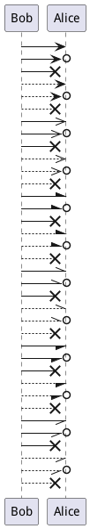 |
uml/Arrows_RL@startuml Bob <- Alice Bob o<- Alice Bob x<- Alice Bob <-- Alice Bob o<-- Alice Bob x<-- Alice Bob <<- Alice Bob o<<- Alice Bob x<<- Alice Bob <<-- Alice Bob o<<-- Alice Bob x<<-- Alice Bob \- Alice Bob o\- Alice Bob x\- Alice Bob \-- Alice Bob o\-- Alice Bob x\-- Alice Bob \\- Alice Bob o\\- Alice Bob x\\- Alice Bob \\-- Alice Bob o\\-- Alice Bob x\\-- Alice Bob /- Alice Bob o/- Alice Bob x/- Alice Bob /-- Alice Bob o/-- Alice Bob x/-- Alice Bob //- Alice Bob o//- Alice Bob x//- Alice Bob //-- Alice Bob o//-- Alice Bob x//-- Alice @enduml | 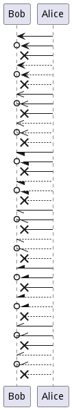 |
uml/Arrows_both@startuml Bob <-> Alice Bob o<-> Alice Bob x<-> Alice Bob <--> Alice Bob o<--> Alice Bob x<--> Alice Bob <<-> Alice Bob o<<-> Alice Bob x<<-> Alice Bob <<--> Alice Bob o<<--> Alice Bob x<<--> Alice Bob \-> Alice Bob o\-> Alice Bob x\-> Alice Bob \--> Alice Bob o\--> Alice Bob x\--> Alice Bob \\-> Alice Bob o\\-> Alice Bob x\\-> Alice Bob \\--> Alice Bob o\\--> Alice Bob x\\--> Alice Bob /-> Alice Bob o/-> Alice Bob x/-> Alice Bob /--> Alice Bob o/--> Alice Bob x/--> Alice Bob //-> Alice Bob o//-> Alice Bob x//-> Alice Bob //--> Alice Bob o//--> Alice Bob x//--> Alice Bob <->o Alice Bob o<->o Alice Bob x<->o Alice Bob <-->o Alice Bob o<-->o Alice Bob x<-->o Alice Bob <<->o Alice Bob o<<->o Alice Bob x<<->o Alice Bob <<-->o Alice Bob o<<-->o Alice Bob x<<-->o Alice Bob \->o Alice Bob o\->o Alice Bob x\->o Alice Bob \-->o Alice Bob o\-->o Alice Bob x\-->o Alice Bob \\->o Alice Bob o\\->o Alice Bob x\\->o Alice Bob \\-->o Alice Bob o\\-->o Alice Bob x\\-->o Alice Bob /->o Alice Bob o/->o Alice Bob x/->o Alice Bob /-->o Alice Bob o/-->o Alice Bob x/-->o Alice Bob //->o Alice Bob o//->o Alice Bob x//->o Alice Bob //-->o Alice Bob o//-->o Alice Bob x//-->o Alice Bob <->x Alice Bob o<->x Alice Bob x<->x Alice Bob <-->x Alice Bob o<-->x Alice Bob x<-->x Alice Bob <<->x Alice Bob o<<->x Alice Bob x<<->x Alice Bob <<-->x Alice Bob o<<-->x Alice Bob x<<-->x Alice Bob \->x Alice Bob o\->x Alice Bob x\->x Alice Bob \-->x Alice Bob o\-->x Alice Bob x\-->x Alice Bob \\->x Alice Bob o\\->x Alice Bob x\\->x Alice Bob \\-->x Alice Bob o\\-->x Alice Bob x\\-->x Alice Bob /->x Alice Bob o/->x Alice Bob x/->x Alice Bob /-->x Alice Bob o/-->x Alice Bob x/-->x Alice Bob //->x Alice Bob o//->x Alice Bob x//->x Alice Bob //-->x Alice Bob o//-->x Alice Bob x//-->x Alice Bob <->> Alice Bob o<->> Alice Bob x<->> Alice Bob <-->> Alice Bob o<-->> Alice Bob x<-->> Alice Bob <<->> Alice Bob o<<->> Alice Bob x<<->> Alice Bob <<-->> Alice Bob o<<-->> Alice Bob x<<-->> Alice Bob \->> Alice Bob o\->> Alice Bob x\->> Alice Bob \-->> Alice Bob o\-->> Alice Bob x\-->> Alice Bob \\->> Alice Bob o\\->> Alice Bob x\\->> Alice Bob \\-->> Alice Bob o\\-->> Alice Bob x\\-->> Alice Bob /->> Alice Bob o/->> Alice Bob x/->> Alice Bob /-->> Alice Bob o/-->> Alice Bob x/-->> Alice Bob //->> Alice Bob o//->> Alice Bob x//->> Alice Bob //-->> Alice Bob o//-->> Alice Bob x//-->> Alice Bob <->>o Alice Bob o<->>o Alice Bob x<->>o Alice Bob <-->>o Alice Bob o<-->>o Alice Bob x<-->>o Alice Bob <<->>o Alice Bob o<<->>o Alice Bob x<<->>o Alice Bob <<-->>o Alice Bob o<<-->>o Alice Bob x<<-->>o Alice Bob \->>o Alice Bob o\->>o Alice Bob x\->>o Alice Bob \-->>o Alice Bob o\-->>o Alice Bob x\-->>o Alice Bob \\->>o Alice Bob o\\->>o Alice Bob x\\->>o Alice Bob \\-->>o Alice Bob o\\-->>o Alice Bob x\\-->>o Alice Bob /->>o Alice Bob o/->>o Alice Bob x/->>o Alice Bob /-->>o Alice Bob o/-->>o Alice Bob x/-->>o Alice Bob //->>o Alice Bob o//->>o Alice Bob x//->>o Alice Bob //-->>o Alice Bob o//-->>o Alice Bob x//-->>o Alice Bob <->>x Alice Bob o<->>x Alice Bob x<->>x Alice Bob <-->>x Alice Bob o<-->>x Alice Bob x<-->>x Alice Bob <<->>x Alice Bob o<<->>x Alice Bob x<<->>x Alice Bob <<-->>x Alice Bob o<<-->>x Alice Bob x<<-->>x Alice Bob \->>x Alice Bob o\->>x Alice Bob x\->>x Alice Bob \-->>x Alice Bob o\-->>x Alice Bob x\-->>x Alice Bob \\->>x Alice Bob o\\->>x Alice Bob x\\->>x Alice Bob \\-->>x Alice Bob o\\-->>x Alice Bob x\\-->>x Alice Bob /->>x Alice Bob o/->>x Alice Bob x/->>x Alice Bob /-->>x Alice Bob o/-->>x Alice Bob x/-->>x Alice Bob //->>x Alice Bob o//->>x Alice Bob x//->>x Alice Bob //-->>x Alice Bob o//-->>x Alice Bob x//-->>x Alice Bob <-\ Alice Bob o<-\ Alice Bob x<-\ Alice Bob <--\ Alice Bob o<--\ Alice Bob x<--\ Alice Bob <<-\ Alice Bob o<<-\ Alice Bob x<<-\ Alice Bob <<--\ Alice Bob o<<--\ Alice Bob x<<--\ Alice Bob \-\ Alice Bob o\-\ Alice Bob x\-\ Alice Bob \--\ Alice Bob o\--\ Alice Bob x\--\ Alice Bob \\-\ Alice Bob o\\-\ Alice Bob x\\-\ Alice Bob \\--\ Alice Bob o\\--\ Alice Bob x\\--\ Alice Bob /-\ Alice Bob o/-\ Alice Bob x/-\ Alice Bob /--\ Alice Bob o/--\ Alice Bob x/--\ Alice Bob //-\ Alice Bob o//-\ Alice Bob x//-\ Alice Bob //--\ Alice Bob o//--\ Alice Bob x//--\ Alice Bob <-\o Alice Bob o<-\o Alice Bob x<-\o Alice Bob <--\o Alice Bob o<--\o Alice Bob x<--\o Alice Bob <<-\o Alice Bob o<<-\o Alice Bob x<<-\o Alice Bob <<--\o Alice Bob o<<--\o Alice Bob x<<--\o Alice Bob \-\o Alice Bob o\-\o Alice Bob x\-\o Alice Bob \--\o Alice Bob o\--\o Alice Bob x\--\o Alice Bob \\-\o Alice Bob o\\-\o Alice Bob x\\-\o Alice Bob \\--\o Alice Bob o\\--\o Alice Bob x\\--\o Alice Bob /-\o Alice Bob o/-\o Alice Bob x/-\o Alice Bob /--\o Alice Bob o/--\o Alice Bob x/--\o Alice Bob //-\o Alice Bob o//-\o Alice Bob x//-\o Alice Bob //--\o Alice Bob o//--\o Alice Bob x//--\o Alice Bob <-\x Alice Bob o<-\x Alice Bob x<-\x Alice Bob <--\x Alice Bob o<--\x Alice Bob x<--\x Alice Bob <<-\x Alice Bob o<<-\x Alice Bob x<<-\x Alice Bob <<--\x Alice Bob o<<--\x Alice Bob x<<--\x Alice Bob \-\x Alice Bob o\-\x Alice Bob x\-\x Alice Bob \--\x Alice Bob o\--\x Alice Bob x\--\x Alice Bob \\-\x Alice Bob o\\-\x Alice Bob x\\-\x Alice Bob \\--\x Alice Bob o\\--\x Alice Bob x\\--\x Alice Bob /-\x Alice Bob o/-\x Alice Bob x/-\x Alice Bob /--\x Alice Bob o/--\x Alice Bob x/--\x Alice Bob //-\x Alice Bob o//-\x Alice Bob x//-\x Alice Bob //--\x Alice Bob o//--\x Alice Bob x//--\x Alice Bob <-\\ Alice Bob o<-\\ Alice Bob x<-\\ Alice Bob <--\\ Alice Bob o<--\\ Alice Bob x<--\\ Alice Bob <<-\\ Alice Bob o<<-\\ Alice Bob x<<-\\ Alice Bob <<--\\ Alice Bob o<<--\\ Alice Bob x<<--\\ Alice Bob \-\\ Alice Bob o\-\\ Alice Bob x\-\\ Alice Bob \--\\ Alice Bob o\--\\ Alice Bob x\--\\ Alice Bob \\-\\ Alice Bob o\\-\\ Alice Bob x\\-\\ Alice Bob \\--\\ Alice Bob o\\--\\ Alice Bob x\\--\\ Alice Bob /-\\ Alice Bob o/-\\ Alice Bob x/-\\ Alice Bob /--\\ Alice Bob o/--\\ Alice Bob x/--\\ Alice Bob //-\\ Alice Bob o//-\\ Alice Bob x//-\\ Alice Bob //--\\ Alice Bob o//--\\ Alice Bob x//--\\ Alice Bob <-\\o Alice Bob o<-\\o Alice Bob x<-\\o Alice Bob <--\\o Alice Bob o<--\\o Alice Bob x<--\\o Alice Bob <<-\\o Alice Bob o<<-\\o Alice Bob x<<-\\o Alice Bob <<--\\o Alice Bob o<<--\\o Alice Bob x<<--\\o Alice Bob \-\\o Alice Bob o\-\\o Alice Bob x\-\\o Alice Bob \--\\o Alice Bob o\--\\o Alice Bob x\--\\o Alice Bob \\-\\o Alice Bob o\\-\\o Alice Bob x\\-\\o Alice Bob \\--\\o Alice Bob o\\--\\o Alice Bob x\\--\\o Alice Bob /-\\o Alice Bob o/-\\o Alice Bob x/-\\o Alice Bob /--\\o Alice Bob o/--\\o Alice Bob x/--\\o Alice Bob //-\\o Alice Bob o//-\\o Alice Bob x//-\\o Alice Bob //--\\o Alice Bob o//--\\o Alice Bob x//--\\o Alice Bob <-\\x Alice Bob o<-\\x Alice Bob x<-\\x Alice Bob <--\\x Alice Bob o<--\\x Alice Bob x<--\\x Alice Bob <<-\\x Alice Bob o<<-\\x Alice Bob x<<-\\x Alice Bob <<--\\x Alice Bob o<<--\\x Alice Bob x<<--\\x Alice Bob \-\\x Alice Bob o\-\\x Alice Bob x\-\\x Alice Bob \--\\x Alice Bob o\--\\x Alice Bob x\--\\x Alice Bob \\-\\x Alice Bob o\\-\\x Alice Bob x\\-\\x Alice Bob \\--\\x Alice Bob o\\--\\x Alice Bob x\\--\\x Alice Bob /-\\x Alice Bob o/-\\x Alice Bob x/-\\x Alice Bob /--\\x Alice Bob o/--\\x Alice Bob x/--\\x Alice Bob //-\\x Alice Bob o//-\\x Alice Bob x//-\\x Alice Bob //--\\x Alice Bob o//--\\x Alice Bob x//--\\x Alice Bob <-/ Alice Bob o<-/ Alice Bob x<-/ Alice Bob <--/ Alice Bob o<--/ Alice Bob x<--/ Alice Bob <<-/ Alice Bob o<<-/ Alice Bob x<<-/ Alice Bob <<--/ Alice Bob o<<--/ Alice Bob x<<--/ Alice Bob \-/ Alice Bob o\-/ Alice Bob x\-/ Alice Bob \--/ Alice Bob o\--/ Alice Bob x\--/ Alice Bob \\-/ Alice Bob o\\-/ Alice Bob x\\-/ Alice Bob \\--/ Alice Bob o\\--/ Alice Bob x\\--/ Alice Bob /-/ Alice Bob o/-/ Alice Bob x/-/ Alice Bob /--/ Alice Bob o/--/ Alice Bob x/--/ Alice Bob //-/ Alice Bob o//-/ Alice Bob x//-/ Alice Bob //--/ Alice Bob o//--/ Alice Bob x//--/ Alice Bob <-/o Alice Bob o<-/o Alice Bob x<-/o Alice Bob <--/o Alice Bob o<--/o Alice Bob x<--/o Alice Bob <<-/o Alice Bob o<<-/o Alice Bob x<<-/o Alice Bob <<--/o Alice Bob o<<--/o Alice Bob x<<--/o Alice Bob \-/o Alice Bob o\-/o Alice Bob x\-/o Alice Bob \--/o Alice Bob o\--/o Alice Bob x\--/o Alice Bob \\-/o Alice Bob o\\-/o Alice Bob x\\-/o Alice Bob \\--/o Alice Bob o\\--/o Alice Bob x\\--/o Alice Bob /-/o Alice Bob o/-/o Alice Bob x/-/o Alice Bob /--/o Alice Bob o/--/o Alice Bob x/--/o Alice Bob //-/o Alice Bob o//-/o Alice Bob x//-/o Alice Bob //--/o Alice Bob o//--/o Alice Bob x//--/o Alice Bob <-/x Alice Bob o<-/x Alice Bob x<-/x Alice Bob <--/x Alice Bob o<--/x Alice Bob x<--/x Alice Bob <<-/x Alice Bob o<<-/x Alice Bob x<<-/x Alice Bob <<--/x Alice Bob o<<--/x Alice Bob x<<--/x Alice Bob \-/x Alice Bob o\-/x Alice Bob x\-/x Alice Bob \--/x Alice Bob o\--/x Alice Bob x\--/x Alice Bob \\-/x Alice Bob o\\-/x Alice Bob x\\-/x Alice Bob \\--/x Alice Bob o\\--/x Alice Bob x\\--/x Alice Bob /-/x Alice Bob o/-/x Alice Bob x/-/x Alice Bob /--/x Alice Bob o/--/x Alice Bob x/--/x Alice Bob //-/x Alice Bob o//-/x Alice Bob x//-/x Alice Bob //--/x Alice Bob o//--/x Alice Bob x//--/x Alice Bob <-// Alice Bob o<-// Alice Bob x<-// Alice Bob <--// Alice Bob o<--// Alice Bob x<--// Alice Bob <<-// Alice Bob o<<-// Alice Bob x<<-// Alice Bob <<--// Alice Bob o<<--// Alice Bob x<<--// Alice Bob \-// Alice Bob o\-// Alice Bob x\-// Alice Bob \--// Alice Bob o\--// Alice Bob x\--// Alice Bob \\-// Alice Bob o\\-// Alice Bob x\\-// Alice Bob \\--// Alice Bob o\\--// Alice Bob x\\--// Alice Bob /-// Alice Bob o/-// Alice Bob x/-// Alice Bob /--// Alice Bob o/--// Alice Bob x/--// Alice Bob //-// Alice Bob o//-// Alice Bob x//-// Alice Bob //--// Alice Bob o//--// Alice Bob x//--// Alice Bob <-//o Alice Bob o<-//o Alice Bob x<-//o Alice Bob <--//o Alice Bob o<--//o Alice Bob x<--//o Alice Bob <<-//o Alice Bob o<<-//o Alice Bob x<<-//o Alice Bob <<--//o Alice Bob o<<--//o Alice Bob x<<--//o Alice Bob \-//o Alice Bob o\-//o Alice Bob x\-//o Alice Bob \--//o Alice Bob o\--//o Alice Bob x\--//o Alice Bob \\-//o Alice Bob o\\-//o Alice Bob x\\-//o Alice Bob \\--//o Alice Bob o\\--//o Alice Bob x\\--//o Alice Bob /-//o Alice Bob o/-//o Alice Bob x/-//o Alice Bob /--//o Alice Bob o/--//o Alice Bob x/--//o Alice Bob //-//o Alice Bob o//-//o Alice Bob x//-//o Alice Bob //--//o Alice Bob o//--//o Alice Bob x//--//o Alice Bob <-//x Alice Bob o<-//x Alice Bob x<-//x Alice Bob <--//x Alice Bob o<--//x Alice Bob x<--//x Alice Bob <<-//x Alice Bob o<<-//x Alice Bob x<<-//x Alice Bob <<--//x Alice Bob o<<--//x Alice Bob x<<--//x Alice Bob \-//x Alice Bob o\-//x Alice Bob x\-//x Alice Bob \--//x Alice Bob o\--//x Alice Bob x\--//x Alice Bob \\-//x Alice Bob o\\-//x Alice Bob x\\-//x Alice Bob \\--//x Alice Bob o\\--//x Alice Bob x\\--//x Alice Bob /-//x Alice Bob o/-//x Alice Bob x/-//x Alice Bob /--//x Alice Bob o/--//x Alice Bob x/--//x Alice Bob //-//x Alice Bob o//-//x Alice Bob x//-//x Alice Bob //--//x Alice Bob o//--//x Alice Bob x//--//x Alice @enduml | 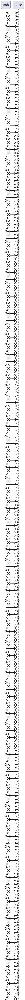 |
uml/actor@startuml actor Alice #green ' a comment this is participant Bob box "Sweet deal" participant "Mr funky foo" as M #EAA participant "Mr. Sleepy" as S #AEA end box ref over Alice, Bob: init == Auth Plot == Alice --> Bob: Authenticaion Request Bob --> Alice: Successful auth Bob --> M: Alice is on M --> Alice: Hello Alice, I am M ...time passes... M --> S: Here is some dough! Alice --> Alice: Say, is it breezy? activate Alice ||22|| Alice --> M: Pleased to meet you,\nNow about Bob... ||22|| destroy Alice Bob --> M: Woops, Alice was destroyed deactivate Bob == Revival == activate M M ->]: << createSomeFoo >> M <--]: DidMakeSomeFoo M -->o Alice: Thou art revived! deactivate M @enduml | 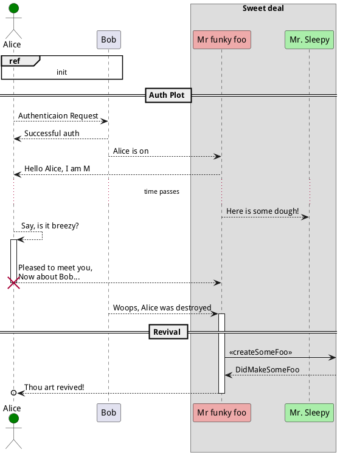 |
uml/class@startuml class Foo <<Bar>> { You can use several lines .. As you want and group == things together. -- You can have as many groups as you want. -- +publicMethod() -privateMethod() #protectedMethod() End of class } class Bar { note: This is a class .. Hello foo .. +public .. Private things prefixed with - .. -private #protected int foo String password } interface IBar { int a int b -- +public() -private() } Foo --> Bar IBar --> Foo IBar --> Bar @enduml | 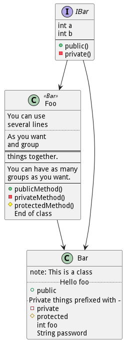 |
uml/mindmap-multilines@startmindmap * foo **:multi line; **_:multiline without box; ***[#red] inline color ***[#blue]_ inline color without box @endmindmap | 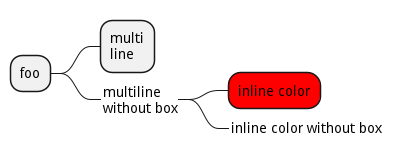 |
uml/object@startuml title Objects and Interfaces interface Zzapper <<FooFoo>> { +publicAbc() #protectedAbc() } object Zzap { int a int b -- +publicAbc() #protectedAbc() -privateAbc() note: This is an object == note: here is a loop } object User { name = "dummy" id = 123 -- +userJump(int length) +userEat(Food food) } object Food { int calories string name } object Store { name = "superCat" id = 347 } Zzapper --> Zzap User --|> Store User --|> Zzap Food --* User Food --o Store @enduml | 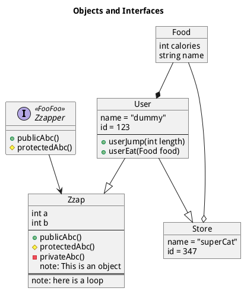 |
uml/reference_01-01-1_Basic-examples@startuml Alice -> Bob: Authentication Request Bob --> Alice: Authentication Response Alice -> Bob: Another authentication Request Alice <-- Bob: another authentication Response @enduml | 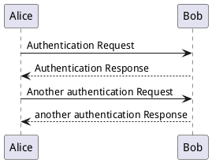 |
uml/reference_01-02-1_Declaring-participant@startuml participant participant as Foo actor actor as Foo1 boundary boundary as Foo2 control control as Foo3 entity entity as Foo4 database database as Foo5 collections collections as Foo6 queue queue as Foo7 Foo -> Foo1 : To actor Foo -> Foo2 : To boundary Foo -> Foo3 : To control Foo -> Foo4 : To entity Foo -> Foo5 : To database Foo -> Foo6 : To collections Foo -> Foo7: To queue @enduml | 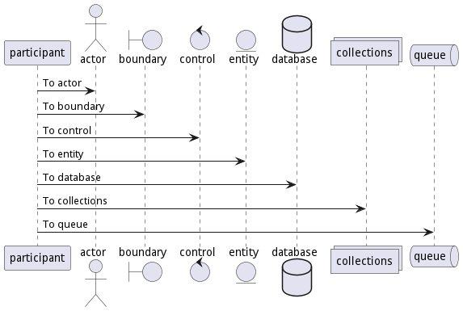 |
uml/reference_01-02-2_Declaring-participant@startuml actor Bob #red ' The only difference between actor 'and participant is the drawing participant Alice participant "I have a really\nlong name" as L #99FF99 /' You can also declare: participant L as "I have a really\nlong name" #99FF99 '/ Alice->Bob: Authentication Request Bob->Alice: Authentication Response Bob->L: Log transaction @enduml | 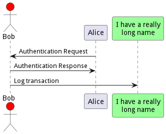 |
uml/reference_01-02-3_Declaring-participant@startuml participant Last order 30 participant Middle order 20 participant First order 10 @enduml | 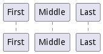 |
uml/reference_01-03-1_Use-non-letters-in-participants@startuml Alice -> "Bob()" : Hello "Bob()" -> "This is very\nlong" as Long ' You can also declare: ' "Bob()" -> Long as "This is very\nlong" Long --> "Bob()" : ok @enduml | 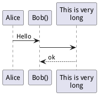 |
uml/reference_01-04-1_Message-to-Self@startuml Alice->Alice: This is a signal to self.\nIt also demonstrates\nmultiline \ntext @enduml | 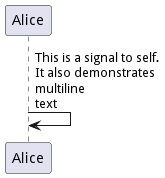 |
uml/reference_01-05-1_Text-alignment@startuml skinparam responseMessageBelowArrow true Bob -> Alice : hello Alice -> Bob : ok @enduml | 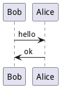 |
uml/reference_01-06-1_Change-arrow-style@startuml Bob ->x Alice Bob -> Alice Bob ->> Alice Bob -\ Alice Bob \\- Alice Bob //-- Alice Bob ->o Alice Bob o\\-- Alice Bob <-> Alice Bob <->o Alice @enduml | 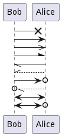 |
uml/reference_01-07-1_Change-arror-color@startuml Bob -[#red]> Alice : hello Alice -[#0000FF]->Bob : ok @enduml |
|
uml/reference_01-08-1_Message-sequence-numbering@startuml autonumber Bob -> Alice : Authentication Request Bob <- Alice : Authentication Response @enduml | 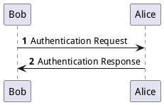 |
uml/reference_01-08-2_Message-sequence-numbering@startuml autonumber Bob -> Alice : Authentication Request Bob <- Alice : Authentication Response autonumber 15 Bob -> Alice : Another authentication Request Bob <- Alice : Another authentication Response autonumber 40 10 Bob -> Alice : Yet another authentication Request Bob <- Alice : Yet another authentication Response @enduml | 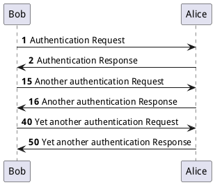 |
uml/reference_01-08-3_Message-sequence-numbering@startuml autonumber "<b>[000]" Bob -> Alice : Authentication Request Bob <- Alice : Authentication Response autonumber 15 "<b>(<u>##</u>)" Bob -> Alice : Another authentication Request Bob <- Alice : Another authentication Response autonumber 40 10 "<font color=red><b>Message 0 " Bob -> Alice : Yet another authentication Request Bob <- Alice : Yet another authentication Response @enduml | 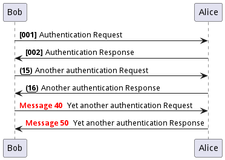 |
uml/reference_01-08-4_Message-sequence-numbering@startuml autonumber 10 10 "<b>[000]" Bob -> Alice : Authentication Request Bob <- Alice : Authentication Response autonumber stop Bob -> Alice : dummy autonumber resume "<font color=red><b>Message 0 " Bob -> Alice : Yet another authentication Request Bob <- Alice : Yet another authentication Response autonumber stop Bob -> Alice : dummy autonumber resume 1 "<font color=blue><b>Message 0 " Bob -> Alice : Yet another authentication Request Bob <- Alice : Yet another authentication Response @enduml | 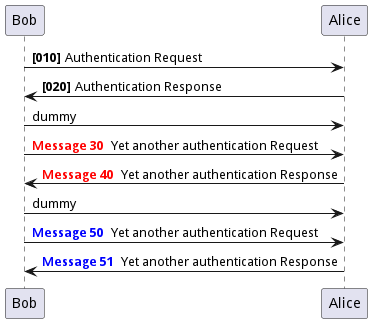 |
uml/reference_01-09-1_Page-Title-Header-and-Footer@startuml header Page Header footer Page %page% of %lastpage% title Example Title Alice -> Bob : message 1 Alice -> Bob : message 2 @enduml | 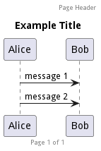 |
uml/reference_01-10-1_Split-diagrams@startuml Alice -> Bob : message 1 Alice -> Bob : message 2 newpage Alice -> Bob : message 3 Alice -> Bob : message 4 newpage A title for the\nlast page Alice -> Bob : message 5 Alice -> Bob : message 6 @enduml | 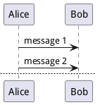 |
uml/reference_01-11-1_Grouping-message@startuml Alice -> Bob: Authentication Request alt successful case Bob -> Alice: Authentication Accepted else some kind of failure Bob -> Alice: Authentication Failure group My own label Alice -> Log : Log attack start loop 1000 times Alice -> Bob: DNS Attack end Alice -> Log : Log attack end end else Another type of failure Bob -> Alice: Please repeat end @enduml | 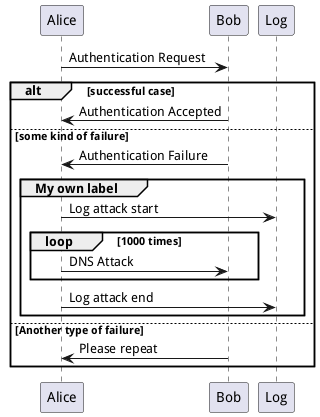 |
uml/reference_01-12-1_Secondary-group-label@startuml Alice -> Bob: Authentication Request alt successful case Bob -> Alice: Authentication Accepted else some kind of failure Bob -> Alice: Authentication Failure group My own label Alice -> Log : Log attack start loop 1000 times Alice -> Bob: DNS Attack end Alice -> Log : Log attack end end else Another type of failure Bob -> Alice: Please repeat end @enduml | 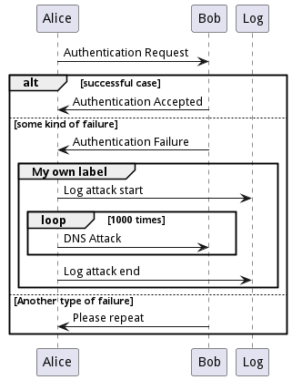 |
uml/reference_01-13-1_Notes-on-messages@startuml Alice->Bob : hello note left: this is a first note Bob->Alice : ok note right: this is another note Bob->Bob : I am thinking note left a note can also be defined on several lines end note @enduml | 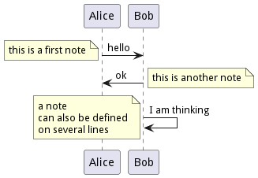 |
uml/reference_01-14-1_Some-other-notes@startuml participant Alice participant Bob note left of Alice #aqua This is displayed left of Alice. end note note right of Alice: This is displayed right of Alice. note over Alice: This is displayed over Alice. note over Alice, Bob #FFAAAA: This is displayed\n over Bob and Alice. note over Bob, Alice This is yet another example of a long note. end note @enduml | 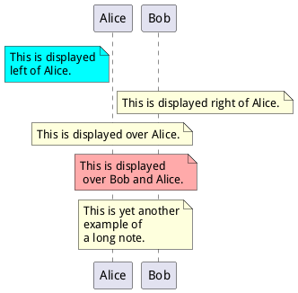 |
uml/reference_01-15-1_Changing-notes-shape@startuml caller -> server : conReq hnote over caller : idle caller <- server : conConf rnote over server "r" as rectangle "h" as hexagon endrnote rnote over server this is on several lines endrnote hnote over caller this is on several lines endhnote @enduml | 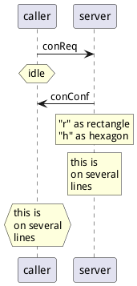 |
uml/reference_01-16-1_Note-over-all-participants@startuml Alice->Bob:m1 Bob->Charlie:m2 note over Alice, Charlie: Old method for note over all part. with:\n ""note over //FirstPart, LastPart//"". note across: New method with:\n""note across"" Bob->Alice hnote across:Note across all part. @enduml | 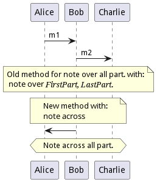 |
uml/reference_01-17-1_Several-notes-aligned-at-the-same-level@startuml note over Alice : initial state of Alice note over Bob : initial state of Bob Bob -> Alice : hello @enduml | 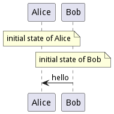 |
uml/reference_01-17-2_Several-notes-aligned-at-the-same-level@startuml note over Alice : initial state of Alice / note over Bob : initial state of Bob Bob -> Alice : hello @enduml | 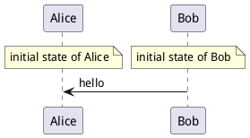 |
uml/reference_01-18-1_Creole-and-HTML@startuml participant Alice participant "The **Famous** Bob" as Bob Alice -> Bob : hello --there-- ... Some ~~long delay~~ ... Bob -> Alice : ok note left This is **bold** This is //italics// This is ""monospaced"" This is --stroked-- This is __underlined__ This is ~~waved~~ end note Alice -> Bob : A //well formatted// message note right of Alice This is <back:cadetblue><size:18>displayed</size></back> __left of__ Alice. end note note left of Bob <u:red>This</u> is <color #118888>displayed</color> **<color purple>left of</color> <s:red>Alice</strike> Bob**. end note note over Alice, Bob <w:#FF33FF>This is hosted</w> by <img sourceforge.jpg> end note @enduml | 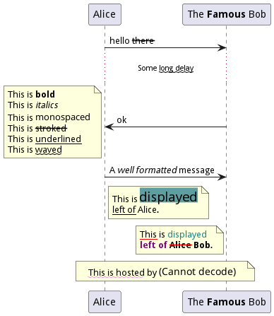 |
uml/reference_01-19-1_Divider-or-separator@startuml == Initialization == Alice -> Bob: Authentication Request Bob --> Alice: Authentication Response == Repetition == Alice -> Bob: Another authentication Request Alice <-- Bob: another authentication Response @enduml | 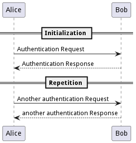 |
uml/reference_01-20-1_Reference@startuml participant Alice actor Bob ref over Alice, Bob : init Alice -> Bob : hello ref over Bob This can be on several lines end ref @enduml | 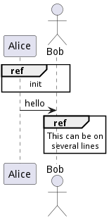 |
uml/reference_01-21-1_Delay@startuml Alice -> Bob: Authentication Request ... Bob --> Alice: Authentication Response ...5 minutes latter... Bob --> Alice: Bye ! @enduml |

|
uml/reference_01-22-1_Text-wrapping@startuml skinparam maxMessageSize 50 participant a participant b a -> b : this\nis\nmanually\ndone a -> b : this is a very long message on several words @enduml | 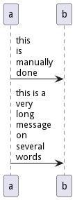 |
uml/reference_01-23-1_Space@startuml Alice -> Bob: message 1 Bob --> Alice: ok ||| Alice -> Bob: message 2 Bob --> Alice: ok ||45|| Alice -> Bob: message 3 Bob --> Alice: ok @enduml | 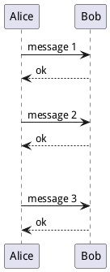 |
uml/reference_01-24-1_lifeline@startuml participant User User -> A: DoWork activate A A -> B: << createRequest >> activate B B -> C: DoWork activate C C --> B: WorkDone destroy C B --> A: RequestCreated deactivate B A -> User: Done deactivate A @enduml | 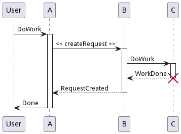 |
uml/reference_01-24-2_lifeline@startuml participant User User -> A: DoWork activate A #FFBBBB A -> A: Internal call activate A #DarkSalmon A -> B: << createRequest >> activate B B --> A: RequestCreated deactivate B deactivate A A -> User: Done deactivate A @endum | 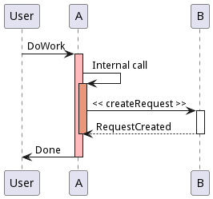 |
uml/reference_01-24-3_lifeline@startuml autoactivate on alice -> bob : hello bob -> bob : self call bill -> bob #005500 : hello from thread 2 bob -> george ** : create return done in thread 2 return rc bob -> george !! : delete return success @enduml | 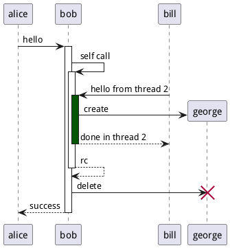 |
uml/reference_01-25-1_Return@startuml Bob -> Alice : hello activate Alice Alice -> Alice : some action return bye @enduml | 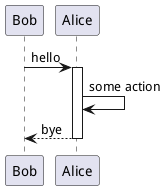 |
uml/reference_01-26-1_Participant-creation@startuml Bob -> Alice : hello create Other Alice -> Other : new create control String Alice -> String note right : You can also put notes! Alice --> Bob : ok @enduml | 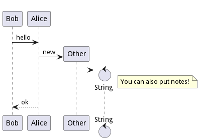 |
uml/reference_01-27-1_Shortcut-syntax-for-activation-deactivation-creation@startuml alice -> bob ++ : hello bob -> bob ++ : self call bob -> bib ++ #005500 : hello bob -> george ** : create return done return rc bob -> george !! : delete return success @enduml | 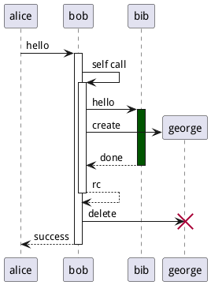 |
uml/reference_01-28-1_Incoming-and-outgoing-messages@startuml [-> A: DoWork activate A A -> A: Internal call activate A A ->] : << createRequest >> A<--] : RequestCreated deactivate A [<- A: Done deactivate A @enduml | 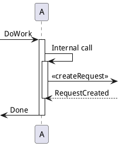 |
uml/reference_01-28-2_Incoming-and-outgoing-messages@startuml participant Alice participant Bob #lightblue Alice -> Bob Bob -> Carol ... [-> Bob [o-> Bob [o->o Bob [x-> Bob ... [<- Bob [x<- Bob ... Bob ->] Bob ->o] Bob o->o] Bob ->x] ... Bob <-] Bob x<-] @enduml | 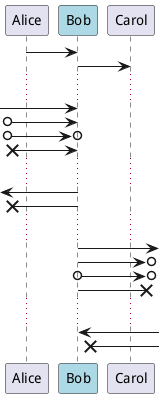 |
uml/reference_01-29-1_Short-arrows-for-incoming-and-outgoing-messages@startuml ?-> Alice : ""?->""\n**short** to actor1 [-> Alice : ""[->""\n**from start** to actor1 [-> Bob : ""[->""\n**from start** to actor2 ?-> Bob : ""?->""\n**short** to actor2 Alice ->] : ""->]""\nfrom actor1 **to end** Alice ->? : ""->?""\n**short** from actor1 Alice -> Bob : ""->"" \nfrom actor1 to actor2 @enduml | 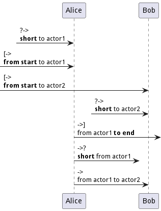 |
uml/reference_01-30-1_Anchors-and-Durations@startuml !pragma teoz true {start} Alice -> Bob : start doing things during duration Bob -> Max : something Max -> Bob : something else {end} Bob -> Alice : finish {start} <-> {end} : some time @enduml | 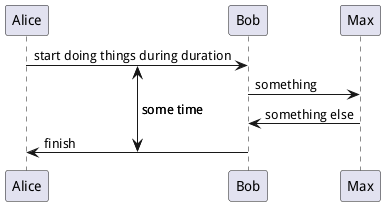 |
uml/reference_01-31-1_Stereotypes-and-Spots@startuml participant "Famous Bob" as Bob << Generated >> participant Alice << (C,#ADD1B2) Testable >> Bob->Alice: First message @enduml | 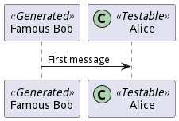 |
uml/reference_01-31-2_Stereotypes-and-Spots@startuml skinparam guillemet false participant "Famous Bob" as Bob << Generated >> participant Alice << (C,#ADD1B2) Testable >> Bob->Alice: First message @enduml | 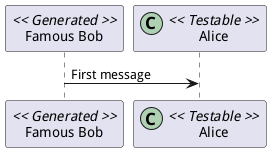 |
uml/reference_01-31-3_Stereotypes-and-Spots@startuml participant Bob << (C,#ADD1B2) >> participant Alice << (C,#ADD1B2) >> Bob->Alice: First message @enduml | 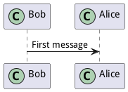 |
uml/reference_01-32-1_More-information-on-titles@startuml title __Simple__ **communication** example Alice -> Bob: Authentication Request Bob -> Alice: Authentication Response @enduml | 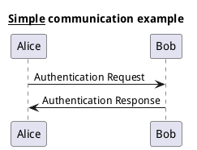 |
uml/reference_01-32-2_More-information-on-titles@startuml title __Simple__ communication example\non several lines Alice -> Bob: Authentication Request Bob -> Alice: Authentication Response @enduml | 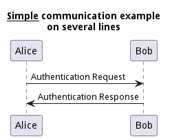 |
uml/reference_01-32-3_More-information-on-titles@startuml title <u>Simple</u> communication example on <i>several</i> lines and using <font color=red>html</font> This is hosted by <img:sourceforge.jpg> end title Alice -> Bob: Authentication Request Bob -> Alice: Authentication Response @enduml | 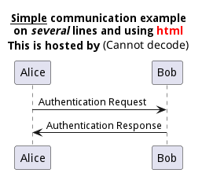 |
uml/reference_01-33-1_Participants-encompass@startuml box "Internal Service" #LightBlue participant Bob participant Alice end box participant Other Bob -> Alice : hello Alice -> Other : hello @enduml |
uml/reference_01-34-1_Removing-Foot-Boxes@startuml hide footbox title Footer removed Alice -> Bob: Authentication Request Bob --> Alice: Authentication Response @enduml |
uml/reference_01-35-1_Skinparam@startuml skinparam sequenceArrowThickness 2 skinparam roundcorner 20 skinparam maxmessagesize 60 skinparam sequenceParticipant underline actor User participant "First Class" as A participant "Second Class" as B participant "Last Class" as C User -> A: DoWork activate A A -> B: Create Request activate B B -> C: DoWork activate C C --> B: WorkDone destroy C B --> A: Request Created deactivate B A --> User: Done deactivate A @enduml |
uml/reference_01-35-2_Skinparam@startuml skinparam backgroundColor #EEEBDC skinparam handwritten true skinparam sequence { ArrowColor DeepSkyBlue ActorBorderColor DeepSkyBlue LifeLineBorderColor blue LifeLineBackgroundColor #A9DCDF ParticipantBorderColor DeepSkyBlue ParticipantBackgroundColor DodgerBlue ParticipantFontName Impact ParticipantFontSize 17 ParticipantFontColor #A9DCDF ActorBackgroundColor aqua ActorFontColor DeepSkyBlue ActorFontSize 17 ActorFontName Aapex } actor User participant "First Class" as A participant "Second Class" as B participant "Last Class" as C User -> A: DoWork activate A A -> B: Create Request activate B B -> C: DoWork activate C C --> B: WorkDone destroy C B --> A: Request Created deactivate B A --> User: Done deactivate A @enduml |
uml/reference_01-36-1_Changing_padding@startuml skinparam ParticipantPadding 20 skinparam BoxPadding 10 box "Foo1" participant Alice1 participant Alice2 end box box "Foo2" participant Bob1 participant Bob2 end box Alice1 -> Bob1 : hello Alice1 -> Out : out @enduml |
uml/reference_02-01-1_Usecase@startuml (First usecase) (Another usecase) as (UC2) usecase UC3 usecase (Last\nusecase) as UC4 @enduml |

|
uml/reference_02-02-1_Actors@startuml :First Actor: :Another\nactor: as Men2 actor Men3 actor :Last actor: as Men4 @enduml |
uml/reference_02-03-1_Stick-man@startuml :User: --> (Use) "Main Admin" as Admin "Use the application" as (Use) Admin --> (Admin the application) @enduml |
uml/reference_02-03-2_Awesome-man@startuml skinparam actorStyle awesome :User: --> (Use) "Main Admin" as Admin "Use the application" as (Use) Admin --> (Admin the application) @enduml |
uml/reference_02-03-3_Hollow-man@startuml skinparam actorStyle Hollow :User: --> (Use) "Main Admin" as Admin "Use the application" as (Use) Admin --> (Admin the application) @enduml |
uml/reference_02-04-1_Usecases-description@startuml usecase UC1 as "You can use several lines to define your usecase. You can also use separators. -- Several separators are possible. == And you can add titles: ..Conclusion.. This allows large description." @enduml |
uml/reference_02-05-1_Use-package@startuml left to right direction actor Guest as g package Professional { actor Chef as c actor "Food Critic" as fc } package Restaurant { usecase "Eat Food" as UC1 usecase "Pay for Food" as UC2 usecase "Drink" as UC3 usecase "Review" as UC4 } fc --> UC4 g --> UC1 g --> UC2 g --> UC3 @enduml |
uml/reference_02-05-2_Use-package@startuml left to right direction actor "Food Critic" as fc rectangle Restaurant { usecase "Eat Food" as UC1 usecase "Pay for Food" as UC2 usecase "Drink" as UC3 } fc --> UC1 fc --> UC2 fc --> UC3 @enduml |
uml/reference_02-06-1_Basic-example@startuml User -> (Start) User --> (Use the application) : A small label :Main Admin: ---> (Use the application) : This is\nyet another\nlabel @enduml |
uml/reference_02-07-1_Extension@startuml :Main Admin: as Admin (Use the application) as (Use) User <|-- Admin (Start) <|-- (Use) @enduml |
uml/reference_02-08-1_Using-notes@startuml :Main Admin: as Admin (Use the application) as (Use) User -> (Start) User --> (Use) Admin ---> (Use) note right of Admin : This is an example. note right of (Use) A note can also be on several lines end note note "This note is connected\nto several objects." as N2 (Start) .. N2 N2 .. (Use) @enduml |
uml/reference_02-09-1_Stereotypes@startuml User << Human >> :Main Database: as MySql << Application >> (Start) << One Shot >> (Use the application) as (Use) << Main >> User -> (Start) User --> (Use) MySql --> (Use) @enduml |
uml/reference_02-10-1_Changing-arrows-direction@startuml :user: --> (Use case 1) :user: -> (Use case 2) @enduml |
uml/reference_02-10-2_Changing-arrows-direction@startuml (Use case 1) <.. :user: (Use case 2) <- :user: @enduml |
uml/reference_02-10-3_Changing-arrows-direction@startuml :user: -left-> (dummyLeft) :user: -right-> (dummyRight) :user: -up-> (dummyUp) :user: -down-> (dummyDown) @enduml |
uml/reference_02-10-4_Changing-arrows-direction@startuml left to right direction :user: -left-> (dummyLeft) :user: -right-> (dummyRight) :user: -up-> (dummyUp) :user: -down-> (dummyDown) @enduml |
uml/reference_02-11-1_Splitting-diagrams@startuml :actor1: --> (Usecase1) newpage :actor2: --> (Usecase2) @enduml |
uml/reference_02-12-1_Left-to-right-direction@startuml 'default top to bottom direction user1 --> (Usecase 1) user2 --> (Usecase 2) @enduml |
uml/reference_02-12-2_Left-to-right-direction@startuml left to right direction user1 --> (Usecase 1) user2 --> (Usecase 2) @enduml |
uml/reference_02-13-1_Skinparam@startuml skinparam handwritten true skinparam usecase { BackgroundColor DarkSeaGreen BorderColor DarkSlateGray BackgroundColor<< Main >> YellowGreen BorderColor<< Main >> YellowGreen ArrowColor Olive ActorBorderColor black ActorFontName Courier ActorBackgroundColor<< Human >> Gold } User << Human >> :Main Database: as MySql << Application >> (Start) << One Shot >> (Use the application) as (Use) << Main >> User -> (Start) User --> (Use) MySql --> (Use) @enduml |
uml/reference_02-14-1_Complete-example@startuml left to right direction skinparam packageStyle rectangle actor customer actor clerk rectangle checkout { customer -- (checkout) (checkout) .> (payment) : include (help) .> (checkout) : extends (checkout) -- clerk } @enduml |
uml/reference_02-15-1_Business-Use-Case@startuml (First usecase)/ (Another usecase)/ as (UC2) usecase/ UC3 usecase/ (Last\nusecase) as UC4 @enduml |
uml/reference_02-15-2_Business-Actor@startuml :First Actor:/ :Another\nactor:/ as Man2 actor/ Woman3 actor/ :Last actor: as Person1 @enduml |
uml/reference_02-16-1_Change-arrow-color-and-style@startuml actor foo foo --> (bar) : normal foo --> (bar1) #line:red;line.bold;text:red : red bold foo --> (bar2) #green;line.dashed;text:green : green dashed foo --> (bar3) #blue;line.dotted;text:blue : blue dotted @enduml |
uml/reference_02-17-1_Change-element-color-and-style@startuml actor a actor b #pink;line:red;line.bold;text:red usecase c #palegreen;line:green;line.dashed;text:green usecase d #aliceblue;line:blue;line.dotted;text:blue @enduml |
uml/reference_03-01-1_Declaring-element@startuml abstract abstract abstract class "abstract class" annotation annotation circle circle () circle_short_form class class diamond diamond <> diamond_short_form entity entity enum enum interface interface @enduml |
uml/reference_03-02-1_Relations-between-classes@startuml Class01 <|-- Class02 Class03 *-- Class04 Class05 o-- Class06 Class07 .. Class08 Class09 -- Class10 @enduml |
uml/reference_03-02-2_Relations-between-classes@startuml Class11 <|.. Class12 Class13 --> Class14 Class15 ..> Class16 Class17 ..|> Class18 Class19 <--* Class20 @enduml |
uml/reference_03-02-3_Relations-between-classes@startuml Class21 #-- Class22 Class23 x-- Class24 Class25 }-- Class26 Class27 +-- Class28 Class29 ^-- Class30 @enduml |
uml/reference_03-03-1_Label-on-relations@startuml Class01 "1" *-- "many" Class02 : contains Class03 o-- Class04 : aggregation Class05 --> "1" Class06 @enduml |
uml/reference_03-03-2_Label-on-relations@startuml class Car Driver - Car : drives > Car *- Wheel : have 4 > Car -- Person : < owns @enduml |
uml/reference_03-04-1_Adding-methods@startuml Object <|-- ArrayList Object : equals() ArrayList : Object[] elementData ArrayList : size() @enduml |
uml/reference_03-04-2_Adding-methods@startuml class Dummy { String data void methods() } class Flight { flightNumber : Integer departureTime : Date } @enduml |
uml/reference_03-04-3_Adding-methods@startuml class Dummy { {field} A field (despite parentheses) {method} Some method } @enduml |
uml/reference_03-05-1_Defining-visibility@startuml class Dummy { -field1 #field2 ~method1() +method2() } @enduml |

|
uml/reference_03-05-2_Defining-visibility@startuml skinparam classAttributeIconSize 0 class Dummy { -field1 #field2 ~method1() +method2() } @enduml |
uml/reference_03-06-1_Abstract-and-Static@startuml class Dummy { {static} String id {abstract} void methods() } @enduml |
uml/reference_03-07-1_Advanced-class-body@startuml class Foo1 { You can use several lines .. as you want and group == things together. __ You can have as many groups as you want -- End of class } class User { .. Simple Getter .. + getName() + getAddress() .. Some setter .. + setName() __ private data __ int age -- encrypted -- String password } @enduml |
uml/reference_03-08-1_Notes-and-stereotypes@startuml class Object << general >> Object <|--- ArrayList note top of Object : In java, every class\nextends this one. note "This is a floating note" as N1 note "This note is connected\nto several objects." as N2 Object .. N2 N2 .. ArrayList class Foo note left: On last defined class @enduml |
uml/reference_03-09-1_More-on-notes@startuml class Foo note left: On last defined class note top of Object In java, <size:18>every</size> <u>class</u> <b>extends</b> <i>this</i> one. end note note as N1 This note is <u>also</u> <b><color:royalBlue>on several</color> <s>words</s> lines And this is hosted by <img:sourceforge.jpg> end note @enduml |
uml/reference_03-10-1_Note-on-field-or-method@startuml class A { {static} int counter +void {abstract} start(int timeout) } note right of A::counter This member is annotated end note note right of A::start This method is now explained in a UML note end note @enduml |
uml/reference_03-10-2_Note-on-method-with-the-same-name@startuml class A { {static} int counter +void {abstract} start(int timeoutms) +void {abstract} start(Duration timeout) } note left of A::counter This member is annotated end note note right of A::"start(int timeoutms)" This method with int end note note right of A::"start(Duration timeout)" This method with Duration end note @enduml |
uml/reference_03-11-1_Note-on-links@startuml class Dummy Dummy --> Foo : A link note on link #red: note that is red Dummy --> Foo2 : Another link note right on link #blue this is my note on right link and in blue end note @enduml |
uml/reference_03-12-1_Abstract-class-and-interface@startuml abstract class AbstractList abstract AbstractCollection interface List interface Collection List <|-- AbstractList Collection <|-- AbstractCollection Collection <|- List AbstractCollection <|- AbstractList AbstractList <|-- ArrayList class ArrayList { Object[] elementData size() } enum TimeUnit { DAYS HOURS MINUTES } annotation SuppressWarnings @enduml |
uml/reference_03-13-1_Using-non-letters@startuml class "This is my class" as class1 class class2 as "It works this way too" class2 *-- "foo/dummy" : use @enduml |
uml/reference_03-14-1_Hide-attributes-methods@startuml class Dummy1 { +myMethods() } class Dummy2 { +hiddenMethod() } class Dummy3 <<Serializable>> { String name } hide members hide <<Serializable>> circle show Dummy1 methods show <<Serializable>> fields @enduml |
uml/reference_03-15-1_Hide-classes@startuml class Foo1 class Foo2 Foo2 *-- Foo1 hide Foo2 @enduml |
uml/reference_03-16-1_Remove-classes@startuml class Foo1 class Foo2 Foo2 *-- Foo1 remove Foo2 @enduml |
uml/reference_03-17-1_Hide-or-Remove-unlinked-class@startuml class C1 class C2 class C3 C1 -- C2 @enduml |
uml/reference_03-17-2_Hide-or-Remove-unlinked-class@startuml class C1 class C2 class C3 C1 -- C2 hide @unlinked @enduml |

|
uml/reference_03-17-3_Hide-or-Remove-unlinked-class@startuml class C1 class C2 class C3 C1 -- C2 remove @unlinked @enduml |
uml/reference_03-18-1_Use-generics@startuml class Foo<? extends Element> { int size() } Foo *- Element @enduml |
uml/reference_03-19-1_Specific-Spot@startuml class System << (S,#FF7700) Singleton >> class Date << (D,orchid) >> @enduml |
uml/reference_03-20-1_Packages@startuml package "Classic Collections" #DDDDDD { Object <|-- ArrayList } package net.sourceforge.plantuml { Object <|-- Demo1 Demo1 *- Demo2 } @enduml |
uml/reference_03-21-1_Packages-style@startuml scale 750 width package foo1 <<Node>> { class Class1 } package foo2 <<Rectangle>> { class Class2 } package foo3 <<Folder>> { class Class3 } package foo4 <<Frame>> { class Class4 } package foo5 <<Cloud>> { class Class5 } package foo6 <<Database>> { class Class6 } @enduml |
uml/reference_03-21-2_Packages-style@startuml skinparam packageStyle rectangle package foo1.foo2 { } package foo1.foo2.foo3 { class Object } foo1.foo2 +-- foo1.foo2.foo3 @enduml |
uml/reference_03-22-1_Namespaces@startuml class BaseClass namespace net.dummy #DDDDDD { .BaseClass <|-- Person Meeting o-- Person .BaseClass <|- Meeting } namespace net.foo { net.dummy.Person <|- Person .BaseClass <|-- Person net.dummy.Meeting o-- Person } BaseClass <|-- net.unused.Person @enduml |
uml/reference_03-23-1_Automatic-namespace-creation@startuml set namespaceSeparator :: class X1::X2::foo { some info } @enduml |
uml/reference_03-23-2_Automatic-namespace-creation@startuml set namespaceSeparator none class X1.X2.foo { some info } @enduml |
uml/reference_03-24-1_Lollipop-interface@startuml class foo bar ()- foo @enduml |

|
uml/reference_03-25-1_Changing-arrows-direction@startuml Room o- Student Room *-- Chair @enduml |
uml/reference_03-25-2_Changing-arrows-direction@startuml Student -o Room Chair --* Room @enduml |
uml/reference_03-25-3_Changing-arrows-direction@startuml foo -left-> dummyLeft foo -right-> dummyRight foo -up-> dummyUp foo -down-> dummyDown @enduml |
uml/reference_03-25-4_Changing-arrows-direction@startuml left to right direction foo -left-> dummyLeft foo -right-> dummyRight foo -up-> dummyUp foo -down-> dummyDown @enduml |
uml/reference_03-26-1_Association-classes@startuml class Student { Name } Student "0..*" - "1..*" Course (Student, Course) .. Enrollment class Enrollment { drop() cancel() } @enduml |
uml/reference_03-26-2_Association-classes@startuml class Student { Name } Student "0..*" -- "1..*" Course (Student, Course) . Enrollment class Enrollment { drop() cancel() } @enduml |
uml/reference_03-27-1_Association-on-same-classe@startuml class Station { +name: string } class StationCrossing { +cost: TimeInterval } <> diamond StationCrossing . diamond diamond - "from 0..*" Station diamond - "to 0..* " Station @enduml |
uml/reference_03-28-1_Skinparam@startuml skinparam class { BackgroundColor PaleGreen ArrowColor SeaGreen BorderColor SpringGreen } skinparam stereotypeCBackgroundColor YellowGreen Class01 "1" *-- "many" Class02 : contains Class03 o-- Class04 : aggregation @enduml |
uml/reference_03-29-1_Skinned-Stereotypes@startuml skinparam class { BackgroundColor PaleGreen ArrowColor SeaGreen BorderColor SpringGreen BackgroundColor<<Foo>> Wheat BorderColor<<Foo>> Tomato } skinparam stereotypeCBackgroundColor YellowGreen skinparam stereotypeCBackgroundColor<< Foo >> DimGray Class01 <<Foo>> Class03 <<Foo>> Class01 "1" *-- "many" Class02 : contains Class03 o-- Class04 : aggregation @enduml |
uml/reference_03-30-1_Color-gradient@startuml skinparam backgroundcolor AntiqueWhite/Gold skinparam classBackgroundColor Wheat|CornflowerBlue class Foo #red-green note left of Foo #blue\9932CC this is my note on this class end note package example #GreenYellow/LightGoldenRodYellow { class Dummy } @enduml |
uml/reference_03-31-1_Help-on-layout@startuml class Bar1 class Bar2 together { class Together1 class Together2 class Together3 } Together1 - Together2 Together2 - Together3 Together2 -[hidden]--> Bar1 Bar1 -[hidden]> Bar2 @enduml |
uml/reference_03-32-1_Splitting-large-files@startuml ' Split into 4 pages page 2x2 skinparam pageMargin 10 skinparam pageExternalColor gray skinparam pageBorderColor black class BaseClass namespace net.dummy #DDDDDD { .BaseClass <|-- Person Meeting o-- Person .BaseClass <|- Meeting } namespace net.foo { net.dummy.Person <|- Person .BaseClass <|-- Person net.dummy.Meeting o-- Person } BaseClass <|-- net.unused.Person @enduml |
uml/reference_03-33-1_Extends-and-implements@startuml class ArrayList implements List class ArrayList extends AbstractList @enduml |
uml/reference_03-34-01-1_Bracketed-relations-style-Line-style@startuml title Bracketed line style without label class foo class bar bar1 : [bold] bar2 : [dashed] bar3 : [dotted] bar4 : [hidden] bar5 : [plain] foo --> bar foo -[bold]-> bar1 foo -[dashed]-> bar2 foo -[dotted]-> bar3 foo -[hidden]-> bar4 foo -[plain]-> bar5 @enduml |
uml/reference_03-34-01-2_Bracketed-relations-style-Line-style@startuml title Bracketed line style with label class foo class bar bar1 : [bold] bar2 : [dashed] bar3 : [dotted] bar4 : [hidden] bar5 : [plain] foo --> bar : ? foo -[bold]-> bar1 : [bold] foo -[dashed]-> bar2 : [dashed] foo -[dotted]-> bar3 : [dotted] foo -[hidden]-> bar4 : [hidden] foo -[plain]-> bar5 : [plain] @enduml |
uml/reference_03-34-02-1_Bracketed-relations-style-Line-color@startuml title Bracketed line color class foo class bar bar1 : [#red] bar2 : [#green] bar3 : [#blue] foo --> bar foo -[#red]-> bar1 : [#red] foo -[#green]-> bar2 : [#green] foo -[#blue]-> bar3 : [#blue] 'foo -[#blue;#yellow;#green]-> bar4 @enduml |
uml/reference_03-34-03-1_Bracketed-relations-style-Line-thickness@startuml title Bracketed line thickness class foo class bar bar1 : [thickness=1] bar2 : [thickness=2] bar3 : [thickness=4] bar4 : [thickness=8] bar5 : [thickness=16] foo --> bar : ∅ foo -[thickness=1]-> bar1 : [1] foo -[thickness=2]-> bar2 : [2] foo -[thickness=4]-> bar3 : [4] foo -[thickness=8]-> bar4 : [8] foo -[thickness=16]-> bar5 : [16] @enduml |
uml/reference_03-34-04-1_Bracketed-relations-style-Mix@startuml title Bracketed line style mix class foo class bar bar1 : [#red,thickness=1] bar2 : [#red,dashed,thickness=2] bar3 : [#green,dashed,thickness=4] bar4 : [#blue,dotted,thickness=8] bar5 : [#blue,plain,thickness=16] foo --> bar : ∅ foo -[#red,thickness=1]-> bar1 : [#red,1] foo -[#red,dashed,thickness=2]-> bar2 : [#red,dashed,2] foo -[#green,dashed,thickness=4]-> bar3 : [#green,dashed,4] foo -[#blue,dotted,thickness=8]-> bar4 : [blue,dotted,8] foo -[#blue,plain,thickness=16]-> bar5 : [blue,plain,16] @enduml |
uml/reference_03-35-1_Change-relation-color-and-style@startuml class foo foo --> bar : normal foo --> bar1 #line:red;line.bold;text:red : red bold foo --> bar2 #green;line.dashed;text:green : green dashed foo --> bar3 #blue;line.dotted;text:blue : blue dotted @enduml |

|
uml/reference_03-36-1_Change-class-color-and-style@startuml abstract abstract annotation annotation #pink;line:red;line.bold;text:red class class #palegreen;line:green;line.dashed;text:green interface interface #aliceblue;line:blue;line.dotted;text:blue @enduml |
uml/reference_03-36-2_Change-class-color-and-style@startuml class bar #line:green;back:lightblue class bar2 #lightblue;line:green class Foo1 #back:red;line:00FFFF class FooDashed #line.dashed:blue class FooDotted #line.dotted:blue class FooBold #line.bold class Demo1 #back:lightgreen|yellow;header:blue/red @enduml |
uml/reference_03-37-1_Arrows-fromto-class-members@startuml class Foo { + field1 + field2 } class Bar { + field3 + field4 } Foo::field1 --> Bar::field3 : foo Foo::field2 --> Bar::field4 : bar @enduml |
uml/reference_03-37-2_Arrows-fromto-class-members@startuml left to right direction class User { id : INTEGER .. other_id : INTEGER } class Email { id : INTEGER .. user_id : INTEGER address : INTEGER } User::id *-- Email::user_id @enduml |
uml/reference_04-01-1_Definition-of-objects@startuml object firstObject object "My Second Object" as o2 @enduml |
uml/reference_04-02-1_Relations-between-objects@startuml object Object01 object Object02 object Object03 object Object04 object Object05 object Object06 object Object07 object Object08 Object01 <|-- Object02 Object03 *-- Object04 Object05 o-- "4" Object06 Object07 .. Object08 : some labels @enduml |
uml/reference_04-03-1_Associations-objects@startuml object o1 object o2 diamond dia object o3 o1 --> dia o2 --> dia dia --> o3 @enduml |
uml/reference_04-04-1_Adding-fields@startuml object user user : name = "Dummy" user : id = 123 @enduml |
uml/reference_04-04-2_Adding-fields@startuml object user { name = "Dummy" id = 123 } @enduml |
uml/reference_04-06-1_Map-table-or-associative-array@startuml map CapitalCity { UK => London USA => Washington Germany => Berlin } @enduml |
uml/reference_04-06-2_Map-table-or-associative-array@startuml map "Map **Contry => CapitalCity**" as CC { UK => London USA => Washington Germany => Berlin } @enduml |
uml/reference_04-06-3_Map-table-or-associative-array@startuml map "map: Map<Integer, String>" as users { 1 => Alice 2 => Bob 3 => Charlie } @enduml |
uml/reference_04-06-4_Map-table-or-associative-array@startuml object London map CapitalCity { UK *-> London USA => Washington Germany => Berlin } @enduml |
uml/reference_04-06-5_Map-table-or-associative-array@startuml object London object Washington object Berlin object NewYork map CapitalCity { UK *-> London USA *--> Washington Germany *---> Berlin } NewYork --> CapitalCity::USA @enduml |
uml/reference_05-01-1_Simple-Action@startuml (*) --> "First Action" "First Action" --> (*) @enduml |
uml/reference_05-02-1_Label-on-arrows@startuml (*) --> "First Action" -->[You can put also labels] "Second Action" --> (*) @enduml |
uml/reference_05-03-1_Changing-arrow-direction@startuml (*) -up-> "First Action" -right-> "Second Action" --> "Third Action" -left-> (*) @enduml |
uml/reference_05-04-1_Branches@startuml (*) --> "Initialization" if "Some Test" then -->[true] "Some Action" --> "Another Action" -right-> (*) else ->[false] "Something else" -->[Ending process] (*) endif @enduml |
uml/reference_05-04-2_Branches@startuml (*) --> "check input" If "input is verbose" then --> [Yes] "turn on verbosity" --> "run command" else --> "run command" Endif -->(*) @enduml |
uml/reference_05-05-1_More-on-Branches@startuml (*) --> if "Some Test" then -->[true] "action 1" if "" then -> "action 3" as a3 else if "Other test" then -left-> "action 5" else --> "action 6" endif endif else ->[false] "action 2" endif a3 --> if "last test" then --> "action 7" else -> "action 8" endif @enduml |
uml/reference_05-06-1_Synchronization@startuml (*) --> ===B1=== --> "Parallel Action 1" --> ===B2=== ===B1=== --> "Parallel Action 2" --> ===B2=== --> (*) @enduml |
uml/reference_05-07-1_Long-action-description@startuml (*) -left-> "this <size:20>action</size> is <b>very</b> <color:red>long2</color> and defined on several lines that contains many <i>text</i>" as A1 -up-> "Another action\n on several lines" A1 --> "Short action <img:sourceforge.jpg>" @enduml |
uml/reference_05-08-1_Notes@startuml (*) --> "Some action" note right: This action has to be defined "Some action" --> (*) note left This note is on several lines end note @enduml |
uml/reference_05-09-1_Partition@startuml partition Conductor { (*) --> "Climbs on Platform" --> === S1 === --> Bows } partition Audience #LightSkyBlue { === S1 === --> Applauds } partition Conductor { Bows --> === S2 === --> WavesArmes Applauds --> === S2 === } partition Orchestra #CCCCEE { WavesArmes --> Introduction --> "Play music" } @enduml |
uml/reference_05-10-1_Skinparam@startuml skinparam backgroundColor #AAFFFF skinparam activity { StartColor red BarColor SaddleBrown EndColor Silver BackgroundColor Peru BackgroundColor<< Begin >> Olive BorderColor Peru FontName Impact } (*) --> "Climbs on Platform" << Begin >> --> === S1 === --> Bows --> === S2 === --> WavesArmes --> (*) @enduml |
uml/reference_05-11-1_Octagon@startuml 'Default is skinparam activityShape roundBox skinparam activityShape octagon (*) --> "First Action" "First Action" --> (*) @enduml |

|
uml/reference_05-12-1_Complete-example@startuml title Servlet Container (*) --> "ClickServlet.handleRequest()" --> "new Page" if "Page.onSecurityCheck" then ->[true] "Page.onInit()" if "isForward?" then ->[no] "Process controls" if "continue processing?" then -->[yes] ===RENDERING=== else -->[no] ===REDIRECT_CHECK=== endif else -->[yes] ===RENDERING=== endif if "is Post?" then -->[yes] "Page.onPost()" --> "Page.onRender()" as render --> ===REDIRECT_CHECK=== else -->[no] "Page.onGet()" --> render endif else -->[false] ===REDIRECT_CHECK=== endif if "Do redirect?" then ->[yes] "redirect request" --> ==BEFORE_DESTROY=== else if "Do Forward?" then -left->[yes] "Forward request" --> ==BEFORE_DESTROY=== else -right->[no] "Render page template" --> ==BEFORE_DESTROY=== endif endif --> "Page.onDestroy()" -->(*) @enduml |
uml/reference_06-01-1_Simple-action@startuml :Hello world; :This is on defined on several **lines**; @enduml |
uml/reference_06-02-1_Start-Stop-End@startuml start :Hello world; :This is on defined on several **lines**; stop @enduml |
uml/reference_06-02-2_Start-Stop-End@startuml start :Hello world; :This is on defined on several **lines**; end @enduml |
uml/reference_06-03-01-1_Conditional-Several-tests-horizontal-mode@startuml start if (condition A) then (yes) :Text 1; elseif (condition B) then (yes) :Text 2; stop elseif (condition C) then (yes) :Text 3; elseif (condition D) then (yes) :Text 4; else (nothing) :Text else; endif stop @enduml |
uml/reference_06-03-01-2_Conditional-Several-tests-vertical-mode@startuml !pragma useVerticalIf on start if (condition A) then (yes) :Text 1; elseif (condition B) then (yes) :Text 2; stop elseif (condition C) then (yes) :Text 3; elseif (condition D) then (yes) :Text 4; else (nothing) :Text else; endif stop @enduml |
uml/reference_06-03-1_Conditional@startuml start if (Graphviz installed?) then (yes) :process all\ndiagrams; else (no) :process only __sequence__ and __activity__ diagrams; endif stop @enduml |
uml/reference_06-03-2_Conditional@startuml if (color?) is (<color:red>red) then :print red; else :print not red; @enduml |
uml/reference_06-03-3_Conditional@startuml if (counter?) equals (5) then :print 5; else :print not 5; @enduml |
uml/reference_06-04-1_Conditional-with-stop-on-an-action@startuml if (condition?) then :error; stop endif #palegreen:action; @enduml |
uml/reference_06-04-2_Conditional-with-stop-on-an-action@startuml if (condition?) then #pink:error; kill endif #palegreen:action; @enduml |
uml/reference_06-04-3_Conditional-with-stop-on-an-action@startuml if (condition?) then #pink:error; detach endif #palegreen:action; @enduml |
uml/reference_06-05-1_Repeat-loop@startuml start repeat :read data; :generate diagrams; repeat while (more data?) is (yes) ->no; stop @enduml |
uml/reference_06-05-2_Repeat-loop@startuml start repeat :read data; :generate diagrams; repeat while (more data?) stop @enduml |
uml/reference_06-06-1_Break-on-a-repeat-loop@startuml start repeat :Test something; if (Something went wrong?) then (no) #palegreen:OK; break endif ->NOK; :Alert "Error with long text"; repeat while (Something went wrong with long text?) is (yes) not (no) ->//merged step//; :Alert "Sucess"; stop @endum |
uml/reference_06-07-1_While-loop@startuml start while (data available?) :read data; :generate diagrams; endwhile stop @enduml |
uml/reference_06-07-2_While-loop@startuml while (check filesize ?) is (not empty) :read file; endwhile (empty) :close file; @enduml |
uml/reference_06-08-1_Parallel-processing@startuml start if (multiprocessor?) then (yes) fork :Treatment 1; fork again :Treatment 2; end fork else (monoproc) :Treatment 1; :Treatment 2; endif @enduml |
uml/reference_06-09-01-1_Split-processing@startuml start split :A; split again :B; split again :C; split again :a; :b; end split :D; end @enduml |
uml/reference_06-09-02-1_Split-processing@startuml split -[hidden]-> :A; split again -[hidden]-> :B; split again -[hidden]-> :C; end split :D; @enduml |
uml/reference_06-09-02-2_Split-processing@startuml split -[hidden]-> :A; split again -[hidden]-> :a; :b; split again -[hidden]-> (Z) end split :D; @enduml |
uml/reference_06-09-03-1_Split-processing@startuml start split :A; kill split again :B; detach split again :C; kill end split @enduml |
uml/reference_06-09-03-2_Split-processing@startuml start split :A; kill split again :b; :c; detach split again (Z) detach split again end split again stop end split @enduml |
uml/reference_06-10-1_Notes@startuml start :foo1; floating note left: This is a note :foo2; note right This note is on several //lines// and can contain <b>HTML</b> ==== * Calling the method ""foo()"" is prohibited end note stop @enduml |
uml/reference_06-10-2_Notes@startuml start repeat :Enter data; :Submit; backward :Warning; note right: Note repeat while (Valid?) is (No) not (Yes) stop @enduml |
uml/reference_06-11-1_Colors@startuml start :starting progress; #HotPink:reading configuration files These files should edited at this point!; #AAAAAA:ending of the process; @enduml |
uml/reference_06-12-1_Lines-without-arrows@startuml skinparam ArrowHeadColor none start :Hello world; :This is on defined on several **lines**; stop @enduml |
uml/reference_06-12-2_Lines-without-arrows@startuml skinparam ArrowHeadColor none start repeat :Enter data; :Submit; backward :Warning; repeat while (Valid?) is (No) not (Yes) stop @enduml |
uml/reference_06-13-1_Arrows@startuml :foo1; -> You can put text on arrows; if (test) then -[#blue]-> :foo2; -[#green,dashed]-> The text can also be on several lines and **very** long...; :foo3; else -[#black,dotted]-> :foo4; endif -[#gray,bold]-> :foo5; @enduml |
uml/reference_06-14-1_Connector@startuml start :Some activity; (A) detach (A) :Other activity; @enduml |
uml/reference_06-15-1_Color-on-connector@startuml start :The connector below wishes he was blue; #blue:(B) :This next connector feels that she would be better off green; #green:(G) stop @enduml |
uml/reference_06-16-1_Grouping-or-partition@startuml start partition Initialization { :read config file; :init internal variable; } partition Running { :wait for user interaction; :print information; } stop @enduml |
uml/reference_06-17-1_Swimlanes@startuml |Swimlane1| start :foo1; |#AntiqueWhite|Swimlane2| :foo2; :foo3; |Swimlane1| :foo4; |Swimlane2| :foo5; stop @enduml |
uml/reference_06-17-2_Swimlanes@startuml |#pink|Actor_For_red| start if (color?) is (red) then #pink:**action red**; :foo1; else (not red) |#lightgray|Actor_For_no_red| #lightgray:**action not red**; :foo2; endif |Next_Actor| #lightblue:foo3; :foo4; |Final_Actor| #palegreen:foo5; stop @enduml |
uml/reference_06-18-1_Detach-or-kill@startuml :start; fork :foo1; :foo2; fork again :foo3; detach endfork if (foo4) then :foo5; detach endif :foo6; detach :foo7; stop @enduml |
uml/reference_06-18-2_Detach-or-kill@startuml :start; fork :foo1; :foo2; fork again :foo3; kill endfork if (foo4) then :foo5; kill endif :foo6; kill :foo7; stop @enduml |
uml/reference_06-19-1_SDL@startuml :Ready; :next(o)| :Receiving; split :nak(i)< :ack(o)> split again :ack(i)< :next(o) on several line| :i := i + 1] :ack(o)> split again :err(i)< :nak(o)> split again :foo/ split again :i > 5} stop end split :finish; @enduml |

|
uml/reference_06-20-1_Complete-example@startuml start :ClickServlet.handleRequest(); :new page; if (Page.onSecurityCheck) then (true) :Page.onInit(); if (isForward?) then (no) :Process controls; if (continue processing?) then (no) stop endif if (isPost?) then (yes) :Page.onPost(); else (no) :Page.onGet(); endif :Page.onRender(); endif else (false) endif if (do redirect?) then (yes) :redirect process; else if (do forward?) then (yes) :Forward request; else (no) :Render page template; endif endif stop @enduml |
uml/reference_06-21-01-1_Condition-Style@startuml skinparam conditionStyle inside start repeat :act1; :act2; repeatwhile (<b>end) :act3; @enduml |
uml/reference_06-21-01-2_Condition-Style@startuml start repeat :act1; :act2; repeatwhile (<b>end) :act3; @enduml |
uml/reference_06-21-02-1_Condition-Style@startuml skinparam conditionStyle diamond start repeat :act1; :act2; repeatwhile (<b>end) :act3; @enduml |
uml/reference_06-21-03-1_Condition-Style@startuml skinparam conditionStyle InsideDiamond start repeat :act1; :act2; repeatwhile (<b>end) :act3; @enduml |
uml/reference_06-21-03-2_Condition-Style@startuml skinparam conditionStyle foo1 start repeat :act1; :act2; repeatwhile (<b>end) :act3; @enduml |
uml/reference_06-22-01-1_Condition-End-Style@startuml skinparam ConditionEndStyle diamond :A; if (decision) then (yes) :B1; else (no) endif :C; @enduml |
uml/reference_06-22-01-2_Condition-End-Style@startuml skinparam ConditionEndStyle diamond :A; if (decision) then (yes) :B1; else (no) :B2; endif :C; @enduml |
uml/reference_06-22-02-1_Condition-End-Style@startuml skinparam ConditionEndStyle hline :A; if (decision) then (yes) :B1; else (no) endif :C; @enduml |
uml/reference_06-22-02-2_Condition-End-Style@startuml skinparam ConditionEndStyle hline :A; if (decision) then (yes) :B1; else (no) :B2; endif :C; @enduml |
uml/reference_07-01-1_Components@startuml [First component] [Another component] as Comp2 component Comp3 component [Last\ncomponent] as Comp4 @enduml |
uml/reference_07-02-1_Interfaces@startuml () "First Interface" () "Another interface" as Interf2 interface Interf3 interface "Last\ninterface" as Interf4 @enduml |
uml/reference_07-03-1_Basic-example@startuml DataAccess - [First Component] [First Component] ..> HTTP : use @enduml |
uml/reference_07-04-1_Using-notes@startuml interface "Data Access" as DA DA - [First Component] [First Component] ..> HTTP : use note left of HTTP : Web Service only note right of [First Component] A note can also be on several lines end note @enduml |
uml/reference_07-05-1_Grouping-Components@startuml package "Some Group" { HTTP - [First Component] [Another Component] } node "Other Groups" { FTP - [Second Component] [First Component] --> FTP } cloud { [Example 1] } database "MySql" { folder "This is my folder" { [Folder 3] } frame "Foo" { [Frame 4] } } [Another Component] --> [Example 1] [Example 1] --> [Folder 3] [Folder 3] --> [Frame 4] @enduml |
uml/reference_07-06-1_Changing-arrows-direction@startuml [Component] --> Interface1 [Component] -> Interface2 @enduml |
uml/reference_07-06-2_Changing-arrows-direction@startuml Interface1 <-- [Component] Interface2 <- [Component] @enduml |
uml/reference_07-06-3_Changing-arrows-direction@startuml [Component] -left-> left [Component] -right-> right [Component] -up-> up [Component] -down-> down @enduml |
uml/reference_07-06-4_Changing-arrows-direction@startuml left to right direction [Component] -left-> left [Component] -right-> right [Component] -up-> up [Component] -down-> down @enduml |
uml/reference_07-07-1_Use-UML2-notation@startuml interface "Data Access" as DA DA - [First Component] [First Component] ..> HTTP : use @enduml |
uml/reference_07-08-1_Use-UML1-notation@startuml skinparam componentStyle uml1 interface "Data Access" as DA DA - [First Component] [First Component] ..> HTTP : use @enduml |
uml/reference_07-09-1_Use-rectangle-notation@startuml skinparam componentStyle rectangle interface "Data Access" as DA DA - [First Component] [First Component] ..> HTTP : use @enduml |

|
uml/reference_07-10-1_Long_description@startuml component comp1 [ This component has a long comment on several lines ] @enduml |
uml/reference_07-11-1_Individual-colors@startuml component [Web Server] #Yellow @enduml |

|
uml/reference_07-12-1_Using-Sprite-in-Stereotype@startuml sprite $businessProcess [16x16/16] { FFFFFFFFFFFFFFFF FFFFFFFFFFFFFFFF FFFFFFFFFFFFFFFF FFFFFFFFFFFFFFFF FFFFFFFFFF0FFFFF FFFFFFFFFF00FFFF FF00000000000FFF FF000000000000FF FF00000000000FFF FFFFFFFFFF00FFFF FFFFFFFFFF0FFFFF FFFFFFFFFFFFFFFF FFFFFFFFFFFFFFFF FFFFFFFFFFFFFFFF FFFFFFFFFFFFFFFF FFFFFFFFFFFFFFFF } rectangle " End to End\nbusiness process" <<$businessProcess>> { rectangle "inner process 1" <<$businessProcess>> as src rectangle "inner process 2" <<$businessProcess>> as tgt src -> tgt } @enduml |
uml/reference_07-13-1_Skinparam@startuml skinparam interface { backgroundColor RosyBrown borderColor orange } skinparam component { FontSize 13 BackgroundColor<<Apache>> Red BorderColor<<Apache>> #FF6655 FontName Courier BorderColor black BackgroundColor gold ArrowFontName Impact ArrowColor #FF6655 ArrowFontColor #777777 } () "Data Access" as DA DA - [First Component] [First Component] ..> () HTTP : use HTTP - [Web Server] << Apache >> @enduml |
uml/reference_07-13-2_Skinparam@startuml [AA] <<static lib>> [BB] <<shared lib>> [CC] <<static lib>> node node1 node node2 <<shared node>> database Production skinparam component { backgroundColor<<static lib>> DarkKhaki backgroundColor<<shared lib>> Green } skinparam node { borderColor Green backgroundColor Yellow backgroundColor<<shared node>> Magenta } skinparam databaseBackgroundColor Aqua @enduml |
uml/reference_07-14-01-1_componentStyle@startuml skinparam BackgroundColor transparent skinparam componentStyle uml2 component A { component "A.1" { } component A.44 { [A4.1] } component "A.2" [A.3] component A.5 [ A.5] component A.6 [ ] } [a]->[b] @enduml |
uml/reference_07-14-01-2_componentStyle@startuml skinparam BackgroundColor transparent skinparam componentStyle rectangle component A { component "A.1" { } component A.44 { [A4.1] } component "A.2" [A.3] component A.5 [ A.5] component A.6 [ ] } [a]->[b] @enduml |
uml/reference_07-15-1_Hide-or-Remove-unlinked-component@startuml component C1 component C2 component C3 C1 -- C2 @enduml |
uml/reference_07-15-2_Hide-or-Remove-unlinked-component@startuml component C1 component C2 component C3 C1 -- C2 hide @unlinked @enduml |
uml/reference_07-15-3_Hide-or-Remove-unlinked-component@startuml component C1 component C2 component C3 C1 -- C2 remove @unlinked @enduml |
uml/reference_08-01-1_Declaring-element@startuml actor actor actor/ "actor/" agent agent artifact artifact boundary boundary card card circle circle cloud cloud collections collections component component control control database database entity entity file file folder folder frame frame hexagon hexagon interface interface label label node node package package queue queue rectangle rectangle stack stack storage storage usecase usecase usecase/ "usecase/" @enduml |
uml/reference_08-01-2_Declaring-element@startuml folder folder [ This is a <b>folder ---- You can use separator ==== of different kind .... and style ] node node [ This is a <b>node ---- You can use separator ==== of different kind .... and style ] database database [ This is a <b>database ---- You can use separator ==== of different kind .... and style ] usecase usecase [ This is a <b>usecase ---- You can use separator ==== of different kind .... and style ] card card [ This is a <b>card ---- You can use separator ==== of different kind .... and style <i><color:blue>(add from V1.2020.7)</color></i> ] @enduml |
uml/reference_08-02-01-1_Declaring-element-Actor@startuml actor actor1 :actor2: @enduml |
uml/reference_08-02-02-1_Declaring-element-Component@startuml component component1 [component2] @enduml |
uml/reference_08-02-03-1_Declaring-element-Interface@startuml interface interface1 () "interface2" label "//interface example//" @enduml |
uml/reference_08-02-04-1_Declaring-element-Usecase@startuml usecase usecase1 (usecase2) @enduml |
uml/reference_08-03-1_Linking-or-arrow@startuml node node1 node node2 node node3 node node4 node node5 node1 -- node2 : label1 node1 .. node3 : label2 node1 ~~ node4 : label3 node1 == node5 @enduml |
uml/reference_08-03-2_Linking-or-arrow@startuml artifact artifact1 artifact artifact2 artifact artifact3 artifact artifact4 artifact artifact5 artifact artifact6 artifact artifact7 artifact artifact8 artifact artifact9 artifact artifact10 artifact1 --> artifact2 artifact1 --* artifact3 artifact1 --o artifact4 artifact1 --+ artifact5 artifact1 --# artifact6 artifact1 -->> artifact7 artifact1 --0 artifact8 artifact1 --^ artifact9 artifact1 --(0 artifact10 @enduml |
uml/reference_08-03-3_Linking-or-arrow@startuml cloud cloud1 cloud cloud2 cloud cloud3 cloud cloud4 cloud cloud5 cloud1 -0- cloud2 cloud1 -0)- cloud3 cloud1 -(0- cloud4 cloud1 -(0)- cloud5 @enduml |
uml/reference_08-03-4_Linking-or-arrow@startuml actor foo1 actor foo2 foo1 <-0-> foo2 foo1 <-(0)-> foo2 (ac1) -le(0)-> left1 ac1 -ri(0)-> right1 ac1 .up(0).> up1 ac1 ~up(0)~> up2 ac1 -do(0)-> down1 ac1 -do(0)-> down2 actor1 -0)- actor2 component comp1 component comp2 comp1 *-0)-+ comp2 [comp3] <-->> [comp4] @enduml |
uml/reference_08-04-01-1_Bracketed-arrow-style-Line-style@startuml node foo title Bracketed line style without label foo --> bar foo -[bold]-> bar1 foo -[dashed]-> bar2 foo -[dotted]-> bar3 foo -[hidden]-> bar4 foo -[plain]-> bar5 @enduml |
uml/reference_08-04-01-2_Bracketed-arrow-style-Line-style@startuml title Bracketed line style with label node foo foo --> bar : ? foo -[bold]-> bar1 : [bold] foo -[dashed]-> bar2 : [dashed] foo -[dotted]-> bar3 : [dotted] foo -[hidden]-> bar4 : [hidden] foo -[plain]-> bar5 : [plain] @enduml |
uml/reference_08-04-02-1_Bracketed-arrow-style-Line-color@startuml title Bracketed line color node foo foo --> bar foo -[#red]-> bar1 : [#red] foo -[#green]-> bar2 : [#green] foo -[#blue]-> bar3 : [#blue] foo -[#blue;#yellow;#green]-> bar4 @enduml |
uml/reference_08-04-03-1_Bracketed-arrow-style-Line-thickness@startuml title Bracketed line thickness node foo foo --> bar : ? foo -[thickness=1]-> bar1 : [1] foo -[thickness=2]-> bar2 : [2] foo -[thickness=4]-> bar3 : [4] foo -[thickness=8]-> bar4 : [8] foo -[thickness=16]-> bar5 : [16] @enduml |
uml/reference_08-04-04-1_Bracketed-arrow-style-Mix@startuml title Bracketed line style mix node foo foo --> bar : ? foo -[#red,thickness=1]-> bar1 : [#red,1] foo -[#red,dashed,thickness=2]-> bar2 : [#red,dashed,2] foo -[#green,dashed,thickness=4]-> bar3 : [#green,dashed,4] foo -[#blue,dotted,thickness=8]-> bar4 : [blue,dotted,8] foo -[#blue,plain,thickness=16]-> bar5 : [blue,plain,16] foo -[#blue;#green,dashed,thickness=4]-> bar6 : [blue;green,dashed,4] @enduml |
uml/reference_08-05-1_Change-arrow-color-and-style@startuml node foo foo --> bar : normal foo --> bar1 #line:red;line.bold;text:red : red bold foo --> bar2 #green;line.dashed;text:green : green dashed foo --> bar3 #blue;line.dotted;text:blue : blue dotted @enduml |
uml/reference_08-06-1_Change-element-color-and-style@startuml agent a cloud c #pink;line:red;line.bold;text:red file f #palegreen;line:green;line.dashed;text:green node n #aliceblue;line:blue;line.dotted;text:blue @enduml |
uml/reference_08-06-2_Change-element-color-and-style@startuml agent a cloud c #pink;line:red;line.bold;text:red [ c cloud description ] file f #palegreen;line:green;line.dashed;text:green { [c1] [c2] } frame frame { node n #aliceblue;line:blue;line.dotted;text:blue } @enduml |
uml/reference_08-07-1_Nestable-elements@startuml artifact artifact { } card card { } cloud cloud { } component component { } database database { } file file { } folder folder { } frame frame { } hexagon hexagon { } node node { } package package { } queue queue { } rectangle rectangle { } stack stack { } storage storage { } @enduml |
uml/reference_08-08-01-1_Example-with-one-level@startuml artifact artifactVeryLOOOOOOOOOOOOOOOOOOOg as "artifact" { file f1 } card cardVeryLOOOOOOOOOOOOOOOOOOOg as "card" { file f2 } cloud cloudVeryLOOOOOOOOOOOOOOOOOOOg as "cloud" { file f3 } component componentVeryLOOOOOOOOOOOOOOOOOOOg as "component" { file f4 } database databaseVeryLOOOOOOOOOOOOOOOOOOOg as "database" { file f5 } file fileVeryLOOOOOOOOOOOOOOOOOOOg as "file" { file f6 } folder folderVeryLOOOOOOOOOOOOOOOOOOOg as "folder" { file f7 } frame frameVeryLOOOOOOOOOOOOOOOOOOOg as "frame" { file f8 } hexagon hexagonVeryLOOOOOOOOOOOOOOOOOOOg as "hexagon" { file f9 } node nodeVeryLOOOOOOOOOOOOOOOOOOOg as "node" { file f10 } package packageVeryLOOOOOOOOOOOOOOOOOOOg as "package" { file f11 } queue queueVeryLOOOOOOOOOOOOOOOOOOOg as "queue" { file f12 } rectangle rectangleVeryLOOOOOOOOOOOOOOOOOOOg as "rectangle" { file f13 } stack stackVeryLOOOOOOOOOOOOOOOOOOOg as "stack" { file f14 } storage storageVeryLOOOOOOOOOOOOOOOOOOOg as "storage" { file f15 } @enduml |
uml/reference_08-08-02-1_Other-example@startuml artifact Foo1 { folder Foo2 } folder Foo3 { artifact Foo4 } frame Foo5 { database Foo6 } cloud vpc { node ec2 { stack stack } } @enduml |
uml/reference_08-08-02-2_Other-example@startuml node Foo1 { cloud Foo2 } cloud Foo3 { frame Foo4 } database Foo5 { storage Foo6 } storage Foo7 { storage Foo8 } @enduml |
uml/reference_08-08-03-1_Full-nesting@startuml artifact artifact { card card { cloud cloud { component component { database database { file file { folder folder { frame frame { hexagon hexagon { node node { package package { queue queue { rectangle rectangle { stack stack { storage storage { } } } } } } } } } } } } } } } @enduml |
uml/reference_08-08-03-2_Full-nesting@startuml storage storage { stack stack { rectangle rectangle { queue queue { package package { node node { hexagon hexagon { frame frame { folder folder { file file { database database { component component { cloud cloud { card card { artifact artifact { } } } } } } } } } } } } } } } @enduml |
uml/reference_08-09-01-1_Simple-alias-with-as@startuml node Node1 as n1 node "Node 2" as n2 file f1 as "File 1" cloud c1 as "this is a cloud" cloud c2 [this is another cloud] n1 -> n2 n1 --> f1 f1 -> c1 c1 -> c2 @enduml |
uml/reference_08-09-02-1_Examples-of-long-alias@startuml actor "actor" as actorVeryLOOOOOOOOOOOOOOOOOOOg agent "agent" as agentVeryLOOOOOOOOOOOOOOOOOOOg artifact "artifact" as artifactVeryLOOOOOOOOOOOOOOOOOOOg boundary "boundary" as boundaryVeryLOOOOOOOOOOOOOOOOOOOg card "card" as cardVeryLOOOOOOOOOOOOOOOOOOOg cloud "cloud" as cloudVeryLOOOOOOOOOOOOOOOOOOOg collections "collections" as collectionsVeryLOOOOOOOOOOOOOOOOOOOg component "component" as componentVeryLOOOOOOOOOOOOOOOOOOOg control "control" as controlVeryLOOOOOOOOOOOOOOOOOOOg database "database" as databaseVeryLOOOOOOOOOOOOOOOOOOOg entity "entity" as entityVeryLOOOOOOOOOOOOOOOOOOOg file "file" as fileVeryLOOOOOOOOOOOOOOOOOOOg folder "folder" as folderVeryLOOOOOOOOOOOOOOOOOOOg frame "frame" as frameVeryLOOOOOOOOOOOOOOOOOOOg hexagon "hexagon" as hexagonVeryLOOOOOOOOOOOOOOOOOOOg interface "interface" as interfaceVeryLOOOOOOOOOOOOOOOOOOOg label "label" as labelVeryLOOOOOOOOOOOOOOOOOOOg node "node" as nodeVeryLOOOOOOOOOOOOOOOOOOOg package "package" as packageVeryLOOOOOOOOOOOOOOOOOOOg queue "queue" as queueVeryLOOOOOOOOOOOOOOOOOOOg stack "stack" as stackVeryLOOOOOOOOOOOOOOOOOOOg rectangle "rectangle" as rectangleVeryLOOOOOOOOOOOOOOOOOOOg storage "storage" as storageVeryLOOOOOOOOOOOOOOOOOOOg usecase "usecase" as usecaseVeryLOOOOOOOOOOOOOOOOOOOg @enduml |

|
uml/reference_08-09-02-2_Examples-of-long-alias@startuml actor actorVeryLOOOOOOOOOOOOOOOOOOOg as "actor" agent agentVeryLOOOOOOOOOOOOOOOOOOOg as "agent" artifact artifactVeryLOOOOOOOOOOOOOOOOOOOg as "artifact" boundary boundaryVeryLOOOOOOOOOOOOOOOOOOOg as "boundary" card cardVeryLOOOOOOOOOOOOOOOOOOOg as "card" cloud cloudVeryLOOOOOOOOOOOOOOOOOOOg as "cloud" collections collectionsVeryLOOOOOOOOOOOOOOOOOOOg as "collections" component componentVeryLOOOOOOOOOOOOOOOOOOOg as "component" control controlVeryLOOOOOOOOOOOOOOOOOOOg as "control" database databaseVeryLOOOOOOOOOOOOOOOOOOOg as "database" entity entityVeryLOOOOOOOOOOOOOOOOOOOg as "entity" file fileVeryLOOOOOOOOOOOOOOOOOOOg as "file" folder folderVeryLOOOOOOOOOOOOOOOOOOOg as "folder" frame frameVeryLOOOOOOOOOOOOOOOOOOOg as "frame" hexagon hexagonVeryLOOOOOOOOOOOOOOOOOOOg as "hexagon" interface interfaceVeryLOOOOOOOOOOOOOOOOOOOg as "interface" label labelVeryLOOOOOOOOOOOOOOOOOOOg as "label" node nodeVeryLOOOOOOOOOOOOOOOOOOOg as "node" package packageVeryLOOOOOOOOOOOOOOOOOOOg as "package" queue queueVeryLOOOOOOOOOOOOOOOOOOOg as "queue" stack stackVeryLOOOOOOOOOOOOOOOOOOOg as "stack" rectangle rectangleVeryLOOOOOOOOOOOOOOOOOOOg as "rectangle" storage storageVeryLOOOOOOOOOOOOOOOOOOOg as "storage" usecase usecaseVeryLOOOOOOOOOOOOOOOOOOOg as "usecase" @enduml |
uml/reference_08-10-1_Round-corner@startuml skinparam rectangle { roundCorner<<Concept>> 25 } rectangle "Concept Model" <<Concept>> { rectangle "Example 1" <<Concept>> as ex1 rectangle "Another rectangle" } @enduml |
uml/reference_08-11-01-1_Specific-SkinParameter-roundCorner@startuml skinparam roundCorner 15 actor actor agent agent artifact artifact boundary boundary card card circle circle cloud cloud collections collections component component control control database database entity entity file file folder folder frame frame hexagon hexagon interface interface label label node node package package queue queue rectangle rectangle stack stack storage storage usecase usecase @enduml |
uml/reference_08-12-1_Appendix-All-type-of-arrow-line@startuml left to right direction skinparam nodesep 5 f3 ~~ b3 : ""~~""\n//dotted// f2 .. b2 : ""..""\n//dashed// f1 == b1 : ""==""\n//bold// f0 -- b0 : ""--""\n//plain// @enduml |
|
uml/reference_08-13-01-1_Type-of-arrow-head@startuml left to right direction skinparam nodesep 5 f13 --0 b13 : ""--0"" f12 --@ b12 : ""--@"" f11 --:|> b11 : ""--:|>"" f10 --||> b10 : ""--||>"" f9 --|> b9 : ""--|>"" f8 --^ b8 : ""--^ "" f7 --\\ b7 : ""--\\\\"" f6 --# b6 : ""--# "" f5 --+ b5 : ""--+ "" f4 --o b4 : ""--o "" f3 --* b3 : ""--* "" f2 -->> b2 : ""-->>"" f1 --> b1 : ""--> "" f0 -- b0 : ""-- "" @enduml |
uml/reference_08-13-02-1_Type-of-0-arrow-or-circle-arrow@startuml left to right direction skinparam nodesep 5 f10 0--0 b10 : "" 0--0 "" f9 )--( b9 : "" )--("" f8 0)--(0 b8 : "" 0)--(0"" f7 0)-- b7 : "" 0)-- "" f6 -0)- b6 : "" -0)-\n "" f5 -(0)- b5 : "" -(0)-\n"" f4 -(0- b4 : "" -(0-\n "" f3 --(0 b3 : "" --(0 "" f2 --( b2 : "" --( "" f1 --0 b1 : "" --0 "" @enduml |
uml/reference_08-14-01-1_Simple-element@startuml actor actor #aliceblue;line:blue;line.dotted;text:blue actor/ "actor/" #aliceblue;line:blue;line.dotted;text:blue agent agent #aliceblue;line:blue;line.dotted;text:blue artifact artifact #aliceblue;line:blue;line.dotted;text:blue boundary boundary #aliceblue;line:blue;line.dotted;text:blue card card #aliceblue;line:blue;line.dotted;text:blue circle circle #aliceblue;line:blue;line.dotted;text:blue cloud cloud #aliceblue;line:blue;line.dotted;text:blue collections collections #aliceblue;line:blue;line.dotted;text:blue component component #aliceblue;line:blue;line.dotted;text:blue control control #aliceblue;line:blue;line.dotted;text:blue database database #aliceblue;line:blue;line.dotted;text:blue entity entity #aliceblue;line:blue;line.dotted;text:blue file file #aliceblue;line:blue;line.dotted;text:blue folder folder #aliceblue;line:blue;line.dotted;text:blue frame frame #aliceblue;line:blue;line.dotted;text:blue hexagon hexagon #aliceblue;line:blue;line.dotted;text:blue interface interface #aliceblue;line:blue;line.dotted;text:blue label label #aliceblue;line:blue;line.dotted;text:blue node node #aliceblue;line:blue;line.dotted;text:blue package package #aliceblue;line:blue;line.dotted;text:blue queue queue #aliceblue;line:blue;line.dotted;text:blue rectangle rectangle #aliceblue;line:blue;line.dotted;text:blue stack stack #aliceblue;line:blue;line.dotted;text:blue storage storage #aliceblue;line:blue;line.dotted;text:blue usecase usecase #aliceblue;line:blue;line.dotted;text:blue usecase/ "usecase/" #aliceblue;line:blue;line.dotted;text:blue @enduml |
uml/reference_08-14-03-1_Without-sub-element@startuml artifact artifact #aliceblue;line:blue;line.dotted;text:blue { } card card #aliceblue;line:blue;line.dotted;text:blue { } cloud cloud #aliceblue;line:blue;line.dotted;text:blue { } component component #aliceblue;line:blue;line.dotted;text:blue { } database database #aliceblue;line:blue;line.dotted;text:blue { } file file #aliceblue;line:blue;line.dotted;text:blue { } folder folder #aliceblue;line:blue;line.dotted;text:blue { } frame frame #aliceblue;line:blue;line.dotted;text:blue { } hexagon hexagon #aliceblue;line:blue;line.dotted;text:blue { } node node #aliceblue;line:blue;line.dotted;text:blue { } package package #aliceblue;line:blue;line.dotted;text:blue { } queue queue #aliceblue;line:blue;line.dotted;text:blue { } rectangle rectangle #aliceblue;line:blue;line.dotted;text:blue { } stack stack #aliceblue;line:blue;line.dotted;text:blue { } storage storage #aliceblue;line:blue;line.dotted;text:blue { } @enduml |
uml/reference_08-14-04-1_With-sub-element@startuml artifact artifactVeryLOOOOOOOOOOOOOOOOOOOg as "artifact" #aliceblue;line:blue;line.dotted;text:blue { file f1 } card cardVeryLOOOOOOOOOOOOOOOOOOOg as "card" #aliceblue;line:blue;line.dotted;text:blue { file f2 } cloud cloudVeryLOOOOOOOOOOOOOOOOOOOg as "cloud" #aliceblue;line:blue;line.dotted;text:blue { file f3 } component componentVeryLOOOOOOOOOOOOOOOOOOOg as "component" #aliceblue;line:blue;line.dotted;text:blue { file f4 } database databaseVeryLOOOOOOOOOOOOOOOOOOOg as "database" #aliceblue;line:blue;line.dotted;text:blue { file f5 } file fileVeryLOOOOOOOOOOOOOOOOOOOg as "file" #aliceblue;line:blue;line.dotted;text:blue { file f6 } folder folderVeryLOOOOOOOOOOOOOOOOOOOg as "folder" #aliceblue;line:blue;line.dotted;text:blue { file f7 } frame frameVeryLOOOOOOOOOOOOOOOOOOOg as "frame" #aliceblue;line:blue;line.dotted;text:blue { file f8 } hexagon hexagonVeryLOOOOOOOOOOOOOOOOOOOg as "hexagon" #aliceblue;line:blue;line.dotted;text:blue { file f9 } node nodeVeryLOOOOOOOOOOOOOOOOOOOg as "node" #aliceblue;line:blue;line.dotted;text:blue { file f10 } package packageVeryLOOOOOOOOOOOOOOOOOOOg as "package" #aliceblue;line:blue;line.dotted;text:blue { file f11 } queue queueVeryLOOOOOOOOOOOOOOOOOOOg as "queue" #aliceblue;line:blue;line.dotted;text:blue { file f12 } rectangle rectangleVeryLOOOOOOOOOOOOOOOOOOOg as "rectangle" #aliceblue;line:blue;line.dotted;text:blue { file f13 } stack stackVeryLOOOOOOOOOOOOOOOOOOOg as "stack" #aliceblue;line:blue;line.dotted;text:blue { file f14 } storage storageVeryLOOOOOOOOOOOOOOOOOOOg as "storage" #aliceblue;line:blue;line.dotted;text:blue { file f15 } @enduml |
uml/reference_08-15-02-1_Global-style-on-componentDiagram@startuml <style> componentDiagram { BackGroundColor palegreen LineThickness 1 LineColor red } </style> actor actor actor/ "actor/" agent agent artifact artifact boundary boundary card card circle circle cloud cloud collections collections component component control control database database entity entity file file folder folder frame frame hexagon hexagon interface interface label label node node package package queue queue rectangle rectangle stack stack storage storage usecase usecase usecase/ "usecase/" @enduml |
uml/reference_08-15-03-1_Style-for-each-element@startuml <style> actor { BackGroundColor #f80c12 LineThickness 1 LineColor black } agent { BackGroundColor #f80c12 LineThickness 1 LineColor black } artifact { BackGroundColor #ee1100 LineThickness 1 LineColor black } boundary { BackGroundColor #ee1100 LineThickness 1 LineColor black } card { BackGroundColor #ff3311 LineThickness 1 LineColor black } circle { BackGroundColor #ff3311 LineThickness 1 LineColor black } cloud { BackGroundColor #ff4422 LineThickness 1 LineColor black } collections { BackGroundColor #ff4422 LineThickness 1 LineColor black } component { BackGroundColor #ff6644 LineThickness 1 LineColor black } control { BackGroundColor #ff6644 LineThickness 1 LineColor black } database { BackGroundColor #ff9933 LineThickness 1 LineColor black } entity { BackGroundColor #feae2d LineThickness 1 LineColor black } file { BackGroundColor #feae2d LineThickness 1 LineColor black } folder { BackGroundColor #ccbb33 LineThickness 1 LineColor black } frame { BackGroundColor #d0c310 LineThickness 1 LineColor black } hexagon { BackGroundColor #aacc22 LineThickness 1 LineColor black } interface { BackGroundColor #69d025 LineThickness 1 LineColor black } label { BackGroundColor black LineThickness 1 LineColor black } node { BackGroundColor #22ccaa LineThickness 1 LineColor black } package { BackGroundColor #12bdb9 LineThickness 1 LineColor black } queue { BackGroundColor #11aabb LineThickness 1 LineColor black } rectangle { BackGroundColor #4444dd LineThickness 1 LineColor black } stack { BackGroundColor #3311bb LineThickness 1 LineColor black } storage { BackGroundColor #3b0cbd LineThickness 1 LineColor black } usecase { BackGroundColor #442299 LineThickness 1 LineColor black } </style> actor actor actor/ "actor/" agent agent artifact artifact boundary boundary card card circle circle cloud cloud collections collections component component control control database database entity entity file file folder folder frame frame hexagon hexagon interface interface label label node node package package queue queue rectangle rectangle stack stack storage storage usecase usecase usecase/ "usecase/" @enduml |
uml/reference_08-15-05-1_Global-style-on-componentDiagram@startuml <style> componentDiagram { BackGroundColor palegreen LineThickness 2 LineColor red } </style> artifact artifact { } card card { } cloud cloud { } component component { } database database { } file file { } folder folder { } frame frame { } hexagon hexagon { } node node { } package package { } queue queue { } rectangle rectangle { } stack stack { } storage storage { } @enduml |
uml/reference_08-15-06-1_Style-for-each-nested-element@startuml <style> artifact { BackGroundColor #ee1100 LineThickness 1 LineColor black } card { BackGroundColor #ff3311 LineThickness 1 LineColor black } cloud { BackGroundColor #ff4422 LineThickness 1 LineColor black } component { BackGroundColor #ff6644 LineThickness 1 LineColor black } database { BackGroundColor #ff9933 LineThickness 1 LineColor black } file { BackGroundColor #feae2d LineThickness 1 LineColor black } folder { BackGroundColor #ccbb33 LineThickness 1 LineColor black } frame { BackGroundColor #d0c310 LineThickness 1 LineColor black } hexagon { BackGroundColor #aacc22 LineThickness 1 LineColor black } node { BackGroundColor #22ccaa LineThickness 1 LineColor black } package { BackGroundColor #12bdb9 LineThickness 1 LineColor black } queue { BackGroundColor #11aabb LineThickness 1 LineColor black } rectangle { BackGroundColor #4444dd LineThickness 1 LineColor black } stack { BackGroundColor #3311bb LineThickness 1 LineColor black } storage { BackGroundColor #3b0cbd LineThickness 1 LineColor black } </style> artifact artifact { } card card { } cloud cloud { } component component { } database database { } file file { } folder folder { } frame frame { } hexagon hexagon { } node node { } package package { } queue queue { } rectangle rectangle { } stack stack { } storage storage { } @enduml |
uml/reference_08-15-08-1_Global-style-on-componentDiagram@startuml <style> componentDiagram { BackGroundColor palegreen LineThickness 1 LineColor red } </style> artifact e1 as "artifact" { file f1 } card e2 as "card" { file f2 } cloud e3 as "cloud" { file f3 } component e4 as "component" { file f4 } database e5 as "database" { file f5 } file e6 as "file" { file f6 } folder e7 as "folder" { file f7 } frame e8 as "frame" { file f8 } hexagon e9 as "hexagon" { file f9 } node e10 as "node" { file f10 } package e11 as "package" { file f11 } queue e12 as "queue" { file f12 } rectangle e13 as "rectangle" { file f13 } stack e14 as "stack" { file f14 } storage e15 as "storage" { file f15 } @enduml |

|
uml/reference_08-15-09-1_Style-for-each-nested-element@startuml <style> artifact { BackGroundColor #ee1100 LineThickness 1 LineColor black } card { BackGroundColor #ff3311 LineThickness 1 LineColor black } cloud { BackGroundColor #ff4422 LineThickness 1 LineColor black } component { BackGroundColor #ff6644 LineThickness 1 LineColor black } database { BackGroundColor #ff9933 LineThickness 1 LineColor black } file { BackGroundColor #feae2d LineThickness 1 LineColor black } folder { BackGroundColor #ccbb33 LineThickness 1 LineColor black } frame { BackGroundColor #d0c310 LineThickness 1 LineColor black } hexagon { BackGroundColor #aacc22 LineThickness 1 LineColor black } node { BackGroundColor #22ccaa LineThickness 1 LineColor black } package { BackGroundColor #12bdb9 LineThickness 1 LineColor black } queue { BackGroundColor #11aabb LineThickness 1 LineColor black } rectangle { BackGroundColor #4444dd LineThickness 1 LineColor black } stack { BackGroundColor #3311bb LineThickness 1 LineColor black } storage { BackGroundColor #3b0cbd LineThickness 1 LineColor black } </style> artifact e1 as "artifact" { file f1 } card e2 as "card" { file f2 } cloud e3 as "cloud" { file f3 } component e4 as "component" { file f4 } database e5 as "database" { file f5 } file e6 as "file" { file f6 } folder e7 as "folder" { file f7 } frame e8 as "frame" { file f8 } hexagon e9 as "hexagon" { file f9 } node e10 as "node" { file f10 } package e11 as "package" { file f11 } queue e12 as "queue" { file f12 } rectangle e13 as "rectangle" { file f13 } stack e14 as "stack" { file f14 } storage e15 as "storage" { file f15 } @enduml |
uml/reference_09-01-1_Simple_State@startuml [*] --> State1 State1 --> [*] State1 : this is a string State1 : this is another string State1 -> State2 State2 --> [*] @enduml |
uml/reference_09-02-1_Change_state_rendering@startuml hide empty description [*] --> State1 State1 --> [*] State1 : this is a string State1 : this is another string State1 -> State2 State2 --> [*] @enduml |
uml/reference_09-03-01-1_Internal-sub-state@startuml scale 350 width [*] --> NotShooting state NotShooting { [*] --> Idle Idle --> Configuring : EvConfig Configuring --> Idle : EvConfig } state Configuring { [*] --> NewValueSelection NewValueSelection --> NewValuePreview : EvNewValue NewValuePreview --> NewValueSelection : EvNewValueRejected NewValuePreview --> NewValueSelection : EvNewValueSaved state NewValuePreview { State1 -> State2 } } @enduml |
uml/reference_09-03-02-1_Sub-state-to-sub-state@startuml state A { state X { } state Y { } } state B { state Z { } } X --> Z Z --> Y @enduml |
uml/reference_09-04-1_Long_name@startuml scale 600 width [*] -> State1 State1 --> State2 : Succeeded State1 --> [*] : Aborted State2 --> State3 : Succeeded State2 --> [*] : Aborted state State3 { state "Accumulate Enough Data\nLong State Name" as long1 long1 : Just a test [*] --> long1 long1 --> long1 : New Data long1 --> ProcessData : Enough Data } State3 --> State3 : Failed State3 --> [*] : Succeeded / Save Result State3 --> [*] : Aborted @enduml |
uml/reference_09-05-1_History@startuml [*] -> State1 State1 --> State2 : Succeeded State1 --> [*] : Aborted State2 --> State3 : Succeeded State2 --> [*] : Aborted state State3 { state "Accumulate Enough Data" as long1 long1 : Just a test [*] --> long1 long1 --> long1 : New Data long1 --> ProcessData : Enough Data State2 --> [H]: Resume } State3 --> State2 : Pause State2 --> State3[H*]: DeepResume State3 --> State3 : Failed State3 --> [*] : Succeeded / Save Result State3 --> [*] : Aborted @enduml |

|
uml/reference_09-06-1_Fork@startuml state fork_state <<fork>> [*] --> fork_state fork_state --> State2 fork_state --> State3 state join_state <<join>> State2 --> join_state State3 --> join_state join_state --> State4 State4 --> [*] @enduml |
uml/reference_09-07-01-1_Horizontal-separator---@startuml [*] --> Active state Active { [*] -> NumLockOff NumLockOff --> NumLockOn : EvNumLockPressed NumLockOn --> NumLockOff : EvNumLockPressed -- [*] -> CapsLockOff CapsLockOff --> CapsLockOn : EvCapsLockPressed CapsLockOn --> CapsLockOff : EvCapsLockPressed -- [*] -> ScrollLockOff ScrollLockOff --> ScrollLockOn : EvCapsLockPressed ScrollLockOn --> ScrollLockOff : EvCapsLockPressed } @enduml |
uml/reference_09-07-02-1_Vertical-separator@startuml [*] --> Active state Active { [*] -> NumLockOff NumLockOff --> NumLockOn : EvNumLockPressed NumLockOn --> NumLockOff : EvNumLockPressed || [*] -> CapsLockOff CapsLockOff --> CapsLockOn : EvCapsLockPressed CapsLockOn --> CapsLockOff : EvCapsLockPressed || [*] -> ScrollLockOff ScrollLockOff --> ScrollLockOn : EvCapsLockPressed ScrollLockOn --> ScrollLockOff : EvCapsLockPressed } @enduml |
uml/reference_09-08-1_Conditional@startuml state "Req(Id)" as ReqId <<sdlreceive>> state "Minor(Id)" as MinorId state "Major(Id)" as MajorId state c <<choice>> Idle --> ReqId ReqId --> c c --> MinorId : [Id <= 10] c --> MajorId : [Id > 10] @enduml |
uml/reference_09-09-1_Stereotypes-full-example@startuml state choice1 <<choice>> state fork1 <<fork>> state join2 <<join>> state end3 <<end>> [*] --> choice1 : from start\nto choice choice1 --> fork1 : from choice\nto fork choice1 --> join2 : from choice\nto join choice1 --> end3 : from choice\nto end fork1 ---> State1 : from fork\nto state fork1 --> State2 : from fork\nto state State2 --> join2 : from state\nto join State1 --> [*] : from state\nto end join2 --> [*] : from join\nto end @enduml |
uml/reference_09-10-1_Point@startuml state Somp { state entry1 <<entryPoint>> state entry2 <<entryPoint>> state sin entry1 --> sin entry2 -> sin sin -> sin2 sin2 --> exitA <<exitPoint>> } [*] --> entry1 exitA --> Foo Foo1 -> entry2 @enduml |
uml/reference_09-11-1_Pin@startuml state Somp { state entry1 <<inputPin>> state entry2 <<inputPin>> state sin entry1 --> sin entry2 -> sin sin -> sin2 sin2 --> exitA <<outputPin>> } [*] --> entry1 exitA --> Foo Foo1 -> entry2 @enduml |
uml/reference_09-12-1_Expansion@startuml state Somp { state entry1 <<expansionInput>> state entry2 <<expansionInput>> state sin entry1 --> sin entry2 -> sin sin -> sin2 sin2 --> exitA <<expansionOutput>> } [*] --> entry1 exitA --> Foo Foo1 -> entry2 @enduml |
uml/reference_09-13-1_Arrow_direction@startuml [*] -up-> First First -right-> Second Second --> Third Third -left-> Last @enduml |
uml/reference_09-14-1_Change-line-color-and-style@startuml State S1 State S2 S1 -[#DD00AA]-> S2 S1 -left[#yellow]-> S3 S1 -up[#red,dashed]-> S4 S1 -right[dotted,#blue]-> S5 X1 -[dashed]-> X2 Z1 -[dotted]-> Z2 Y1 -[#blue,bold]-> Y2 @enduml |
uml/reference_09-15-1_Note@startuml [*] --> Active Active --> Inactive note left of Active : this is a short\nnote note right of Inactive A note can also be defined on several lines end note @enduml |
uml/reference_09-15-2_Note@startuml state foo note "This is a floating note" as N1 @enduml |
uml/reference_09-16-1_More_in_notes@startuml [*] --> NotShooting state "Not Shooting State" as NotShooting { state "Idle mode" as Idle state "Configuring mode" as Configuring [*] --> Idle Idle --> Configuring : EvConfig Configuring --> Idle : EvConfig } note right of NotShooting : This is a note on a composite state @enduml |
uml/reference_09-17-1_More-in-notes@startuml [*] --> NotShooting state "Not Shooting State" as NotShooting { state "Idle mode" as Idle state "Configuring mode" as Configuring [*] --> Idle Idle --> Configuring : EvConfig Configuring --> Idle : EvConfig } note right of NotShooting : This is a note on a composite state @enduml |
uml/reference_09-18-1_Inline-color@startuml state CurrentSite #pink { state HardwareSetup #lightblue { state Site #brown Site -[hidden]-> Controller Controller -[hidden]-> Devices } state PresentationSetup{ Groups -[hidden]-> PlansAndGraphics } state Trends #FFFF77 state Schedule #magenta state AlarmSupression } @enduml |
uml/reference_09-19-1_Skinparam@startuml skinparam backgroundColor LightYellow skinparam state { StartColor MediumBlue EndColor Red BackgroundColor Peru BackgroundColor<<Warning>> Olive BorderColor Gray FontName Impact } [*] --> NotShooting state "Not Shooting State" as NotShooting { state "Idle mode" as Idle <<Warning>> state "Configuring mode" as Configuring [*] --> Idle Idle --> Configuring : EvConfig Configuring --> Idle : EvConfig } NotShooting --> [*] @enduml |
uml/reference_09-20-1_Changing-style@startuml <style> stateDiagram { BackgroundColor Peru 'LineColor Gray FontName Impact FontColor Red arrow { FontSize 13 LineColor Blue } } </style> [*] --> NotShooting state "Not Shooting State" as NotShooting { state "Idle mode" as Idle <<Warning>> state "Configuring mode" as Configuring [*] --> Idle Idle --> Configuring : EvConfig Configuring --> Idle : EvConfig } NotShooting --> [*] @enduml |
uml/reference_09-21-1_Change-state-color-and-style@startuml state FooGradient #red-green ##00FFFF state FooDashed #red|green ##[dashed]blue { } state FooDotted ##[dotted]blue { } state FooBold ##[bold] { } state Foo1 ##[dotted]green { state inner1 ##[dotted]yellow } state out ##[dotted]gold state Foo2 ##[bold]green { state inner2 ##[dotted]yellow } inner1 -> inner2 out -> inner2 @enduml |
uml/reference_09-21-2_Change-state-color-and-style@startuml state FooGradient #red-green;line:00FFFF state FooDashed #red|green;line.dashed;line:blue { } state FooDotted #line.dotted;line:blue { } state FooBold #line.bold { } state Foo1 #line.dotted;line:green { state inner1 #line.dotted;line:yellow } state out #line.dotted;line:gold state Foo2 #line.bold;line:green { state inner2 #line.dotted;line:yellow } inner1 -> inner2 out -> inner2 @enduml |
uml/reference_09-21-3_Change-state-color-and-style@startuml state s1 : s1 description state s2 #pink;line:red;line.bold;text:red : s2 description state s3 #palegreen;line:green;line.dashed;text:green : s3 description state s4 #aliceblue;line:blue;line.dotted;text:blue : s4 description @enduml |

|
uml/reference_10-01-1_Declaring-participant@startuml robust "Web Browser" as WB concise "Web User" as WU @0 WU is Idle WB is Idle @100 WU is Waiting WB is Processing @300 WB is Waiting @enduml |
uml/reference_10-02-1_Binary-and-Clock@startuml clock clk with period 1 binary "Enable" as EN @0 EN is low @5 EN is high @10 EN is low @enduml |
uml/reference_10-03-1_Adding-message@startuml robust "Web Browser" as WB concise "Web User" as WU @0 WU is Idle WB is Idle @100 WU -> WB : URL WU is Waiting WB is Processing @300 WB is Waiting @enduml |
uml/reference_10-04-1_Relative-time@startuml robust "DNS Resolver" as DNS robust "Web Browser" as WB concise "Web User" as WU @0 WU is Idle WB is Idle DNS is Idle @+100 WU -> WB : URL WU is Waiting WB is Processing @+200 WB is Waiting WB -> DNS@+50 : Resolve URL @+100 DNS is Processing @+300 DNS is Idle @enduml |
uml/reference_10-05-1_Anchor-Points@startuml clock clk with period 1 binary "enable" as EN concise "dataBus" as db @0 as :start @5 as :en_high @10 as :en_low @:start EN is low db is "0x0000" @:en_high EN is high @:en_low EN is low @:en_high-2 db is "0xf23a" @:en_high+6 db is "0x0000" @enduml |
uml/reference_10-06-1_Participant-oriented@startuml robust "Web Browser" as WB concise "Web User" as WU @WB 0 is idle +200 is Proc. +100 is Waiting @WU 0 is Waiting +500 is ok @enduml |
uml/reference_10-07-1_Setting-scale@startuml concise "Web User" as WU scale 100 as 50 pixels @WU 0 is Waiting +500 is ok @enduml |
uml/reference_10-08-1_Initial-state@startuml robust "Web Browser" as WB concise "Web User" as WU WB is Initializing WU is Absent @WB 0 is idle +200 is Processing +100 is Waiting @WU 0 is Waiting +500 is ok @enduml |
uml/reference_10-09-1_Intricated-state@startuml robust "Signal1" as S1 robust "Signal2" as S2 S1 has 0,1,2,hello S2 has 0,1,2 @0 S1 is 0 S2 is 0 @100 S1 is {0,1} #SlateGrey S2 is {0,1} @200 S1 is 1 S2 is 0 @300 S1 is hello S2 is {0,2} @enduml |
uml/reference_10-10-1_Hidden-state@startuml concise "Web User" as WU @0 WU is {-} @100 WU is A1 @200 WU is {-} @300 WU is {hidden} @400 WU is A3 @500 WU is {-} @enduml |
uml/reference_10-11-1_Hide-time-axis@startuml hide time-axis concise "Web User" as WU WU is Absent @WU 0 is Waiting +500 is ok @enduml |
uml/reference_10-12-1_Using-Time-and-Date@startuml robust "Web Browser" as WB concise "Web User" as WU @2019/07/02 WU is Idle WB is Idle @2019/07/04 WU is Waiting : some note WB is Processing : some other note @2019/07/05 WB is Waiting @enduml |
uml/reference_10-12-2_Using-Time-and-Date@startuml robust "Web Browser" as WB concise "Web User" as WU @1:15:00 WU is Idle WB is Idle @1:16:30 WU is Waiting : some note WB is Processing : some other note @1:17:30 WB is Waiting @enduml |

|
uml/reference_10-13-1_Adding-constraint@startuml robust "Web Browser" as WB concise "Web User" as WU WB is Initializing WU is Absent @WB 0 is idle +200 is Processing +100 is Waiting WB@0 <-> @50 : {50 ms lag} @WU 0 is Waiting +500 is ok @200 <-> @+150 : {150 ms} @enduml |
uml/reference_10-14-1_Highlighted-period@startuml robust "Web Browser" as WB concise "Web User" as WU @0 WU is Idle WB is Idle @100 WU -> WB : URL WU is Waiting #LightCyan;line:Aqua @200 WB is Proc. @300 WU -> WB@350 : URL2 WB is Waiting @+200 WU is ok @+200 WB is Idle highlight 200 to 450 #Gold;line:DimGrey : This is my caption @enduml |
uml/reference_10-15-1_Adding-texts@startuml Title this is my title header: some header footer: some footer legend Some legend end legend caption some caption robust "Web Browser" as WB concise "Web User" as WU @0 WU is Idle WB is Idle @100 WU is Waiting WB is Processing @300 WB is Waiting @enduml |

|
uml/reference_10-16-1_Complete-example@startuml concise "Client" as Client concise "Server" as Server concise "Response freshness" as Cache Server is idle Client is idle @Client 0 is send Client -> Server@+25 : GET +25 is await +75 is recv +25 is idle +25 is send Client -> Server@+25 : GET\nIf-Modified-Since: 150 +25 is await +50 is recv +25 is idle @100 <-> @275 : no need to re-request from server @Server 25 is recv +25 is work +25 is send Server -> Client@+25 : 200 OK\nExpires: 275 +25 is idle +75 is recv +25 is send Server -> Client@+25 : 304 Not Modified +25 is idle @Cache 75 is fresh +200 is stale @enduml |

|
uml/reference_10-17-1_Digital-Example@startuml scale 5 as 150 pixels clock clk with period 1 binary "enable" as en binary "R/W" as rw binary "data Valid" as dv concise "dataBus" as db concise "address bus" as addr @6 as :write_beg @10 as :write_end @15 as :read_beg @19 as :read_end @0 en is low db is "0x0" addr is "0x03f" rw is low dv is 0 @:write_beg-3 en is high @:write_beg-2 db is "0xDEADBEEF" @:write_beg-1 dv is 1 @:write_beg rw is high @:write_end rw is low dv is low @:write_end+1 rw is low db is "0x0" addr is "0x23" @12 dv is high @13 db is "0xFFFF" @20 en is low dv is low @21 db is "0x0" highlight :write_beg to :write_end #Gold:Write highlight :read_beg to :read_end #lightBlue:Read db@:write_beg-1 <-> @:write_end : setup time db@:write_beg-1 -> addr@:write_end+1 : hold @enduml |
uml/reference_10-18-1_Adding-color@startuml concise "LR" as LR concise "ST" as ST LR is AtPlace #palegreen ST is AtLoad #gray @LR 0 is Lowering 100 is Lowered #pink 350 is Releasing @ST 200 is Moving @enduml |
uml/reference_11-01-01-1_Complex-example@startjson { "firstName": "John", "lastName": "Smith", "isAlive": true, "age": 27, "address": { "streetAddress": "21 2nd Street", "city": "New York", "state": "NY", "postalCode": "10021-3100" }, "phoneNumbers": [ { "type": "home", "number": "212 555-1234" }, { "type": "office", "number": "646 555-4567" } ], "children": [], "spouse": null } @endjson |
uml/reference_11-01-1_Display-JSON-Data@startjson { "fruit":"Apple", "size":"Large", "color":"Red" } @endjson |
uml/reference_11-02-1_Highlight-parts@startjson #highlight "lastName" #highlight "address" / "city" #highlight "phoneNumbers" / "0" / "number" { "firstName": "John", "lastName": "Smith", "isAlive": true, "age": 28, "address": { "streetAddress": "21 2nd Street", "city": "New York", "state": "NY", "postalCode": "10021-3100" }, "phoneNumbers": [ { "type": "home", "number": "212 555-1234" }, { "type": "office", "number": "646 555-4567" } ], "children": [], "spouse": null } @endjson |
uml/reference_11-03-01-1_Synthesis-of-all-JSON-basic-element@startjson { "null": null, "true": true, "false": false, "JSON_Number": [-1, -1.1, "<color:green>TBC"], "JSON_String": "a\nb\rc\td <color:green>TBC...", "JSON_Object": { "{}": {}, "k_int": 123, "k_str": "abc", "k_obj": {"k": "v"} }, "JSON_Array" : [ [], [true, false], [-1, 1], ["a", "b", "c"], ["mix", null, true, 1, {"k": "v"}] ] } @endjson |
uml/reference_11-04-01-1_Array-type@startjson { "Numeric": [1, 2, 3], "String ": ["v1a", "v2b", "v3c"], "Boolean": [true, false, true] } @endjson |
uml/reference_11-04-03-1_Number-array@startjson [1, 2, 3] @endjson |
uml/reference_11-04-04-1_String-array@startjson ["1a", "2b", "3c"] @endjson |
uml/reference_11-04-05-1_Boolean-array@startjson [true, false, true] @endjson |
uml/reference_11-05-1_JSON-numbers@startjson { "DecimalNumber": [-1, 0, 1], "DecimalNumber . Digits": [-1.1, 0.1, 1.1], "DecimalNumber ExponentPart": [1E5] } @endjson |
uml/reference_11-06-01-1_JSON-Unicode@startjson { "<color:blue><b>code": "<color:blue><b>value", "a\\u005Cb": "a\u005Cb", "\\uD83D\\uDE10": "\uD83D\uDE10", "😐": "😐" } @endjson |
uml/reference_11-06-02-1_JSON-two-character-escape-sequence@startjson { "**legend**: character name": ["**two-character escape sequence**", "example (between 'a' and 'b')"], "quotation mark character (U+0022)": ["\\\"", "a\"b"], "reverse solidus character (U+005C)": ["\\\\", "a\\b"], "solidus character (U+002F)": ["\\\/", "a\/b"], "backspace character (U+0008)": ["\\b", "a\bb"], "form feed character (U+000C)": ["\\f", "a\fb"], "line feed character (U+000A)": ["\\n", "a\nb"], "carriage return character (U+000D)": ["\\r", "a\rb"], "character tabulation character (U+0009)": ["\\t", "a\tb"] } @endjson |
uml/reference_11-06-02-2_JSON-two-character-escape-sequence@startjson [ "\\\\", "\\n", "\\r", "\\t" ] @endjson |
uml/reference_11-07-1_Minimal-JSON-examples@startjson "Hello world!" @endjson |

|
uml/reference_11-07-2_Minimal-JSON-examples@startjson 42 @endjson |
uml/reference_11-07-3_Minimal-JSON-examples@startjson true @endjson |
uml/reference_11-08-01-1_Without-style@startjson #highlight "1" / "hr" [ { "name": "Mark McGwire", "hr": 65, "avg": 0.278 }, { "name": "Sammy Sosa", "hr": 63, "avg": 0.288 } ] @endjson |

|
uml/reference_11-08-02-1_With-style@startjson <style> jsonDiagram { node { BackGroundColor Khaki LineColor lightblue FontName Helvetica FontColor red FontSize 18 FontStyle bold RoundCorner 0 LineThickness 2 LineStyle 10;5 separator { LineThickness 0.5 LineColor black LineStyle 1;5 } } arrow { BackGroundColor lightblue LineColor green LineThickness 2 LineStyle 2;5 } highlight { BackGroundColor red FontColor white FontStyle italic } } </style> #highlight "1" / "hr" [ { "name": "Mark McGwire", "hr": 65, "avg": 0.278 }, { "name": "Sammy Sosa", "hr": 63, "avg": 0.288 } ] @endjson |
uml/reference_12-01-1_Complex-example@startyaml doe: "a deer, a female deer" ray: "a drop of golden sun" pi: 3.14159 xmas: true french-hens: 3 calling-birds: - huey - dewey - louie - fred xmas-fifth-day: calling-birds: four french-hens: 3 golden-rings: 5 partridges: count: 1 location: "a pear tree" turtle-doves: two @endyaml |
uml/reference_12-02-1_Specific-key-with-symbols-or-unicode@startyaml @fruit: Apple $size: Large &color: Red ❤: Heart ‰: Per mille @endyaml |
uml/reference_12-03-01-1_Normal-style@startyaml #highlight "french-hens" #highlight "xmas-fifth-day" / "partridges" doe: "a deer, a female deer" ray: "a drop of golden sun" pi: 3.14159 xmas: true french-hens: 3 calling-birds: - huey - dewey - louie - fred xmas-fifth-day: calling-birds: four french-hens: 3 golden-rings: 5 partridges: count: 1 location: "a pear tree" turtle-doves: two @endyaml |
uml/reference_12-03-02-1_Customised-style@startyaml <style> yamlDiagram { highlight { BackGroundColor red FontColor white FontStyle italic } } </style> #highlight "french-hens" #highlight "xmas-fifth-day" / "partridges" doe: "a deer, a female deer" ray: "a drop of golden sun" pi: 3.14159 xmas: true french-hens: 3 calling-birds: - huey - dewey - louie - fred xmas-fifth-day: calling-birds: four french-hens: 3 golden-rings: 5 partridges: count: 1 location: "a pear tree" turtle-doves: two @endyaml |
uml/reference_12-04-01-1_Without-style@startyaml - name: Mark McGwire hr: 65 avg: 0.278 - name: Sammy Sosa hr: 63 avg: 0.288 @endyaml |
uml/reference_12-04-02-1_With-style@startyaml <style> yamlDiagram { node { BackGroundColor lightblue LineColor lightblue FontName Helvetica FontColor red FontSize 18 FontStyle bold BackGroundColor Khaki RoundCorner 0 LineThickness 2 LineStyle 10;5 separator { LineThickness 0.5 LineColor black LineStyle 1;5 } } arrow { BackGroundColor lightblue LineColor green LineThickness 2 LineStyle 2;5 } } </style> - name: Mark McGwire hr: 65 avg: 0.278 - name: Sammy Sosa hr: 63 avg: 0.288 @endyaml |

|
uml/reference_12-1_Display-YAML-Data@startyaml fruit: Apple size: Large color: Red @endyaml |
uml/reference_13-01-1_Simple-diagram@startuml nwdiag { network dmz { address = "210.x.x.x/24" web01 [address = "210.x.x.1"]; web02 [address = "210.x.x.2"]; } network internal { address = "172.x.x.x/24"; web01 [address = "172.x.x.1"]; web02 [address = "172.x.x.2"]; db01; db02; } } @enduml |
uml/reference_13-02-1_Define-multiple-addresses@startuml nwdiag { network dmz { address = "210.x.x.x/24" // set multiple addresses (using comma) web01 [address = "210.x.x.1, 210.x.x.20"]; web02 [address = "210.x.x.2"]; } network internal { address = "172.x.x.x/24"; web01 [address = "172.x.x.1"]; web02 [address = "172.x.x.2"]; db01; db02; } } @enduml |
uml/reference_13-03-01-1_Define-group-inside-network-definitions@startuml nwdiag { network Sample_front { address = "192.168.10.0/24"; // define group group web { web01 [address = ".1"]; web02 [address = ".2"]; } } network Sample_back { address = "192.168.20.0/24"; web01 [address = ".1"]; web02 [address = ".2"]; db01 [address = ".101"]; db02 [address = ".102"]; // define network using defined nodes group db { db01; db02; } } } @enduml |
uml/reference_13-03-02-1_Define-group-outside-of-network-definitions@startuml nwdiag { // define group outside of network definitions group { color = "#FFAAAA"; web01; web02; db01; } network dmz { web01; web02; } network internal { web01; web02; db01; db02; } } @enduml |
uml/reference_13-03-04-1_Example-with-2-group@startuml nwdiag { group { color = "#FFaaaa"; web01; db01; } group { color = "#aaaaFF"; web02; db02; } network dmz { address = "210.x.x.x/24" web01 [address = "210.x.x.1"]; web02 [address = "210.x.x.2"]; } network internal { address = "172.x.x.x/24"; web01 [address = "172.x.x.1"]; web02 [address = "172.x.x.2"]; db01 ; db02 ; } } @enduml |
uml/reference_13-03-05-1_Example-with-3-group@startuml nwdiag { group { color = "#FFaaaa"; web01; db01; } group { color = "#aaFFaa"; web02; db02; } group { color = "#aaaaFF"; web03; db03; } network dmz { web01; web02; web03; } network internal { web01; db01 ; web02; db02 ; web03; db03; } } @enduml |
uml/reference_13-04-01-1_Extended-Syntax-Network@startuml nwdiag { network Sample_front { address = "192.168.10.0/24" color = "red" // define group group web { web01 [address = ".1, .2", shape = "node"] web02 [address = ".2, .3"] } } network Sample_back { address = "192.168.20.0/24" color = "palegreen" web01 [address = ".1"] web02 [address = ".2"] db01 [address = ".101", shape = database ] db02 [address = ".102"] // define network using defined nodes group db { db01; db02; } } } @enduml |
uml/reference_13-04-02-1_Extended-Syntax-Group@startuml nwdiag { group { color = "#CCFFCC"; description = "Long group description"; web01; web02; db01; } network dmz { web01; web02; } network internal { web01; web02; db01 [address = ".101", shape = database]; } } @enduml |
uml/reference_13-05-1_Using-Sprites@startuml !include <office/Servers/application_server> !include <office/Servers/database_server> nwdiag { network dmz { address = "210.x.x.x/24" // set multiple addresses (using comma) web01 [address = "210.x.x.1, 210.x.x.20", description = "<$application_server>\n web01"] web02 [address = "210.x.x.2", description = "<$application_server>\n web02"]; } network internal { address = "172.x.x.x/24"; web01 [address = "172.x.x.1"]; web02 [address = "172.x.x.2"]; db01 [address = "172.x.x.100", description = "<$database_server>\n db01"]; db02 [address = "172.x.x.101", description = "<$database_server>\n db02"]; } } @enduml |
uml/reference_13-06-1_Using-OpenIconic@startuml nwdiag { group nightly { color = "#FFAAAA"; description = "<&clock> Restarted nightly <&clock>"; web02; db01; } network dmz { address = "210.x.x.x/24" user [description = "<&person*4.5>\n user1"]; // set multiple addresses (using comma) web01 [address = "210.x.x.1, 210.x.x.20", description = "<&cog*4>\nweb01"] web02 [address = "210.x.x.2", description = "<&cog*4>\nweb02"]; } network internal { address = "172.x.x.x/24"; web01 [address = "172.x.x.1"]; web02 [address = "172.x.x.2"]; db01 [address = "172.x.x.100", description = "<&spreadsheet*4>\n db01"]; db02 [address = "172.x.x.101", description = "<&spreadsheet*4>\n db02"]; ptr [address = "172.x.x.110", description = "<&print*4>\n ptr01"]; } } @enduml |
uml/reference_13-07-1_Same-nodes-on-more-than-two-networks@startuml nwdiag { // define group at outside network definitions group { color = "#7777FF"; web01; web02; db01; } network dmz { color = "pink" web01; web02; } network internal { web01; web02; db01 [shape = database ]; } network internal2 { color = "LightBlue"; web01; web02; db01; } } @enduml |
uml/reference_13-08-1_Peer-networks@startuml nwdiag { inet [shape = cloud]; inet -- router; network { router; web01; web02; } } @enduml |
uml/reference_13-09-01-1_Without-group@startuml nwdiag { internet [ shape = cloud]; internet -- router; network proxy { router; app; } network default { app; db; } } @enduml |
uml/reference_13-09-02-1_Group-on-first@startuml nwdiag { internet [ shape = cloud]; internet -- router; group { color = "pink"; app; db; } network proxy { router; app; } network default { app; db; } } @enduml |
uml/reference_13-09-03-1_Group-on-second@startuml nwdiag { internet [ shape = cloud]; internet -- router; network proxy { router; app; } group { color = "pink"; app; db; } network default { app; db; } } @enduml |
uml/reference_13-09-04-1_Group-on-third@startuml nwdiag { internet [ shape = cloud]; internet -- router; network proxy { router; app; } network default { app; db; } group { color = "pink"; app; db; } } @enduml |
uml/reference_13-10-1_Add-title-caption-header-footer-or-legend-on-network-diagram@startuml header some header footer some footer title My title nwdiag { network inet { web01 [shape = cloud] } } legend The legend end legend caption This is caption @enduml |
uml/reference_13-11-1_Change-width-of-the-networks@startuml nwdiag { network NETWORK_BASE { dev_A [address = "dev_A" ] dev_B [address = "dev_B" ] } network IntNET1 { dev_B [address = "dev_B1" ] dev_M [address = "dev_M1" ] } network IntNET2 { dev_B [address = "dev_B2" ] dev_M [address = "dev_M2" ] } } @enduml |
uml/reference_13-11-2_Change-width-of-the-networks@startuml nwdiag { network NETWORK_BASE { width = full dev_A [address = "dev_A" ] dev_B [address = "dev_B" ] } network IntNET1 { width = full dev_B [address = "dev_B1" ] dev_M [address = "dev_M1" ] } network IntNET2 { width = full dev_B [address = "dev_B2" ] dev_M [address = "dev_M2" ] } } @enduml |
uml/reference_13-11-3_Change-width-of-the-networks@startuml nwdiag { network NETWORK_BASE { width = full dev_A [address = "dev_A" ] dev_B [address = "dev_B" ] } network IntNET1 { width = full dev_B [address = "dev_B1" ] dev_M [address = "dev_M1" ] } network IntNET2 { dev_B [address = "dev_B2" ] dev_M [address = "dev_M2" ] } } @enduml |
uml/reference_13-12-1_Other-internal-networks@startuml nwdiag { network LAN1 { a [address = "a1"]; } network LAN2 { a [address = "a2"]; switch; } switch -- equip; equip -- printer; } @enduml |
uml/reference_13-12-2_Other-internal-networks@startuml nwdiag { network LAN1 { a [address = "a1"]; } network LAN2 { a [address = "a2"]; switch [address = "s2"]; } switch -- equip; equip [address = "e3"]; equip -- printer; printer [address = "USB"]; } @enduml |
uml/reference_14-01-1_Basic-widgets@startsalt { Just plain text [This is my button] () Unchecked radio (X) Checked radio [] Unchecked box [X] Checked box "Enter text here " ^This is a droplist^ } @endsalt |
uml/reference_14-02-1_Using-grid@startsalt { Login | "MyName " Password | "**** " [Cancel] | [ OK ] } @endsalt |
uml/reference_14-02-2_Using-grid@startsalt {+ Login | "MyName " Password | "**** " [Cancel] | [ OK ] } @endsalt |
uml/reference_14-03-1_Group-box@startsalt {^"My group box" Login | "MyName " Password | "**** " [Cancel] | [ OK ] } @endsalt |
uml/reference_14-04-1_Using-separator@startsalt { Text1 .. "Some field" == Note on usage ~~ Another text -- [Ok] } @endsalt |
uml/reference_14-05-1_Tree-widget@startsalt { {T + World ++ America +++ Canada +++ USA ++++ New York ++++ Boston +++ Mexico ++ Europe +++ Italy +++ Germany ++++ Berlin ++ Africa } } @endsalt |
uml/reference_14-06-1_Tree-table@startsalt { {T +Region | Population | Age + World | 7.13 billion | 30 ++ America | 964 million | 30 +++ Canada | 35 million | 30 +++ USA | 319 million | 30 ++++ NYC | 8 million | 30 ++++ Boston | 617 thousand | 30 +++ Mexico | 117 million | 30 ++ Europe | 601 million | 30 +++ Italy | 61 million | 30 +++ Germany | 82 million | 30 ++++ Berlin | 3 million | 30 ++ Africa | 1 billion | 30 } } @endsalt |
uml/reference_14-06-2_Tree-table@startsalt { .. == with T! {T! +Region | Population | Age + World | 7.13 billion | 30 ++ America | 964 million | 30 } .. == with T- {T- +Region | Population | Age + World | 7.13 billion | 30 ++ America | 964 million | 30 } .. == with T+ {T+ +Region | Population | Age + World | 7.13 billion | 30 ++ America | 964 million | 30 } .. == with T# {T# +Region | Population | Age + World | 7.13 billion | 30 ++ America | 964 million | 30 } .. } @endsalt |

|
uml/reference_14-07-1_Enclosing-brackets@startsalt { Name | " " Modifiers: | { (X) public | () default | () private | () protected [] abstract | [] final | [] static } Superclass: | { "java.lang.Object " | [Browse...] } } @endsalt |

|
uml/reference_14-08-1_Adding-tabs@startsalt {+ {/ <b>General | Fullscreen | Behavior | Saving } { { Open image in: | ^Smart Mode^ } [X] Smooth images when zoomed [X] Confirm image deletion [ ] Show hidden images } [Close] } @endsalt |
uml/reference_14-08-2_Adding-tabs@startsalt {+ {/ <b>General Fullscreen Behavior Saving } | { { Open image in: | ^Smart Mode^ } [X] Smooth images when zoomed [X] Confirm image deletion [ ] Show hidden images [Close] } } @endsalt |
uml/reference_14-09-1_Using-menu@startsalt {+ {* File | Edit | Source | Refactor } {/ General | Fullscreen | Behavior | Saving } { { Open image in: | ^Smart Mode^ } [X] Smooth images when zoomed [X] Confirm image deletion [ ] Show hidden images } [Close] } @endsalt |
uml/reference_14-09-2_Using-menu@startsalt {+ {* File | Edit | Source | Refactor Refactor | New | Open File | - | Close | Close All } {/ General | Fullscreen | Behavior | Saving } { { Open image in: | ^Smart Mode^ } [X] Smooth images when zoomed [X] Confirm image deletion [ ] Show hidden images } [Close] } @endsalt |
uml/reference_14-09-3_Using-menu@startsalt {+ {* File | Edit | Source | Refactor } {/ General | Fullscreen | Behavior | Saving } { { Open image in: | ^Smart Mode^^Normal Mode^ } [X] Smooth images when zoomed [X] Confirm image deletion [ ] Show hidden images } [Close] } @endsalt |
uml/reference_14-10-1_Advanced-table@startsalt {# . | Column 2 | Column 3 Row header 1 | value 1 | value 2 Row header 2 | A long cell | * } @endsalt |
uml/reference_14-11-1_Scroll-Bars@startsalt {S Message . . . . } @endsalt |
uml/reference_14-11-2_Scroll-Bars@startsalt {SI Message . . . . } @endsalt |
uml/reference_14-11-3_Scroll-Bars@startsalt {S- Message . . . . } @endsalt |
uml/reference_14-12-1_Coloros@startsalt { <color:Blue>Just plain text [This is my default button] [<color:green>This is my green button] [<color:#9a9a9a>This is my disabled button] [] <color:red>Unchecked box [X] <color:green>Checked box "Enter text here " ^This is a droplist^ ^<color:#9a9a9a>This is a disabled droplist^ ^<color:red>This is a red droplist^ } @endsalt |
uml/reference_14-13-1_Pseudo-sprite@startsalt { [X] checkbox|[] checkbox () radio | (X) radio This is a text|[This is my button]|This is another text "A field"|"Another long Field"|[A button] <<folder ............ .XXXXX...... .X...X...... .XXXXXXXXXX. .X........X. .X........X. .X........X. .X........X. .XXXXXXXXXX. ............ >>|<color:blue>other folder|<<folder>> ^Droplist^ } @endsalt |
uml/reference_14-14-1_OpenIconic@startsalt { Login<&person> | "MyName " Password<&key> | "**** " [Cancel <&circle-x>] | [OK <&account-login>] } @endsalt |
uml/reference_14-14-2_OpenIconic@startuml listopeniconic @enduml |
uml/reference_14-15-1_Include-Salt-on-activity-diagram@startuml (*) --> " {{ salt {+ <b>an example choose one option ()one ()two [ok] } }} " as choose choose -right-> " {{ salt {+ <b>please wait operation in progress <&clock> [cancel] } }} " as wait wait -right-> " {{ salt {+ <b>success congratulations! [ok] } }} " as success wait -down-> " {{ salt {+ <b>error failed, sorry [ok] } }} " @enduml |
uml/reference_14-15-2_Include-Salt-on-activity-diagram@startuml !unquoted procedure SALT($x) "{{ salt %invoke_procedure("_"+$x) }}" as $x !endprocedure !procedure _choose() {+ <b>an example choose one option ()one ()two [ok] } !endprocedure !procedure _wait() {+ <b>please wait operation in progress <&clock> [cancel] } !endprocedure !procedure _success() {+ <b>success congratulations! [ok] } !endprocedure !procedure _error() {+ <b>error failed, sorry [ok] } !endprocedure (*) --> SALT(choose) -right-> SALT(wait) wait -right-> SALT(success) wait -down-> SALT(error) @enduml |

|
uml/reference_14-16-1_Include-salt-on-while-condition-of-activity-diagram@startuml start while (\n{{\nsalt\n{+\nPassword | "**** "\n[Cancel] | [ OK ]}\n}}\n) is (Incorrect) :log attempt; :attempt_count++; if (attempt_count > 4) then (yes) :increase delay timer; :wait for timer to expire; else (no) endif endwhile (correct) :log request; :disable service; @enduml |
uml/reference_15-01-1_Archimate-keyword@startuml archimate #Technology "VPN Server" as vpnServerA <<technology-device>> rectangle GO #lightgreen rectangle STOP #red rectangle WAIT #orange @enduml |
uml/reference_15-02-1_Defining-Junctions@startuml !define Junction_Or circle #black !define Junction_And circle #whitesmoke Junction_And JunctionAnd Junction_Or JunctionOr archimate #Technology "VPN Server" as vpnServerA <<technology-device>> rectangle GO #lightgreen rectangle STOP #red rectangle WAIT #orange GO -up-> JunctionOr STOP -up-> JunctionOr STOP -down-> JunctionAnd WAIT -down-> JunctionAnd @enduml |
uml/reference_15-03-1_Example-1@startuml skinparam rectangle<<behavior>> { roundCorner 25 } sprite $bProcess jar:archimate/business-process sprite $aService jar:archimate/application-service sprite $aComponent jar:archimate/application-component rectangle "Handle claim" as HC <<$bProcess>><<behavior>> #Business rectangle "Capture Information" as CI <<$bProcess>><<behavior>> #Business rectangle "Notify\nAdditional Stakeholders" as NAS <<$bProcess>><<behavior>> #Business rectangle "Validate" as V <<$bProcess>><<behavior>> #Business rectangle "Investigate" as I <<$bProcess>><<behavior>> #Business rectangle "Pay" as P <<$bProcess>><<behavior>> #Business HC *-down- CI HC *-down- NAS HC *-down- V HC *-down- I HC *-down- P CI -right->> NAS NAS -right->> V V -right->> I I -right->> P rectangle "Scanning" as scanning <<$aService>><<behavior>> #Application rectangle "Customer admnistration" as customerAdministration <<$aService>><<behavior>> #Application rectangle "Claims admnistration" as claimsAdministration <<$aService>><<behavior>> #Application rectangle Printing <<$aService>><<behavior>> #Application rectangle Payment <<$aService>><<behavior>> #Application scanning -up-> CI customerAdministration -up-> CI claimsAdministration -up-> NAS claimsAdministration -up-> V claimsAdministration -up-> I Payment -up-> P Printing -up-> V Printing -up-> P rectangle "Document\nManagement\nSystem" as DMS <<$aComponent>> #Application rectangle "General\nCRM\nSystem" as CRM <<$aComponent>> #Application rectangle "Home & Away\nPolicy\nAdministration" as HAPA <<$aComponent>> #Application rectangle "Home & Away\nFinancial\nAdministration" as HFPA <<$aComponent>> #Application DMS .up.|> scanning DMS .up.|> Printing CRM .up.|> customerAdministration HAPA .up.|> claimsAdministration HFPA .up.|> Payment legend left Example from the "Archisurance case study" (OpenGroup). See ==== <$bProcess> :business process ==== <$aService> : application service ==== <$aComponent> : application component endlegend @enduml |
uml/reference_15-04-1_Example-2@startuml skinparam roundcorner 25 rectangle "Capture Information" as CI <<$archimate/business-process>> #Business @enduml |
uml/reference_15-05-1_List-possible-sprites@startuml listsprite @enduml |
uml/reference_15-06-02-1_Archimate-elements@startuml !include <archimate/Archimate> Motivation_Stakeholder(StakeholderElement, "Stakeholder Description") @enduml |
uml/reference_15-06-02-2_Archimate-elements@startuml !include <archimate/Archimate> Business_Service(BService, "Business Service") @enduml |
uml/reference_15-06-03-1_Archimate-relationships@startuml !include <archimate/Archimate> Motivation_Stakeholder(StakeholderElement, "Stakeholder Description") Business_Service(BService, "Business Service") Rel_Composition(StakeholderElement, BService, "Description for the relationship") @enduml |
uml/reference_15-06-03-2_Archimate-relationships@startuml !include <archimate/Archimate> Motivation_Stakeholder(StakeholderElement, "Stakeholder Description") Business_Service(BService, "Business Service") Rel_Composition_Down(StakeholderElement, BService, "Description for the relationship") @enduml |
uml/reference_15-06-04-1_Appendice-Examples-of-all-Archimate-RelationTypes@startuml left to right direction skinparam nodesep 4 !include <archimate/Archimate> Rel_Triggering(i15, j15, Triggering) Rel_Specialization(i14, j14, Specialization) Rel_Serving(i13, j13, Serving) Rel_Realization(i12, j12, Realization) Rel_Influence(i11, j11, Influence) Rel_Flow(i10, j10, Flow) Rel_Composition(i9, j9, Composition) Rel_Association_dir(i8, j8, Association_dir) Rel_Association(i7, j7, Association) Rel_Assignment(i6, j6, Assignment) Rel_Aggregation(i5, j5, Aggregation) Rel_Access_w(i4, j4, Access_w) Rel_Access_rw(i3, j3, Access_rw) Rel_Access_r(i2, j2, Access_r) Rel_Access(i1, j1, Access) @enduml |
uml/reference_16-01-01-1_Declaring-tasks-Duration@startgantt [Prototype design] lasts 15 days [Test prototype] lasts 10 days @endgantt |

|
uml/reference_16-01-02-1_Declaring-tasks-Start@startuml [Prototype design] lasts 15 days [Test prototype] lasts 10 days Project starts 2020-07-01 [Prototype design] starts 2020-07-01 [Test prototype] starts 2020-07-16 @enduml |
uml/reference_16-01-03-1_Declaring-tasks-End@startuml [Prototype design] lasts 15 days [Test prototype] lasts 10 days Project starts 2020-07-01 [Prototype design] ends 2020-07-15 [Test prototype] ends 2020-07-25 @enduml |
uml/reference_16-01-04-1_StartEnd@startuml Project starts 2020-07-01 [Prototype design] starts 2020-07-01 [Test prototype] starts 2020-07-16 [Prototype design] ends 2020-07-15 [Test prototype] ends 2020-07-25 @enduml |
uml/reference_16-02-1_One-line-declaration@startuml Project starts 2020-07-01 [Prototype design] starts 2020-07-01 and ends 2020-07-15 [Test prototype] starts 2020-07-16 and lasts 10 days @enduml |
uml/reference_16-03-1_Adding-constraints@startgantt [Prototype design] lasts 15 days [Test prototype] lasts 10 days [Test prototype] starts at [Prototype design]'s end @endgantt |
uml/reference_16-03-2_Adding-constraints@startgantt [Prototype design] lasts 10 days [Code prototype] lasts 10 days [Write tests] lasts 5 days [Code prototype] starts at [Prototype design]'s end [Write tests] starts at [Code prototype]'s start @endgantt |
uml/reference_16-04-1_Short-names@startgantt [Prototype design] as [D] lasts 15 days [Test prototype] as [T] lasts 10 days [T] starts at [D]'s end @endgantt |
uml/reference_16-05-1_Customize-colors@startgantt [Prototype design] lasts 13 days [Test prototype] lasts 4 days [Test prototype] starts at [Prototype design]'s end [Prototype design] is colored in Fuchsia/FireBrick [Test prototype] is colored in GreenYellow/Green @endgantt |
uml/reference_16-06-1_Completion-status@startgantt [foo] lasts 21 days [foo] is 40% completed [bar] lasts 30 days and is 10% complete @endgantt |
uml/reference_16-07-01-1_Milestone-Relative-milestone@startgantt [Test prototype] lasts 10 days [Prototype completed] happens at [Test prototype]'s end [Setup assembly line] lasts 12 days [Setup assembly line] starts at [Test prototype]'s end @endgantt |
uml/reference_16-07-02-1_Milestone-Absolute-milestone@startgantt Project starts 2020-07-01 [Test prototype] lasts 10 days [Prototype completed] happens 2020-07-10 [Setup assembly line] lasts 12 days [Setup assembly line] starts at [Test prototype]'s end @endgantt |
uml/reference_16-07-03-1_Milestone-of-maximum-end-of-tasks@startgantt [Task1] lasts 4 days then [Task1.1] lasts 4 days [Task1.2] starts at [Task1]'s end and lasts 7 days [Task2] lasts 5 days then [Task2.1] lasts 4 days [MaxTaskEnd] happens at [Task1.1]'s end [MaxTaskEnd] happens at [Task1.2]'s end [MaxTaskEnd] happens at [Task2.1]'s end @endgantt |
uml/reference_16-08-1_Hyperlinks@startgantt [task1] lasts 10 days [task1] links to [[http://plantuml.com]] @endgantt |
uml/reference_16-09-1_Calendar@startgantt Project starts the 20th of september 2017 [Prototype design] as [TASK1] lasts 13 days [TASK1] is colored in Lavender/LightBlue @endgantt |
uml/reference_16-10-1_Coloring-days@startgantt Project starts the 2020/09/01 2020/09/07 is colored in salmon 2020/09/13 to 2020/09/16 are colored in lightblue [Prototype design] as [TASK1] lasts 22 days [TASK1] is colored in Lavender/LightBlue [Prototype completed] happens at [TASK1]'s end @endgantt |

|
uml/reference_16-11-01-1_Changing-scale-Daily@startuml saturday are closed sunday are closed Project starts the 1st of january 2021 [Prototype design end] as [TASK1] lasts 19 days [TASK1] is colored in Lavender/LightBlue [Testing] lasts 14 days [TASK1]->[Testing] 2021-01-18 to 2021-01-22 are named [End's committee] 2021-01-18 to 2021-01-22 are colored in salmon @enduml |
uml/reference_16-11-02-1_Changing-scale-Weekly@startuml printscale weekly saturday are closed sunday are closed Project starts the 1st of january 2021 [Prototype design end] as [TASK1] lasts 19 days [TASK1] is colored in Lavender/LightBlue [Testing] lasts 14 days [TASK1]->[Testing] 2021-01-18 to 2021-01-22 are named [End's committee] 2021-01-18 to 2021-01-22 are colored in salmon @enduml |
uml/reference_16-11-02-2_Changing-scale-Weekly@startgantt printscale weekly Project starts the 20th of september 2020 [Prototype design] as [TASK1] lasts 130 days [TASK1] is colored in Lavender/LightBlue [Testing] lasts 20 days [TASK1]->[Testing] 2021-01-18 to 2021-01-22 are named [End's committee] 2021-01-18 to 2021-01-22 are colored in salmon @endgantt |
uml/reference_16-11-03-1_Changing-scale-Monthly@startgantt projectscale monthly Project starts the 20th of september 2020 [Prototype design] as [TASK1] lasts 130 days [TASK1] is colored in Lavender/LightBlue [Testing] lasts 20 days [TASK1]->[Testing] 2021-01-18 to 2021-01-22 are named [End's committee] 2021-01-18 to 2021-01-22 are colored in salmon @endgantt |

|
uml/reference_16-12-1_Close-day@startgantt project starts the 2018/04/09 saturday are closed sunday are closed 2018/05/01 is closed 2018/04/17 to 2018/04/19 is closed [Prototype design] lasts 14 days [Test prototype] lasts 4 days [Test prototype] starts at [Prototype design]'s end [Prototype design] is colored in Fuchsia/FireBrick [Test prototype] is colored in GreenYellow/Green @endgantt |
uml/reference_16-12-2_Close-day@startgantt 2020-07-07 to 2020-07-17 is closed 2020-07-13 is open Project starts the 2020-07-01 [Prototype design] lasts 10 days Then [Test prototype] lasts 10 days @endgantt |
uml/reference_16-13-1_Simplified-task-succession@startgantt [Prototype design] lasts 14 days then [Test prototype] lasts 4 days then [Deploy prototype] lasts 6 days @endgantt |
uml/reference_16-13-2_Simplified-task-succession@startgantt [Prototype design] lasts 14 days [Build prototype] lasts 4 days [Prepare test] lasts 6 days [Prototype design] -> [Build prototype] [Prototype design] -> [Prepare test] @endgantt |
uml/reference_16-14-1_Separator@startgantt [Task1] lasts 10 days then [Task2] lasts 4 days -- Phase Two -- then [Task3] lasts 5 days then [Task4] lasts 6 days @endgantt |
uml/reference_16-15-1_Working-with-resources@startgantt [Task1] on {Alice} lasts 10 days [Task2] on {Bob:50%} lasts 2 days then [Task3] on {Alice:25%} lasts 1 days @endgantt |
uml/reference_16-15-2_Working-with-resources@startgantt [Task1] on {Alice} {Bob} lasts 20 days @endgantt |
uml/reference_16-15-3_Working-with-resources@startgantt project starts on 2020-06-19 [Task1] on {Alice} lasts 10 days {Alice} is off on 2020-06-24 to 2020-06-26 @endgantt |
uml/reference_16-16-1_Complex-example@startgantt [Prototype design] lasts 13 days and is colored in Lavender/LightBlue [Test prototype] lasts 9 days and is colored in Coral/Green and starts 3 days after [Prototype design]'s end [Write tests] lasts 5 days and ends at [Prototype design]'s end [Hire tests writers] lasts 6 days and ends at [Write tests]'s start [Init and write tests report] is colored in Coral/Green [Init and write tests report] starts 1 day before [Test prototype]'s start and ends at [Test prototype]'s end @endgantt |
uml/reference_16-17-1_Comments@startgantt ' This is a comment [T1] lasts 3 days /' this comment is on several lines '/ [T2] starts at [T1]'s end and lasts 1 day @endgantt |
uml/reference_16-18-01-1_Without-style@startuml [Task1] lasts 20 days note bottom memo1 ... memo2 ... explanations1 ... explanations2 ... end note [Task2] lasts 4 days [Task1] -> [Task2] -- Separator title -- [M1] happens on 5 days after [Task1]'s end -- end -- @enduml |
uml/reference_16-18-02-1_With-style@startuml <style> ganttDiagram { task { FontName Helvetica FontColor red FontSize 18 PlantUML Language Reference Guide (1.2021.2) 268 / 415 16.18 Using style 16 GANTT DIAGRAM FontStyle bold BackGroundColor GreenYellow LineColor blue } milestone { FontColor blue FontSize 25 FontStyle italic BackGroundColor yellow LineColor red } note { FontColor DarkGreen FontSize 10 LineColor OrangeRed } arrow { FontName Helvetica FontColor red FontSize 18 FontStyle bold BackGroundColor GreenYellow LineColor blue } separator { LineColor red BackGroundColor green FontSize 16 FontStyle bold FontColor purple } } </style> [Task1] lasts 20 days note bottom memo1 ... memo2 ... explanations1 ... explanations2 ... end note [Task2] lasts 4 days [Task1] -> [Task2] -- Separator title -- [M1] happens on 5 days after [Task1]'s end -- end -- @enduml |
uml/reference_16-19-1_Add-notes@startgantt [task01] lasts 15 days note bottom memo1 ... memo2 ... explanations1 ... explanations2 ... end note [task01] -> [task02] @endgantt |
uml/reference_16-19-2_Add-notes@startgantt [task01] lasts 15 days note bottom memo1 ... memo2 ... explanations1 ... explanations2 ... end note [task01] -> [task02] [task03] lasts 5 days @endgantt |
uml/reference_16-19-3_Add-notes@startgantt -- test01 -- [task01] lasts 4 days note bottom 'note left memo1 ... memo2 ... explanations1 ... explanations2 ... end note [task02] lasts 8 days [task01] -> [task02] note bottom 'note left memo1 ... memo2 ... explanations1 ... explanations2 ... end note -- test02 -- [task03] as [t3] lasts 7 days [t3] -> [t4] @endgantt |
uml/reference_16-19-4_Add-notes@startgantt Project starts 2020-09-01 [taskA] starts 2020-09-01 and lasts 3 days [taskB] starts 2020-09-10 and lasts 3 days [taskB] displays on same row as [taskA] [task01] starts 2020-09-05 and lasts 4 days then [task02] lasts 8 days note bottom note for task02 more notes end note then [task03] lasts 7 days note bottom note for task03 more notes end note -- separator -- [taskC] starts 2020-09-02 and lasts 5 days [taskD] starts 2020-09-09 and lasts 5 days [taskD] displays on same row as [taskC] [task 10] starts 2020-09-05 and lasts 5 days then [task 11] lasts 5 days note bottom note for task11 more notes end note @endgantt |
uml/reference_16-20-1_Pause-tasks@startgantt Project starts the 5th of december 2018 saturday are closed sunday are closed 2018/12/29 is opened [Prototype design] lasts 17 days [Prototype design] pauses on 2018/12/13 [Prototype design] pauses on 2018/12/14 [Prototype design] pauses on monday [Test prototype] starts at [Prototype design]'s end and lasts 2 weeks @endgantt |
uml/reference_16-21-1_Change-link-colors@startgantt [T1] lasts 4 days [T2] lasts 4 days and starts 3 days after [T1]'s end with blue dotted link [T3] lasts 4 days and starts 3 days after [T2]'s end with green bold link [T4] lasts 4 days and starts 3 days after [T3]'s end with green dashed link @endgantt |
uml/reference_16-21-2_Change-link-colors@startuml <style> ganttDiagram { arrow { LineColor blue } } </style> [Prototype design] lasts 7 days [Build prototype] lasts 4 days [Prepare test] lasts 6 days [Prototype design] -[#FF00FF]-> [Build prototype] [Prototype design] -[dotted]-> [Prepare test] Then [Run test] lasts 4 days @enduml |
uml/reference_16-22-1_Tasks-or-Milestones-on-the-same-line@startgantt [Prototype design] lasts 13 days [Test prototype] lasts 4 days and 1 week [Test prototype] starts 1 week and 2 days after [Prototype design]'s end [Test prototype] displays on same row as [Prototype design] [r1] happens on 5 days after [Prototype design]'s end [r2] happens on 5 days after [r1]'s end [r3] happens on 5 days after [r2]'s end [r2] displays on same row as [r1] [r3] displays on same row as [r1] @endgantt |
uml/reference_16-23-1_Highlight-today@startgantt Project starts the 20th of september 2018 sunday are close 2018/09/21 to 2018/09/23 are colored in salmon 2018/09/21 to 2018/09/30 are named [Vacation in the Bahamas] today is 30 days after start and is colored in #AAF [Foo] happens 40 days after start [Dummy] lasts 10 days and starts 10 days after start @endgantt |
uml/reference_16-24-1_Task-between-two-milestones@startgantt project starts on 2020-07-01 [P_start] happens 2020-07-03 [P_end] happens 2020-07-13 [Prototype design] occurs from [P_start] to [P_end] @endgantt |
uml/reference_16-26-1_Add-title-header-footer-caption-or-legend-on-gantt-diagram@startuml header some header footer some footer title My title [Prototype design] lasts 13 days legend The legend end legend caption This is caption @enduml |
uml/reference_16-27-1_Removing-Foot-Boxes@startgantt hide footbox title Foot Box removed [Prototype design] lasts 15 days [Test prototype] lasts 10 days @endgantt |
uml/reference_16-27-2_Removing-Foot-Boxes@startgantt Project starts the 20th of september 2017 [Prototype design] as [TASK1] lasts 13 days [TASK1] is colored in Lavender/LightBlue hide footbox @endgantt |

|
uml/reference_16-27-3_Removing-Foot-Boxes@startgantt hide footbox printscale weekly saturday are closed sunday are closed Project starts the 1st of january 2021 [Prototype design end] as [TASK1] lasts 19 days [TASK1] is colored in Lavender/LightBlue [Testing] lasts 14 days [TASK1]->[Testing] 2021-01-18 to 2021-01-22 are named [End's committee] 2021-01-18 to 2021-01-22 are colored in salmon @endgantt |
uml/reference_16-27-4_Removing-Foot-Boxes@startgantt hide footbox projectscale monthly Project starts the 20th of september 2020 [Prototype design] as [TASK1] lasts 130 days [TASK1] is colored in Lavender/LightBlue [Testing] lasts 20 days [TASK1]->[Testing] 2021-01-18 to 2021-01-22 are named [End's committee] 2021-01-18 to 2021-01-22 are colored in salmon @endgantt |
uml/reference_17-01-1_OrgMode-syntax@startmindmap * Debian ** Ubuntu *** Linux Mint *** Kubuntu *** Lubuntu *** KDE Neon ** LMDE ** SolydXK ** SteamOS ** Raspbian with a very long name *** <s>Raspmbc</s> => OSMC *** <s>Raspyfi</s> => Volumio @endmindmap |
uml/reference_17-02-1_Markdown-syntax@startmindmap * root node * some first level node * second level node * another second level node * another first level node @endmindmap |

|
uml/reference_17-03-1_Arithmetic-notation@startmindmap + OS ++ Ubuntu +++ Linux Mint +++ Kubuntu +++ Lubuntu +++ KDE Neon ++ LMDE ++ SolydXK ++ SteamOS ++ Raspbian -- Windows 95 -- Windows 98 -- Windows NT --- Windows 8 --- Windows 10 @endmindmap |
uml/reference_17-04-1_Multilines@startmindmap * Class Templates **:Example 1 <code> template <typename T> class cname{ void f1()<U+003B> ... } </code> ; **:Example 2 <code> other template <typename T> class cname{ ... </code> ; @endmindmap |
uml/reference_17-05-01-1_With-inline-color@startmindmap *[#Orange] Colors **[#lightgreen] Green **[#FFBBCC] Rose **[#lightblue] Blue @endmindmap |
uml/reference_17-05-01-2_With-inline-color@startmindmap +[#Orange] Colors ++[#lightgreen] Green ++[#FFBBCC] Rose --[#lightblue] Blue @endmindmap |
uml/reference_17-05-01-3_With-inline-color@startmindmap *[#Orange] root node *[#lightgreen] some first level node *[#FFBBCC] second level node *[#lightblue] another second level node *[#lightgreen] another first level node @endmindmap |
uml/reference_17-05-02-1_With-style-color@startmindmap <style> mindmapDiagram { .green { BackgroundColor lightgreen } .rose { BackgroundColor #FFBBCC } .your_style_name { BackgroundColor lightblue } } </style> * Colors ** Green <<green>> ** Rose <<rose>> ** Blue <<your_style_name>> @endmindmap |
uml/reference_17-05-02-2_With-style-color@startmindmap <style> mindmapDiagram { .green { BackgroundColor lightgreen } .rose { BackgroundColor #FFBBCC } .your_style_name { BackgroundColor lightblue } } </style> + Colors ++ Green <<green>> ++ Rose <<rose>> -- Blue <<your_style_name>> @endmindmap |
uml/reference_17-05-02-3_With-style-color@startmindmap <style> mindmapDiagram { .green { BackgroundColor lightgreen } .rose { BackgroundColor #FFBBCC } .your_style_name { BackgroundColor lightblue } } </style> * root node * some first level node <<green>> * second level node <<rose>> * another second level node <<your_style_name>> * another first level node <<green>> @endmindmap |
uml/reference_17-06-1_Removing-box@startmindmap * root node ** some first level node ***_ second level node ***_ another second level node ***_ foo ***_ bar ***_ foobar ** another first level node @endmindmap |
uml/reference_17-06-2_Removing-box@startmindmap *_ root node **_ some first level node ***_ second level node ***_ another second level node ***_ foo ***_ bar ***_ foobar **_ another first level node @endmindmap |
uml/reference_17-06-3_Removing-box@startmindmap + root node ++ some first level node +++_ second level node +++_ another second level node +++_ foo +++_ bar +++_ foobar ++_ another first level node -- some first right level node --_ another first right level node @endmindmap |
uml/reference_17-07-1_Changing-diagram-direction@startmindmap * count ** 100 *** 101 *** 102 ** 200 left side ** A *** AA *** AB ** B @endmindmap |
uml/reference_17-08-1_Complete-example@startmindmap caption figure 1 title My super title * <&flag>Debian ** <&globe>Ubuntu *** Linux Mint *** Kubuntu *** Lubuntu *** KDE Neon ** <&graph>LMDE ** <&pulse>SolydXK ** <&people>SteamOS ** <&star>Raspbian with a very long name *** <s>Raspmbc</s> => OSMC *** <s>Raspyfi</s> => Volumio header My super header endheader center footer My super footer legend right Short legend endlegend @endmindmap |
uml/reference_17-09-01-1_Changing-style-node-depth@startmindmap <style> mindmapDiagram { node { BackgroundColor lightGreen } :depth(1) { BackGroundColor white } } </style> * Linux ** NixOS ** Debian *** Ubuntu **** Linux Mint **** Kubuntu **** Lubuntu **** KDE Neon @endmindmap |
uml/reference_17-09-02-1_Changing-style-boxless@startmindmap <style> mindmapDiagram { node { BackgroundColor lightGreen } boxless { FontColor darkgreen } } </style> * Linux ** NixOS ** Debian ***_ Ubuntu **** Linux Mint **** Kubuntu **** Lubuntu **** KDE Neon @endmindmap |
uml/reference_17-10-1_Word-Wrap@startmindmap <style> node { Padding 12 Margin 3 HorizontalAlignment center LineColor blue LineThickness 3.0 BackgroundColor gold RoundCorner 40 MaximumWidth 100 } rootNode { LineStyle 8.0;3.0 LineColor red BackgroundColor white LineThickness 1.0 RoundCorner 0 Shadowing 0.0 } leafNode { LineColor gold RoundCorner 0 Padding 3 } arrow { LineStyle 4 LineThickness 0.5 LineColor green } </style> * Hi =) ** sometimes i have node in wich i want to write a long text *** this results in really huge diagram **** of course, i can explicit split with a\nnew line **** but it could be cool if PlantUML was able to split long lines, maybe with an option @endmindmap |
uml/reference_18-01-1_OrgMode-syntax@startwbs * Business Process Modelling WBS ** Launch the project *** Complete Stakeholder Research *** Initial Implementation Plan ** Design phase *** Model of AsIs Processes Completed **** Model of AsIs Processes Completed1 **** Model of AsIs Processes Completed2 *** Measure AsIs performance metrics *** Identify Quick Wins ** Complete innovate phase @endwbs |
uml/reference_18-02-1_Change-direction@startwbs * Business Process Modelling WBS ** Launch the project *** Complete Stakeholder Research *** Initial Implementation Plan ** Design phase *** Model of AsIs Processes Completed ****< Model of AsIs Processes Completed1 ****> Model of AsIs Processes Completed2 ***< Measure AsIs performance metrics ***< Identify Quick Wins @endwbs |
uml/reference_18-03-1_Arithmetic-notation@startwbs + New Job ++ Decide on Job Requirements +++ Identity gaps +++ Review JDs ++++ Sign-Up for courses ++++ Volunteer ++++ Reading ++- Checklist +++- Responsibilities +++- Location ++ CV Upload Done +++ CV Updated ++++ Spelling & Grammar ++++ Check dates ---- Skills +++ Recruitment sites chosen @endwbs |
uml/reference_18-04-02-1_Several-boxless-node@startwbs + Project + Part One + Task 1.1 - LeftTask 1.2 + Task 1.3 + Part Two + Task 2.1 + Task 2.2 -_ Task 2.2.1 To the left boxless -_ Task 2.2.2 To the Left boxless +_ Task 2.2.3 To the right boxless @endwbs |
uml/reference_18-04-03-1_All-boxless-node@startwbs +_ Project +_ Part One +_ Task 1.1 -_ LeftTask 1.2 +_ Task 1.3 +_ Part Two +_ Task 2.1 +_ Task 2.2 -_ Task 2.2.1 To the left boxless -_ Task 2.2.2 To the Left boxless +_ Task 2.2.3 To the right boxless @endwbs |
uml/reference_18-04-05-1_Several-boxless-node@startwbs * World ** America ***_ Canada ***_ Mexico ***_ USA ** Europe ***_ England ***_ Germany ***_ Spain @endwbs |
uml/reference_18-04-06-1_All-boxless-node@startwbs *_ World **_ America ***_ Canada ***_ Mexico ***_ USA **_ Europe ***_ England ***_ Germany ***_ Spain @endwbs |
uml/reference_18-05-1_Colors@startwbs *[#SkyBlue] this is the partner workpackage **[#pink] this is my workpackage ** this is another workpackage @endwbs |
uml/reference_18-05-2_Colors@startwbs +[#SkyBlue] this is the partner workpackage ++[#pink] this is my workpackage ++ this is another workpackage @endwbs |
uml/reference_18-05-3_Colors@startwbs <style> wbsDiagram { .pink { BackgroundColor pink } .your_style_name { BackgroundColor SkyBlue } } </style> * this is the partner workpackage <<your_style_name>> ** this is my workpackage <<pink>> ** this is another workpackage @endwbs |
uml/reference_18-05-4_Colors@startwbs <style> wbsDiagram { .pink { BackgroundColor pink } .your_style_name { BackgroundColor SkyBlue } } </style> + this is the partner workpackage <<your_style_name>> ++ this is my workpackage <<pink>> ++ this is another workpackage @endws |
uml/reference_18-06-1_Using-style@startwbs <style> wbsDiagram { // all lines (meaning connector and borders, there are no other lines in WBS) are black by default Linecolor black arrow { // note that connector are actually "arrow" even if they don't look like as arrow // This is to be consistent with other UML diagrams. Not 100% sure that it's a good idea // So now connector are green LineColor green } :depth(0) { // will target root node BackgroundColor White RoundCorner 10 LineColor red // Because we are targetting depth(0) for everything, border and connector for level 0 will be red } arrow { :depth(2) { // Targetting only connector between Mexico-Chihuahua and USA-Texas LineColor blue LineStyle 4 LineThickness .5 } } node { :depth(2) { LineStyle 2 LineThickness 2.5 } } boxless { // will target boxless node with '_' FontColor darkgreen } } </style> * World ** America *** Canada *** Mexico **** Chihuahua *** USA **** Texas ***< New York ** Europe ***_ England ***_ Germany ***_ Spain @endwbs |
uml/reference_18-07-1_Word-Wrap@startwbs <style> node { Padding 12 Margin 3 HorizontalAlignment center LineColor blue LineThickness 3.0 BackgroundColor gold RoundCorner 40 MaximumWidth 100 } rootNode { LineStyle 8.0;3.0 LineColor red BackgroundColor white LineThickness 1.0 RoundCorner 0 Shadowing 0.0 } leafNode { LineColor gold RoundCorner 0 Padding 3 } arrow { LineStyle 4 LineThickness 0.5 LineColor green } </style> * Hi =) ** sometimes i have node in wich i want to write a long text *** this results in really huge diagram **** of course, i can explicit split with a\nnew line **** but it could be cool if PlantUML was able to split long lines, maybe with an option who specify the maximum width of a node @endwbs |
uml/reference_19-01-1_Standalone-diagram@startmath f(t)=(a_0)/2 + sum_(n=1)^ooa_ncos((npit)/L)+sum_(n=1)^oo b_n\ sin((npit)/L) @endmath |
uml/reference_19-01-2_Standalone-diagram@startlatex \sum_{i=0}^{n-1} (a_i + b_i^2) @endlatex |
uml/reference_19-1_Maths@startuml :<math>int_0^1f(x)dx</math>; :<math>x^2+y_1+z_12^34</math>; note right Try also <math>d/dxf(x)=lim_(h->0)(f(x+h)-f(x))/h</math> <latex>P(y|\mathbf{x}) \mbox{ or } f(\mathbf{x})+\epsilon</latex> end note @enduml |
uml/reference_19-2_Maths@startuml Bob -> Alice : Can you solve: <math>ax^2+bx+c=0</math> Alice --> Bob: <math>x = (-b+-sqrt(b^2-4ac))/(2a)</math> @enduml |
uml/reference_20-01-1_Information-Engineering-Relations@startuml Entity01 }|..|| Entity02 Entity03 }o..o| Entity04 Entity05 ||--o{ Entity06 Entity07 |o--|| Entity08 @enduml |
uml/reference_20-02-1_Entities@startuml entity Entity01 { * identifying_attribute -- * mandatory_attribute optional_attribute } @enduml |
uml/reference_20-02-2_Entities@startuml entity Entity01 { optional attribute **optional bold attribute** * **mandatory bold attribute** } @enduml |

|
uml/reference_20-03-1_Complete-Example@startuml ' hide the spot hide circle ' avoid problems with angled crows feet skinparam linetype ortho entity "Entity01" as e01 { *e1_id : number <<generated>> -- *name : text description : text } entity "Entity02" as e02 { *e2_id : number <<generated>> -- *e1_id : number <<FK>> other_details : text } entity "Entity03" as e03 { *e3_id : number <<generated>> -- e1_id : number <<FK>> other_details : text } e01 ||..o{ e02 e01 |o..o{ e03 @enduml |
uml/reference_21-02-1_Zoom@startuml scale 180*90 Bob->Alice : hello @enduml |
uml/reference_21-03-1_Title@startuml skinparam titleBorderRoundCorner 15 skinparam titleBorderThickness 2 skinparam titleBorderColor red skinparam titleBackgroundColor Aqua-CadetBlue title Simple communication\nexample Alice -> Bob: Authentication Request Bob --> Alice: Authentication Response @enduml |
uml/reference_21-03-2_Title@startuml title <u>Simple</u> communication example on <i>several</i> lines and using <back:cadetblue>creole tags</back> end title Alice -> Bob: Authentication Request Bob -> Alice: Authentication Response @enduml |
uml/reference_21-04-1_Caption@startuml caption figure 1 Alice -> Bob: Hello @enduml |

|
uml/reference_21-05-1_Footer-and-header@startuml Alice -> Bob: Authentication Request header <font color=red>Warning:</font> Do not use in production. endheader center footer Generated for demonstration @enduml |
uml/reference_21-06-1_Legend-the-diagram@startuml Alice -> Bob : Hello legend right Short legend endlegend @enduml |
uml/reference_21-06-2_Legend-the-diagram@startuml Alice -> Bob : Hello legend top left Short legend endlegend @enduml |
uml/reference_22-01-1_Emphasized-text@startuml Alice -> Bob : hello --there-- here ... Some ~~long delay~~ ... Bob -> Alice : ok note left This is **bold** This is //italics// This is ""monospaced"" This is --stricken-out-- This is __underlined__ This is ~~wave-underlined~~ end note @enduml |
uml/reference_22-02-1_Lists@startuml object demo { * Bullet list * Second item } note left * Bullet list * Second item ** Sub item end note legend # Numbered list # Second item ## Sub item ## Another sub item * Can't quite mix * Numbers and bullets # Third item end legend @enduml |
uml/reference_22-03-1_Escape-character@startuml object demo { This is not ~___underscored__. This is not ~""monospaced"". } @enduml |
uml/reference_22-04-1_Horizontal-lines@startuml database DB1 as " You can have horizontal line ---- Or double line ==== Or strong line ____ Or dotted line ..My title.. Enjoy! " note right This is working also in notes You can also add title in all these lines ==Title== --Another title-- end note @enduml |
uml/reference_22-05-1_Headingsuml@startuml usecase UC1 as " = Extra-large heading Some text == Large heading Other text === Medium heading Information .... ==== Small heading" @enduml |
uml/reference_22-06-1_Legacy-HTML@startuml :* You can change <color:red>text color</color> * You can change <back:cadetblue>background color</back> * You can change <size:18>size</size> * You use <u>legacy</u> <b>HTML <i>tag</i></b> * You use <u:red>color</u> <s:green>in HTML</s> <w:#0000FF>tag</w> ---- * Use image : <img:http://plantuml.com/logo3.png> ; @enduml |
uml/reference_22-07-1_Code@startuml Alice -> Bob : hello note right <code> main() { printf("Hello world"); } </code> end note @enduml |
uml/reference_22-07-2_Code@startuml Alice -> Bob : hello note left <code> This is **bold** This is //italics// This is ""monospaced"" This is --stricken-out-- This is __underlined__ This is ~~wave-underlined~~ --test Unicode and icons-- This is <U+221E> long This is a <&code> icon </code> end note note right This is **bold** This is //italics// This is ""monospaced"" This is --stricken-out-- This is __underlined__ This is ~~wave-underlined~~ --test Unicode and icons-- This is <U+221E> long This is a <&code> icon end note @enduml |
uml/reference_22-08-01-1_Create-a-table@startuml skinparam titleFontSize 14 title Example of simple table |= |= table |= header | | a | table | row | | b | table | row | end title [*] --> State1 @enduml |
uml/reference_22-08-02-1_Add-color-on-rows-or-cells@startuml start :Here is the result |= |= table |= header | | a | table | row | |<#FF8080> red |<#80FF80> green |<#8080FF> blue | <#yellow>| b | table | row |; @enduml |
uml/reference_22-08-03-1_Add-color-on-border-and-text@startuml title <#lightblue,#red>|= Step |= Date |= Name |= Status |= Link | <#lightgreen>| 1.1 | TBD | plantuml news |<#Navy><color:OrangeRed><b> Unknown | [[https://plantuml.com/news plantuml news]] | end title @enduml |
uml/reference_22-08-04-1_No-border-or-same-color-as-the-background@startuml node n note right of n <#FBFB77,#FBFB77>|= Husky / Yorkie |= Foo | | SourceTree1 | foo1 | | ST2 | foo2 | end note @enduml |

|
uml/reference_22-08-05-1_Bold-header-or-not@startuml note as deepCSS0 |<#white> Husky / Yorkie | |=<#gainsboro> SourceTree0 | endnote note as deepCSS1 |= <#white> Husky / Yorkie |= Foo | |<#gainsboro><r> SourceTree1 | foo1 | endnote note as deepCSS2 |= Husky / Yorkie | |<#gainsboro> SourceTree2 | endnote note as deepCSS3 <#white>|= Husky / Yorkie |= Foo | |<#gainsboro> SourceTree1 | foo1 | endnote @enduml |
uml/reference_22-09-1_Tree@startuml skinparam titleFontSize 14 title Example of Tree |_ First line |_ **Bom (Model)** |_ prop1 |_ prop2 |_ prop3 |_ Last line end title [*] --> State1 @enduml |
uml/reference_22-09-2_Tree@startuml class Foo { **Bar (Model)** |_ prop |_ **Bom (Model)** |_ prop2 |_ prop3 |_ prop3.1 |_ prop4 :( -- } @enduml |
uml/reference_22-09-3_Tree@startuml [A] as A rectangle "Box B" { component B [ Level 1 |_ Level 2a |_ Level 3a |_ Level 3b |_ Level 3c |_ Level 4a |_ Level 3d |_ Level 2b |_ Level 3e ] } A -> B @enduml |
uml/reference_22-10-1_Special-characters@startuml usecase direct as "this is ∞ long" usecase ampHash as "this is also ∞ long" usecase angleBrackets as "this is also <U+221E> long" @enduml |
uml/reference_22-11-1_OpenIconic@startuml title: <size:20><&heart>Use of OpenIconic<&heart></size> class Wifi note left Click on <&wifi> end note @enduml |
uml/reference_22-11-2_OpenIconic@startuml listopeniconic @enduml |
uml/reference_22-12-01-1_Activity@startuml start :**test list 1** * Bullet list * Second item ** Sub item *** Sub sub item * Third item ---- **test list 2** # Numbered list # Second item ## Sub item ## Another sub item # Third item; stop @enduml |
uml/reference_22-12-02-1_Class@startuml class a { **test list 1** * Bullet list * Second item ** Sub item *** Sub sub item * Third item ---- **test list 2** # Numbered list # Second item ## Sub item ## Another sub item # Third item } a -- b @enduml |

|
uml/reference_22-12-03-1_Component-Deployment-Use-Case@startuml node n [ **test list 1** * Bullet list * Second item ** Sub item *** Sub sub item * Third item ---- **test list 2** # Numbered list # Second item ## Sub item ## Another sub item # Third item ] file f as " **test list 1** * Bullet list * Second item ** Sub item *** Sub sub item * Third item ---- **test list 2** # Numbered list # Second item ## Sub item ## Another sub item # Third item " @enduml |
uml/reference_22-12-05-1_Object@startuml object user { **test list 1** * Bullet list * Second item ** Sub item *** Sub sub item * Third item ---- **test list 2** # Numbered list # Second item ## Sub item ## Another sub item # Third item } @enduml |
uml/reference_22-12-06-1_MindMap@startmindmap * root ** d1 **:**test list 1** * Bullet list * Second item ** Sub item *** Sub sub item * Third item ---- **test list 2** # Numbered list # Second item ## Sub item ## Another sub item # Third item; @endmindmap |
uml/reference_22-12-08-1_Note@startuml note as n **test list 1** * Bullet list * Second item ** Sub item *** Sub sub item * Third item ---- **test list 2** # Numbered list # Second item ## Sub item ## Another sub item # Third item end note @enduml |
uml/reference_22-13-01-1_Activity@startuml start :You can have horizontal line ---- Or double line ==== Or strong line ____ Or dotted line ..My title.. Or dotted title //and title... // ==Title== Or double-line title --Another title-- Or single-line title Enjoy!; stop @enduml |
uml/reference_22-13-02-1_Class@startuml class a { You can have horizontal line ---- Or double line ==== Or strong line ____ Or dotted line ..My title.. Or dotted title //and title... // ==Title== Or double-line title --Another title-- Or single-line title Enjoy! } a -- b @enduml |
uml/reference_22-13-03-1_Component-Deployment-Use-Case@startuml node n [ You can have horizontal line ---- Or double line ==== Or strong line ____ Or dotted line ..My title.. //and title... // ==Title== --Another title-- Enjoy! ] file f as " You can have horizontal line ---- Or double line ==== Or strong line ____ Or dotted line ..My title.. //and title... // ==Title== --Another title-- Enjoy! " person p [ You can have horizontal line ---- Or double line ==== Or strong line ____ Or dotted line ..My title.. //and title... // ==Title== --Another title-- Enjoy! ] @enduml |
uml/reference_22-13-05-1_Object@startuml object user { You can have horizontal line ---- Or double line ==== Or strong line ____ Or dotted line ..My title.. //and title... // ==Title== --Another title-- Enjoy! } @enduml |
uml/reference_22-13-06-1_MindMap@startmindmap * root ** d1 **:You can have horizontal line ---- Or double line ==== Or strong line ____ Or dotted line ..My title.. //and title... // ==Title== --Another title-- Enjoy!; @endmindmap |
uml/reference_22-13-08-1_Note@startuml note as n You can have horizontal line ---- Or double line ==== Or strong line ____ Or dotted line ..My title.. //and title... // ==Title== --Another title-- Enjoy! end note @enduml |
uml/reference_22-14-1_Style-equivalent-between-Creole-and-HTML@startmindmap * Style equivalent\n(between Creole and HTML) **:**Creole** ---- <#silver>|= code|= output| | \n This is ""~**bold**""\n | \n This is **bold** | | \n This is ""~//italics//""\n | \n This is //italics// | | \n This is ""~""monospaced~"" ""\n | \n This is ""monospaced"" | | \n This is ""~--stroked--""\n | \n This is --stroked-- | | \n This is ""~__underlined__""\n | \n This is __underlined__ | | \n This is ""<U+007E><U+007E>waved<U+007E><U+007E>""\n | \n This is ~~waved~~ |; **:<b>Legacy HTML like ---- <#silver>|= code|= output| | \n This is ""~<b>bold</b>""\n | \n This is <b>bold</b> | | \n This is ""~<i>italics</i>""\n | \n This is <i>italics</i> | | \n This is ""~<font:monospaced>monospaced</font>""\n | \n This is <font:monospaced>monospaced</font> | | \n This is ""~<s>stroked</s>""\n | \n This is <s>stroked</s> | | \n This is ""~<u>underlined</u>""\n | \n This is <u>underlined</u> | | \n This is ""~<w>waved</w>""\n | \n This is <w>waved</w> | And color as a bonus... <#silver>|= code|= output| | \n This is ""~<s:""<color:green>""green""</color>"">stroked</s>""\n | \n This is <s:green>stroked</s> | | \n This is ""~<u:""<color:red>""red""</color>"">underlined</u>""\n | \n This is <u:red>underlined</u> | | \n This is ""~<w:""<color:#0000FF>""#0000FF""</color>"">waved</w>""\n | \n This is <w:#0000FF>waved</w> |; @endmindmap |
uml/reference_23-01-1_Changing-colors@startuml sprite $foo1 { FFFFFFFFFFFFFFF F0123456789ABCF F0123456789ABCF F0123456789ABCF F0123456789ABCF F0123456789ABCF F0123456789ABCF F0123456789ABCF F0123456789ABCF FFFFFFFFFFFFFFF } Alice -> Bob : Testing <$foo1,scale=3.4,color=orange> @enduml |
uml/reference_23-04-1_Examples@startuml sprite $printer [15x15/8z] NOtH3W0W208HxFz_kMAhj7lHWpa1XC716sz0Pq4MVPEWfBHIuxP3L6kbTcizR8tAhzaqFvXwvFfPEqm0 start :click on <$printer> to print the page; @enduml |
uml/reference_23-04-2_Examples@startuml sprite $bug [15x15/16z] PKzR2i0m2BFMi15p__FEjQEqB1z27aeqCqixa8S4OT7C53cKpsHpaYPDJY_12MHM-BLRyywPhrrlw3qumqNThmXgd1TOterAZmOW8sgiJafogofWRwtV3nCF sprite $printer [15x15/8z] NOtH3W0W208HxFz_kMAhj7lHWpa1XC716sz0Pq4MVPEWfBHIuxP3L6kbTcizR8tAhzaqFvXwvFfPEqm0 sprite $disk { 444445566677881 436000000009991 43600000000ACA1 53700000001A7A1 53700000012B8A1 53800000123B8A1 63800001233C9A1 634999AABBC99B1 744566778899AB1 7456AAAAA99AAB1 8566AFC228AABB1 8567AC8118BBBB1 867BD4433BBBBB1 39AAAAABBBBBBC1 } title Use of sprites (<$printer>, <$bug>...) class Example { Can have some bug : <$bug> Click on <$disk> to save } note left : The printer <$printer> is available @enduml |
uml/reference_23-06-1_Listing-Sprites@startuml !define osaPuml https://raw.githubusercontent.com/Crashedmind/PlantUML-opensecurityarchitecture2-icons/master !include osaPuml/Common.puml !include osaPuml/User/all.puml listsprites @enduml |
uml/reference_23-1_Defining-and-using-sprites@startuml sprite $foo1 { FFFFFFFFFFFFFFF F0123456789ABCF F0123456789ABCF F0123456789ABCF F0123456789ABCF F0123456789ABCF F0123456789ABCF F0123456789ABCF F0123456789ABCF FFFFFFFFFFFFFFF } Alice -> Bob : Testing <$foo1> @enduml |
uml/reference_23-2_Defining-and-using-sprites@startuml sprite $foo1 { FFFFFFFFFFFFFFF F0123456789ABCF F0123456789ABCF F0123456789ABCF F0123456789ABCF F0123456789ABCF F0123456789ABCF F0123456789ABCF F0123456789ABCF FFFFFFFFFFFFFFF } Alice -> Bob : Testing <$foo1{scale=3}> @enduml |
uml/reference_24-03-1_Black-and-White@startuml skinparam monochrome true actor User participant "First Class" as A participant "Second Class" as B participant "Last Class" as C User -> A: DoWork activate A A -> B: Create Request activate B B -> C: DoWork activate C C --> B: WorkDone destroy C B --> A: Request Created deactivate B A --> User: Done deactivate A @enduml |
uml/reference_24-04-1_Shadowing@startuml left to right direction skinparam shadowing<<no_shadow>> false skinparam shadowing<<with_shadow>> true actor User (Glowing use case) <<with_shadow>> as guc (Flat use case) <<no_shadow>> as fuc User -- guc User -- fuc @enduml |
uml/reference_24-05-1_Reverse-colors@startuml skinparam monochrome reverse actor User participant "First Class" as A participant "Second Class" as B participant "Last Class" as C User -> A: DoWork activate A A -> B: Create Request activate B B -> C: DoWork activate C C --> B: WorkDone destroy C B --> A: Request Created deactivate B A --> User: Done deactivate A @enduml |
uml/reference_24-06-1_Colors@startuml colors @enduml |
uml/reference_24-08-1_Text-Alignment@startuml skinparam sequenceMessageAlign center Alice -> Bob : Hi Bob -> Alice : This is very long @enduml |
uml/reference_24-08-2_Text-Alignment@startuml skinparam sequenceMessageAlign right Alice -> Bob : Hi Bob -> Alice : This is very long @enduml |
uml/reference_24-08-3_Text-Alignment@startuml skinparam sequenceMessageAlign direction Alice -> Bob : Hi Bob -> Alice: Hi @enduml |

|
uml/reference_24-09-1_Examples@startuml skinparam backgroundColor #EEEBDC skinparam handwritten true skinparam sequence { ArrowColor DeepSkyBlue ActorBorderColor DeepSkyBlue LifeLineBorderColor blue LifeLineBackgroundColor #A9DCDF ParticipantBorderColor DeepSkyBlue ParticipantBackgroundColor DodgerBlue ParticipantFontName Impact ParticipantFontSize 17 ParticipantFontColor #A9DCDF ActorBackgroundColor aqua ActorFontColor DeepSkyBlue ActorFontSize 17 ActorFontName Aapex } actor User participant "First Class" as A participant "Second Class" as B participant "Last Class" as C User -> A: DoWork activate A A -> B: Create Request activate B B -> C: DoWork activate C C --> B: WorkDone destroy C B --> A: Request Created deactivate B A --> User: Done deactivate A @enduml |
uml/reference_24-09-2_Examples@startuml skinparam handwritten true skinparam actor { BorderColor black FontName Courier BackgroundColor<< Human >> Gold } skinparam usecase { BackgroundColor DarkSeaGreen BorderColor DarkSlateGray BackgroundColor<< Main >> YellowGreen BorderColor<< Main >> YellowGreen ArrowColor Olive } User << Human >> :Main Database: as MySql << Application >> (Start) << One Shot >> (Use the application) as (Use) << Main >> User -> (Start) User --> (Use) MySql --> (Use) @enduml |
uml/reference_24-09-3_Examples@startuml skinparam roundcorner 20 skinparam class { BackgroundColor PaleGreen ArrowColor SeaGreen BorderColor SpringGreen } skinparam stereotypeCBackgroundColor YellowGreen Class01 "1" *-- "many" Class02 : contains Class03 o-- Class04 : aggregation @enduml |
uml/reference_24-09-4_Examples@startuml skinparam interface { backgroundColor RosyBrown borderColor orange } skinparam component { FontSize 13 BackgroundColor<<Apache>> LightCoral BorderColor<<Apache>> #FF6655 FontName Courier BorderColor black BackgroundColor gold ArrowFontName Impact ArrowColor #FF6655 ArrowFontColor #777777 } () "Data Access" as DA [Web Server] << Apache >> DA - [First Component] [First Component] ..> () HTTP : use HTTP - [Web Server] @enduml |
uml/reference_24-09-5_Examples@startuml [AA] <<static lib>> [BB] <<shared lib>> [CC] <<static lib>> node node1 node node2 <<shared node>> database Production skinparam component { backgroundColor<<static lib>> DarkKhaki backgroundColor<<shared lib>> Green } skinparam node { borderColor Green backgroundColor Yellow backgroundColor<<shared node>> Magenta } skinparam databaseBackgroundColor Aqua @enduml |
uml/reference_24-10-1_List-of-all-skinparam-parameters@startuml help skinparams @enduml |
uml/reference_25-02-1_Variable-definition@startuml !$ab = "foo1" !$cd = "foo2" !$ef = $ab + $cd Alice -> Bob : $ab Alice -> Bob : $cd Alice -> Bob : $ef @enduml |
uml/reference_25-04-1_Conditions@startuml !$a = 10 !$ijk = "foo" Alice -> Bob : A !if ($ijk == "foo") && ($a+10>=4) Alice -> Bob : yes !else Alice -> Bob : This should not appear !endif Alice -> Bob : B @enduml |
uml/reference_25-05-1_While-loop@startuml !procedure $foo($arg) :procedure start; !while $arg!=0 !$i=3 #palegreen:arg=$arg; !while $i!=0 :arg=$arg and i=$i; !$i = $i - 1 !endwhile !$arg = $arg - 1 !endwhile :procedure end; !endprocedure start $foo(2) end @enduml |
uml/reference_25-05-2_While-loop@startmindmap !procedure $foo($arg) !while $arg!=0 !$i=3 **[#palegreen] arg = $arg !while $i!=0 *** i = $i !$i = $i - 1 !endwhile !$arg = $arg - 1 !endwhile !endprocedure *:While Loop; $foo(2) @endmindmap |
uml/reference_25-06-1_Procedure@startuml !procedure $msg($source, $destination) $source --> $destination !endprocedure !procedure $init_class($name) class $name { $addCommonMethod() } !endprocedure !procedure $addCommonMethod() toString() hashCode() !endprocedure $init_class("foo1") $init_class("foo2") $msg("foo1", "foo2") @enduml |

|
uml/reference_25-07-1_Return-function@startuml !function $double($a) !return $a + $a !endfunction Alice -> Bob : The double of 3 is $double(3) @enduml |
uml/reference_25-07-2_Return-function@startuml !function $double($a) !return $a + $a Alice -> Bob : The double of 3 is $double(3) Alice -> Bob : $double("This work also for strings.") @enduml |
uml/reference_25-07-3_Return-function@startuml !function $dummy() !local $ijk = "local" !return "Alice -> Bob : " + $ijk !endfunction !global $ijk = "foo" Alice -> Bob : $ijk $dummy() Alice -> Bob : $ijk @enduml |
uml/reference_25-08-1_Default-argument-value@startuml !function $inc($value, $step=1) !return $value + $step !endfunction Alice -> Bob : Just one more $inc(3) Alice -> Bob : Add two to three : $inc(3, 2) @enduml |
uml/reference_25-08-2_Default-argument-value@startuml !procedure defaulttest($x, $y="DefaultY", $z="DefaultZ") note over Alice x = $x y = $y z = $z end note !endprocedure defaulttest(1, 2, 3) defaulttest(1, 2) defaulttest(1) @enduml |

|
uml/reference_25-09-1_Unquoted-procedure-or-function@startuml !unquoted function id($text1, $text2="FOO") !return $text1 + $text2 alice -> bob : id(aa) alice -> bob : id(ab,cd) @enduml |
uml/reference_25-10-1_Keywords-arguments@startuml !unquoted procedure $element($alias, $description="", $label="", $technology="", $size=12, $colour="green") rectangle $alias as " <color:$colour><<$alias>></color> ==$label== //<size:$size>[$technology]</size>// $description" !endprocedure $element(myalias, "This description is %newline()on several lines", $size=10, $technology="Java") @enduml |
uml/reference_25-11-1_Including-files-or-URL@startuml interface List List : int size() List : void clear() List <|.. ArrayList @enduml |
uml/reference_25-14-1_Logging@startuml !function bold($text) !$result = "<b>"+ $text +"</b>" !log Calling bold function with $text. The result is $result !return $result !endfunction Alice -> Bob : This is bold("bold") Alice -> Bob : This is bold("a second call") @enduml |
uml/reference_25-15-1_Memory-dump@startuml !function $inc($string) !$val = %intval($string) !log value is $val !dump_memory !return $val+1 !endfunction Alice -> Bob : 4 $inc("3") !unused = "foo" !dump_memory EOF @enduml |
uml/reference_25-16-1_Assertion@startuml Alice -> Bob : Hello !assert %strpos("abcdef", "cd")==3 : "This always fails" @enduml |
uml/reference_25-19-1_Argument-concatenation@startuml !unquoted procedure COMP_TEXTGENCOMP(name) [name] << Comp >> interface Ifc << IfcType >> AS name##Ifc name##Ifc - [name] !endprocedure COMP_TEXTGENCOMP(dummy) @enduml |
uml/reference_25-20-1_Dynamic-invocation@startuml !procedure $go() Bob -> Alice : hello !endprocedure !$wrapper = "$go" %invoke_procedure($wrapper) @enduml |
uml/reference_25-20-2_Dynamic-invocation@startuml !procedure $go($txt) Bob -> Alice : $txt !endprocedure %invoke_procedure("$go", "hello from Bob...") @enduml |
uml/reference_25-20-3_Dynamic-invocation@startuml !function bold($text) !return "<b>"+ $text +"</b>" !endfunction Alice -> Bob : %call_user_func("bold", "Hello") there @enduml |
uml/reference_25-21-1_Evaluation-of-addition-depending-of-data-types@startuml title <#LightBlue>|= |= $a |= $b |= <U+0025>string($a + $b)| <#LightGray>| type | str | str | str (concatenation) | | example |= "a" |= "b" |= %string("a" + "b") | <#LightGray>| type | str | int | str (concatenation) | | ex.|= "a" |= 2 |= %string("a" + 2) | <#LightGray>| type | str | int | str (concatenation) | | ex.|= 1 |= "b" |= %string(1 + "b") | <#LightGray>| type | bool | str | str (concatenation) | | ex.|= <U+0025>true() |= "b" |= %string(%true() + "b") | <#LightGray>| type | str | bool | str (concatenation) | | ex.|= "a" |= <U+0025>false() |= %string("a" + %false()) | <#LightGray>| type | int | int | int (addition of int) | | ex.|= 1 |= 2 |= %string(1 + 2) | <#LightGray>| type | bool | int | int (addition) | | ex.|= <U+0025>true() |= 2 |= %string(%true() + 2) | <#LightGray>| type | int | bool | int (addition) | | ex.|= 1 |= <U+0025>false() |= %string(1 + %false()) | <#LightGray>| type | int | int | int (addition) | | ex.|= 1 |= <U+0025>intval("2") |= %string(1 + %intval("2")) | end title @enduml |
uml/reference_26-01-1_Examples@startuml skinparam handwritten true skinparam backgroundColor #EEEBDC actor 使用者 participant "頭等艙" as A participant "第二類" as B participant "最後一堂課" as 別的東西 使用者 -> A: 完成這項工作 activate A A -> B: 創建請求 activate B B -> 別的東西: 創建請求 activate 別的東西 別的東西 --> B: 這項工作完成 destroy 別的東西 B --> A: 請求創建 deactivate B A --> 使用者: 做完 deactivate A @enduml |
uml/reference_26-01-2_Examples@startuml (*) --> "膩平台" --> === S1 === --> 鞠躬向公眾 --> === S2 === --> 這傢伙波武器 --> (*) skinparam backgroundColor #AAFFFF skinparam activityStartColor red skinparam activityBarColor SaddleBrown skinparam activityEndColor Silver skinparam activityBackgroundColor Peru skinparam activityBorderColor Peru @enduml |
uml/reference_26-01-3_Examples@startuml skinparam usecaseBackgroundColor DarkSeaGreen skinparam usecaseArrowColor Olive skinparam actorBorderColor black skinparam usecaseBorderColor DarkSlateGray 使用者 << 人類 >> "主數據庫" as 數據庫 << 應用程式 >> (草創) << 一桿 >> "主数据燕" as (贏余) << 基本的 >> 使用者 -> (草創) 使用者 --> (贏余) 數據庫 --> (贏余) @enduml |
uml/reference_26-01-4_Examples@startuml () "Σωκράτης\nείναι ψεύτης" as Σωκράτης Σωκράτης - [Πτηνά πολεμοχαρής] [Πτηνά πολεμοχαρής] ..> () Αθήνα : Αυτές οι φράσεις\nδεν σημαίνουν τίποτα @enduml |
uml/reference_27-01-1_List-of-Standard-Library@startuml stdlib @enduml |

|
uml/reference_27-02-1_ArchiMate@startuml !include <archimate/Archimate> title Archimate Sample - Internet Browser ' Elements Business_Object(businessObject, "A Business Object") Business_Process(someBusinessProcess,"Some Business Process") Business_Service(itSupportService, "IT Support for Business (Application Service)") Application_DataObject(dataObject, "Web Page Data \n 'on the fly'") Application_Function(webpageBehaviour, "Web page behaviour") Application_Component(ActivePartWebPage, "Active Part of the web page \n 'on the fly'") Technology_Artifact(inMemoryItem,"in memory / 'on the fly' html/javascript") Technology_Service(internetBrowser, "Internet Browser Generic & Plugin") Technology_Service(internetBrowserPlugin, "Some Internet Browser Plugin") Technology_Service(webServer, "Some web server") 'Relationships Rel_Flow_Left(someBusinessProcess, businessObject, "") Rel_Serving_Up(itSupportService, someBusinessProcess, "") Rel_Specialization_Up(webpageBehaviour, itSupportService, "") Rel_Flow_Right(dataObject, webpageBehaviour, "") Rel_Specialization_Up(dataObject, businessObject, "") Rel_Assignment_Left(ActivePartWebPage, webpageBehaviour, "") Rel_Specialization_Up(inMemoryItem, dataObject, "") Rel_Realization_Up(inMemoryItem, ActivePartWebPage, "") Rel_Specialization_Right(inMemoryItem,internetBrowser, "") Rel_Serving_Up(internetBrowser, webpageBehaviour, "") Rel_Serving_Up(internetBrowserPlugin, webpageBehaviour, "") Rel_Aggregation_Right(internetBrowser, internetBrowserPlugin, "") Rel_Access_Up(webServer, inMemoryItem, "") Rel_Serving_Up(webServer, internetBrowser, "") @enduml |
uml/reference_27-03-1_AWS-library@startuml !include <aws/common> !include <aws/Storage/AmazonS3/AmazonS3> AMAZONS3(s3_internal) AMAZONS3(s3_partner,"Vendor's S3") s3_internal <- s3_partner @enduml |
uml/reference_27-03-2_AWS-library@startuml !include <aws/common> !include <aws/Storage/AmazonS3/AmazonS3> !include <aws/Storage/AmazonS3/AmazonS3_LARGE> skinparam nodeBackgroundColor White skinparam storage<<**AmazonS3**>> { backgroundColor #F9DFDC } AMAZONS3(s3_internal,"Default S3") AMAZONS3(s3_internal2,"S3 as node",node) AMAZONS3_LARGE(s3_partner,"Large S3") s3_internal2 <-r- s3_partner s3_internal <-l- s3_partner @enduml |
uml/reference_27-04-1_Amazon-Labs-AWS-Library@startuml 'Copyright 2019 Amazon.com, Inc. or its affiliates. All Rights Reserved. 'SPDX-License-Identifier: MIT (For details, see https://github.com/awslabs/aws-icons-for-plantuml/blob/master/LICENSE) !include <awslib/AWSCommon> ' Uncomment the following line to create simplified view ' !include <awslib/AWSSimplified> !include <awslib/General/Users> !include <awslib/Mobile/APIGateway> !include <awslib/SecurityIdentityAndCompliance/Cognito> !include <awslib/Compute/Lambda> !include <awslib/Database/DynamoDB> left to right direction Users(sources, "Events", "millions of users") APIGateway(votingAPI, "Voting API", "user votes") Cognito(userAuth, "User Authentication", "jwt to submit votes") Lambda(generateToken, "User Credentials", "return jwt") Lambda(recordVote, "Record Vote", "enter or update vote per user") DynamoDB(voteDb, "Vote Database", "one entry per user") sources --> userAuth sources --> votingAPI userAuth <--> generateToken votingAPI --> recordVote recordVote --> voteDb @enduml |
uml/reference_27-05-1_Azure-library@startuml !include <azure/AzureCommon> !include <azure/Analytics/AzureEventHub> !include <azure/Analytics/AzureStreamAnalytics> !include <azure/Databases/AzureCosmosDb> left to right direction agent "Device Simulator" as devices #fff AzureEventHub(fareDataEventHub, "Fare Data", "PK: Medallion HackLicense VendorId; 3 TUs") AzureEventHub(tripDataEventHub, "Trip Data", "PK: Medallion HackLicense VendorId; 3 TUs") AzureStreamAnalytics(streamAnalytics, "Stream Processing", "6 SUs") AzureCosmosDb(outputCosmosDb, "Output Database", "1,000 RUs") devices --> fareDataEventHub devices --> tripDataEventHub fareDataEventHub --> streamAnalytics tripDataEventHub --> streamAnalytics streamAnalytics --> outputCosmosDb @enduml |
uml/reference_27-06-1_C4-library@startuml !include <C4/C4_Container> Person(personAlias, "Label", "Optional Description") Container(containerAlias, "Label", "Technology", "Optional Description") System(systemAlias, "Label", "Optional Description") Rel(personAlias, containerAlias, "Label", "Optional Technology") @enduml |
uml/reference_27-07-1_Cloud-Insight@startuml !include <cloudinsight/tomcat> !include <cloudinsight/kafka> !include <cloudinsight/java> !include <cloudinsight/cassandra> title Cloudinsight sprites example skinparam monochrome true rectangle "<$tomcat>\nwebapp" as webapp queue "<$kafka>" as kafka rectangle "<$java>\ndaemon" as daemon database "<$cassandra>" as cassandra webapp -> kafka kafka -> daemon daemon --> cassandra @enduml |
uml/reference_27-08-1_Cloudogu@startuml !include <cloudogu/common> !include <cloudogu/dogus/jenkins> !include <cloudogu/dogus/cloudogu> !include <cloudogu/dogus/scm> !include <cloudogu/dogus/smeagol> !include <cloudogu/dogus/nexus> !include <cloudogu/tools/k8s> node "Cloudogu Ecosystem" <<$cloudogu>> { DOGU_JENKINS(jenkins, Jenkins) #ffffff DOGU_SCM(scm, SCM-Manager) #ffffff DOGU_SMEAGOL(smeagol, Smeagol) #ffffff DOGU_NEXUS(nexus,Nexus) #ffffff } TOOL_K8S(k8s, Kubernetes) #ffffff actor developer developer --> smeagol : "Edit Slides" smeagol -> scm : Push scm -> jenkins : Trigger jenkins -> nexus : Deploy jenkins --> k8s : Deploy @enduml |
uml/reference_27-09-1_Elastic-library@startuml !include <elastic/common> !include <elastic/elasticsearch/elasticsearch> !include <elastic/logstash/logstash> !include <elastic/kibana/kibana> ELASTICSEARCH(ElasticSearch, "Search and Analyze",database) LOGSTASH(Logstash, "Parse and Transform",node) KIBANA(Kibana, "Visualize",agent) Logstash -right-> ElasticSearch: Transformed Data ElasticSearch -right-> Kibana: Data to View @enduml |
uml/reference_27-09-2_Elastic-library@startuml 'Adapted from https://github.com/Crashedmind/PlantUML-Elastic-icons/blob/master/All.puml 'Elastic stuff here '================================ !include <elastic/common> !include <elastic/apm/apm> !include <elastic/app_search/app_search> !include <elastic/beats/beats> !include <elastic/cloud/cloud> !include <elastic/cloud_in_kubernetes/cloud_in_kubernetes> !include <elastic/code_search/code_search> !include <elastic/ece/ece> !include <elastic/eck/eck> ' Beware of the difference between Crashedmind and plantuml-stdlib version: with '_' usage! !include <elastic/elasticsearch/elasticsearch> !include <elastic/endpoint/endpoint> !include <elastic/enterprise_search/enterprise_search> !include <elastic/kibana/kibana> !include <elastic/logging/logging> !include <elastic/logstash/logstash> !include <elastic/maps/maps> !include <elastic/metrics/metrics> !include <elastic/siem/siem> !include <elastic/site_search/site_search> !include <elastic/stack/stack> !include <elastic/uptime/uptime> skinparam agentBackgroundColor White APM(apm) APP_SEARCH(app_search) BEATS(beats) CLOUD(cloud) CLOUD_IN_KUBERNETES(cloud_in_kubernetes) CODE_SEARCH(code_search) ECE(ece) ECK(eck) ELASTICSEARCH(elastic_search) ENDPOINT(endpoint) ENTERPRISE_SEARCH(enterprise_search) KIBANA(kibana) LOGGING(logging) LOGSTASH(logstash) MAPS(maps) METRICS(metrics) SIEM(siem) SITE_SEARCH(site_search) STACK(stack) UPTIME(uptime) @enduml |
uml/reference_27-10-1_Google-Material-Icons@startuml !include <material/common> ' To import the sprite file you DON'T need to place a prefix! !include <material/folder_move> MA_FOLDER_MOVE(Red, 1, dir, rectangle, "A label") @enduml |
uml/reference_27-10-2_Google-Material-Icons@startuml !include <material/common> ' To import the sprite file you DON'T need to place a prefix! !include <material/folder_move> MA_FOLDER_MOVE(Red, 1, dir, rectangle, "A label") { } class foo { bar } @enduml |
uml/reference_27-11-1_Kubernetes@startuml !include <kubernetes/k8s-sprites-unlabeled-25pct> package "Infrastructure" { component "<$master>\nmaster" as master component "<$etcd>\netcd" as etcd component "<$node>\nnode" as node } @enduml |
uml/reference_27-12-1_Logos@startuml !include <logos/flask> !include <logos/kafka> !include <logos/kotlin> !include <logos/cassandra> title Gil Barbara's logos example skinparam monochrome true rectangle "<$flask>\nwebapp" as webapp queue "<$kafka>" as kafka rectangle "<$kotlin>\ndaemon" as daemon database "<$cassandra>" as cassandra webapp -> kafka kafka -> daemon daemon --> cassandra @enduml |
uml/reference_27-12-2_Logos@startuml scale 0.7 !include <logos/apple-pay> !include <logos/dinersclub> !include <logos/discover> !include <logos/google-pay> !include <logos/jcb> !include <logos/maestro> !include <logos/mastercard> !include <logos/paypal> !include <logos/unionpay> !include <logos/visaelectron> !include <logos/visa> ' ... title Gil Barbara's logos example - **Payment Scheme** actor customer rectangle "<$apple-pay>" as ap rectangle "<$dinersclub>" as dc rectangle "<$discover>" as d rectangle "<$google-pay>" as gp rectangle "<$jcb>" as j rectangle "<$maestro>" as ma rectangle "<$mastercard>" as m rectangle "<$paypal>" as p rectangle "<$unionpay>" as up rectangle "<$visa>" as v rectangle "<$visaelectron>" as ve rectangle "..." as etc customer --> ap customer ---> dc customer --> d customer ---> gp customer --> j customer ---> ma customer --> m customer ---> p customer --> up customer ---> v customer --> ve customer ---> etc @enduml |
uml/reference_27-13-1_Office@startuml !include <tupadr3/common> !include <office/Servers/database_server> !include <office/Servers/application_server> !include <office/Concepts/firewall_orange> !include <office/Clouds/cloud_disaster_red> title Office Icons Example package "Sprites" { OFF_DATABASE_SERVER(db,DB) OFF_APPLICATION_SERVER(app,App-Server) OFF_FIREWALL_ORANGE(fw,Firewall) OFF_CLOUD_DISASTER_RED(cloud,Cloud) db <-> app app <--> fw fw <.left.> cloud } @enduml |
uml/reference_27-13-2_Office@startuml !include <tupadr3/common> !include <office/servers/database_server> !include <office/servers/application_server> !include <office/Concepts/firewall_orange> !include <office/Clouds/cloud_disaster_red> ' Used to center the label under the images skinparam defaultTextAlignment center title Extended Office Icons Example package "Use sprite directly" { [Some <$cloud_disaster_red> object] } package "Different macro usages" { OFF_CLOUD_DISASTER_RED(cloud1) OFF_CLOUD_DISASTER_RED(cloud2,Default with text) OFF_CLOUD_DISASTER_RED(cloud3,Other shape,Folder) OFF_CLOUD_DISASTER_RED(cloud4,Even another shape,Database) OFF_CLOUD_DISASTER_RED(cloud5,Colored,Rectangle, red) OFF_CLOUD_DISASTER_RED(cloud6,Colored background) #red } @enduml |

|
uml/reference_27-14-1_Open-Security-Architecture@startuml 'Adapted from https://github.com/Crashedmind/PlantUML-opensecurityarchitecture-icons/blob/master/all scale .5 !include <osa/arrow/green/left/left> !include <osa/arrow/yellow/right/right> !include <osa/awareness/awareness> !include <osa/contract/contract> !include <osa/database/database> !include <osa/desktop/desktop> !include <osa/desktop/imac/imac> !include <osa/device_music/device_music> !include <osa/device_scanner/device_scanner> !include <osa/device_usb/device_usb> !include <osa/device_wireless_router/device_wireless_router> !include <osa/disposal/disposal> !include <osa/drive_optical/drive_optical> !include <osa/firewall/firewall> !include <osa/hub/hub> !include <osa/ics/drive/drive> !include <osa/ics/plc/plc> !include <osa/ics/thermometer/thermometer> !include <osa/id/card/card> !include <osa/laptop/laptop> !include <osa/lifecycle/lifecycle> !include <osa/lightning/lightning> !include <osa/media_flash/media_flash> !include <osa/media_optical/media_optical> !include <osa/media_tape/media_tape> !include <osa/mobile/pda/pda> !include <osa/padlock/padlock> !include <osa/printer/printer> !include <osa/site_branch/site_branch> !include <osa/site_factory/site_factory> !include <osa/vpn/vpn> !include <osa/wireless/network/network> rectangle "OSA" { rectangle "Left:\n <$left>" rectangle "Right:\n <$right>" rectangle "Awareness:\n <$awareness>" rectangle "Contract:\n <$contract>" rectangle "Database:\n <$database>" rectangle "Desktop:\n <$desktop>" rectangle "Imac:\n <$imac>" rectangle "Device_music:\n <$device_music>" rectangle "Device_scanner:\n <$device_scanner>" rectangle "Device_usb:\n <$device_usb>" rectangle "Device_wireless_router:\n <$device_wireless_router>" rectangle "Disposal:\n <$disposal>" rectangle "Drive_optical:\n <$drive_optical>" rectangle "Firewall:\n <$firewall>" rectangle "Hub:\n <$hub>" rectangle "Drive:\n <$drive>" rectangle "Plc:\n <$plc>" rectangle "Thermometer:\n <$thermometer>" rectangle "Card:\n <$card>" rectangle "Laptop:\n <$laptop>" rectangle "Lifecycle:\n <$lifecycle>" rectangle "Lightning:\n <$lightning>" rectangle "Media_flash:\n <$media_flash>" rectangle "Media_optical:\n <$media_optical>" rectangle "Media_tape:\n <$media_tape>" rectangle "Pda:\n <$pda>" rectangle "Padlock:\n <$padlock>" rectangle "Printer:\n <$printer>" rectangle "Site_branch:\n <$site_branch>" rectangle "Site_factory:\n <$site_factory>" rectangle "Vpn:\n <$vpn>" rectangle "Network:\n <$network>" } @enduml |
uml/reference_27-15-1_Tupadr3-library@startuml !include <tupadr3/common> !include <tupadr3/font-awesome/server> !include <tupadr3/font-awesome/database> title Styling example FA_SERVER(web1,web1) #Green FA_SERVER(web2,web2) #Yellow FA_SERVER(web3,web3) #Blue FA_SERVER(web4,web4) #YellowGreen FA_DATABASE(db1,LIVE,database,white) #RoyalBlue FA_DATABASE(db2,SPARE,database) #Red db1 <--> db2 web1 <--> db1 web2 <--> db1 web3 <--> db1 web4 <--> db1 @enduml |
uml/reference_27-15-2_Tupadr3-library@startuml !include <tupadr3/common> !include <tupadr3/devicons/mysql> DEV_MYSQL(db1) DEV_MYSQL(db2,label of db2) DEV_MYSQL(db3,label of db3,database) DEV_MYSQL(db4,label of db4,database,red) #DeepSkyBlue @enduml |
uml/sequence-autonumber@startuml autonumber 10 10 B -> A: Hello A -> B: Yes? B -> A: Fresh foo! @enduml |
uml/sequence@startuml == Initialize == Alice->Bob : hello note left: this is a first note Bob->Alice : ok note right: this is another note Bob->Bob : I am thinking note left a note can also be defined on several lines end note == Repeat == Alice -> Bob: message 1 Bob --> Alice: ok ||| Alice -> Bob: message 2 Bob --> Alice: ok ||45|| Alice -> Bob: message 3 Bob --> Alice: ok == Get Funky == Bob -->x Alice Bob -->> Alice Bob --\ Alice Bob \\-- Alice Bob -->o Alice Bob <-->o Alice Bob <--> Alice note right: These are\nthe Funky arrows,\nYes,... @enduml |
{kind=link}